| 神様のメモ帳 | |
| 杉井光 | |
| KADOKAWA / アスキー・メディアワークス (2013) | |
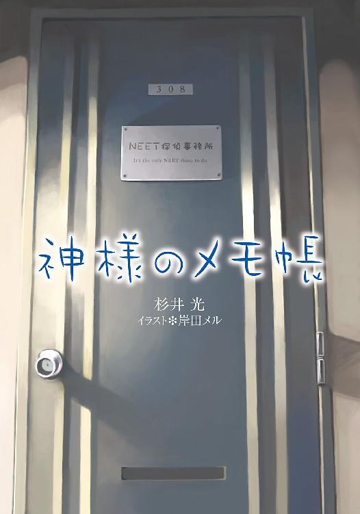
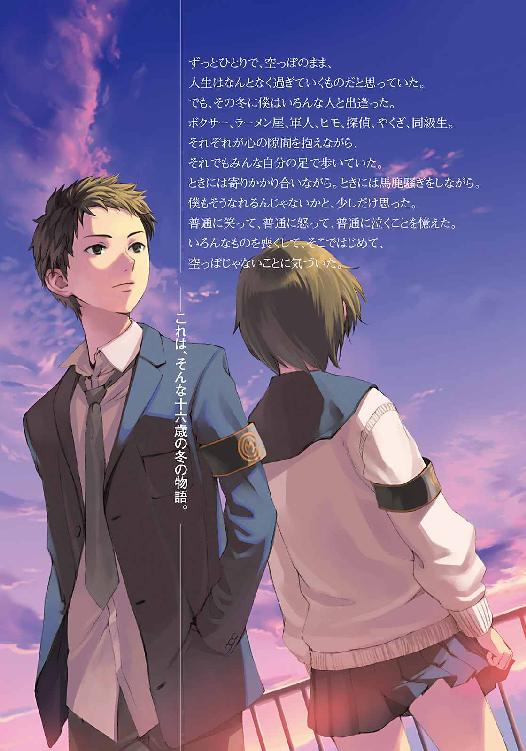
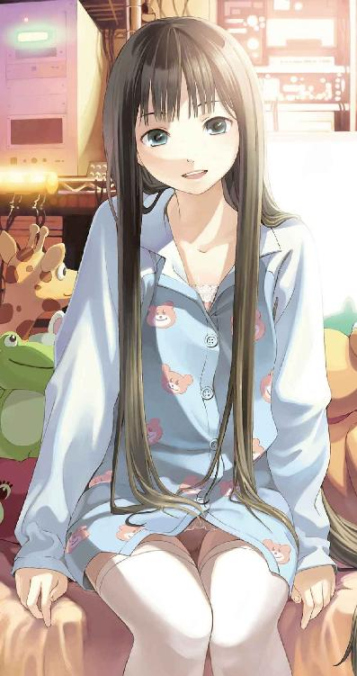
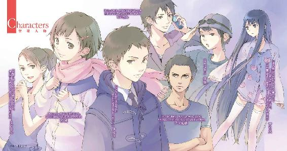
本書（電子版）に掲載されているコンテンツ（ソフトウェア／プログラム／データ／情報を含む）の著作権およびその他の権利は、すべて株式会社アスキー・メディアワークスおよび正当な権利を有する第三者に帰属しています。
法律の定めがある場合または権利者の明示的な承諾がある場合を除き、これらのコンテンツを複製・転載、改変・編集、翻案・翻訳、放送・出版、公衆送信（送信可能化を含む）・再配信、販売・頒布、貸与等に使用することはできません。
「感謝を表す原始的な反応です。快感を与えるための。つまり、ふだんのわたしたちの宿主は、とても愚かなので、肉体的感覚でこちらの感謝を表すしかないのです」
「ありがとう。わたしを運ぶことにしてくれて、ほんとにありがとう」
『たったひとつの冴えたやりかた』より
（ジェイムズ・ティプトリー・ジュニア／浅倉久志訳）
１
十六歳の冬に、僕は実にいろんな人と出逢った。ボクサー、軍人、ヒモ、探偵、やくざ。彼らはみんな種類のちがうニートだった。ニートというのはニュースや新聞でたまに見かける言葉で、やる気のない無職の若者を指す言葉だと思っていたけれど、ニートにもそれぞれの顔がある。だれもが同じ理由で仕事をせず学校にも行っていないわけじゃなかった。
「ニートというのはね。なにかが『できない』人間や、なにかを『しようとしない』人間のことじゃないんだ」と、探偵は僕に教えてくれた。「ちがうのはただ、ルールなんだよ。みんなが双六をやってる盤の上に、ぼくらだけチェスの駒を並べてるようなものさ」
「よくわかんないけど。邪魔してる、ってこと？」と、僕はそのときは無邪気にも訊いてしまった。探偵は、さくらんぼみたいな唇をすぼめてしばらく考え、それからにっと笑った。
「先に進みたい人間にとっては邪魔だろうね。ひとまとめにしてラベルを貼って処理場に引っぱっていきたい気持ちはわかる。指さして嗤いたい気持ちもわかるよ。嗤えばいいんだ、どれだけ言葉を取り繕おうと、ぼくらが今までもこれからも社会経済にマイナスしかもたらしていないのは動かしようのない事実だから。でも」
探偵は広げた自分の両手を見つめ、また顔を上げた。今度は皮肉な苦笑ではなく、冬の晴れ間みたいにあたたかい笑い顔だった。
「ぼくらはぼくら自身を嗤わない。ミミズは暗闇を怖がったりしないし、ペンギンは空が飛べないのを恥じたりしないのと同じように。それが生きるってことだよ。ちがうかい？」
僕は答えられなかった。そんなこと、これまで考えたこともなかったから。だって、なんか小難しそうなこと言ってるけど要するに駄目人間だろ？
でも、その冬に僕ははじめて人が死ぬところを見て、はじめて人を殴った。生きることについて自分なりにほんの少しずつ考え始めることになった。生きることをやめちゃったやつとか、死ぬことをやめちゃったやつとかを見たら、たぶん、だれだってそうなる。
でも、それはずっと後の話だ。まずは、その冬に僕が出逢った人たちの中でただ一人の、ニートじゃない普通の女の子のことから話そうと思う。
彩夏とはじめて逢ったのは十一月の終わり頃だった。
僕はその火曜日の放課後、南校舎屋上の給水塔の上でぼうっと彼方の高層ビル群を眺めていた。いつもなら授業が終わってすぐにコンピュータ室に行って部員一名の部活動にいそしむんだけど、午後にＩＴ選択授業がある日は、放課後も生徒が大勢居残って普段さわれないパソコンで遊んでる。そこにのこのこ入っていくのは気が引けるので、毎週火曜日と木曜日は屋上で時間を潰すことにしていた。北校舎の二階に見えるコンピュータ室に向かって、さっさと帰れよ電波を十分くらい送り込んでから、ため息をついて街をながめる。
僕の越してきたこの街は二色に色分けされている。病人の静脈みたいな細い川がその境目だ。こっち側には小さな工場の錆びた屋根、肩を寄せ合った安アパートの並び、それから高校。なぜか寺と墓地も多い。僕の家もこっち側。向こう岸には首都高速の高架、無数の路線を呑み込む巨大な駅、複雑に交差した坂道に沿って居並ぶビル、デパート、テレビ局。晴れていると彼方に都庁の影も見える。東京は不思議なところだ。日本中のどこにでもある退屈な住宅地と、ビルだらけの都会とが、平気な顔をして隣り合っている。
駅のあたりは、屋上から眺めていると、テレビＣＭの一コマみたいに現実感がなかった。たぶん、僕がそっちに寄りつかないせいだろう。学校の帰りに制服のままするっと遊びに行けるので、うちの高校は内外で人気が高いらしい。明るい色のセーラー服だと四割増しくらいでもてるんだそうだ。
その日は曇り空で、いつもはぎらぎら太陽を照り返すビルの表面をよく観察することができた。とはいってもまったく同じように区切られたガラスが並んでいるだけなんだけど、僕は頭の中でその区切りのあっちやこっちに色を塗りながらドット絵を描いていた。
そうやってひとりきりで時間を潰すのには慣れていた。父親の仕事の関係で、しじゅう転校していたからだと思う。十月のはじめにその高校に転入してきた僕は、活動している部員が他にいないからという理由だけでパソコン部に入って、だれにも気づかれずに学校生活を送っていた。高校なんて通う意味はないんじゃないかと思うこともよくあった。授業にも全然ついていけないし。
ビルを眺めていると突然、足下でがちゃりと音がしたので、僕は腰を浮かせた。給水塔は屋上から突き出た階段室の上に置かれている。階段を上ってきただれかがドアを開けた音だ。
「あれ、いないのかな」
女の子の声が聞こえた。僕がおそるおそる身を乗り出して真下をのぞいたとき、彼女が振り向き、目が合った。
ショートカットに、気の強そうな眉と、対照的に人懐っこそうな可愛い瞳が印象的な女の子だった。見憶えがあるような気がした。身を起こそうとすると、彼女がめちゃくちゃ驚いた顔で「わ」と叫んだ。僕は給水塔から転げ落ちた。
足から落っこちたのは幸運だったけど、手の甲をコンクリートの壁で盛大にすりむいたので、僕らが出逢って最初にしたことは、彼女が持ってきたじょうろの水で傷口を洗って手当てすることだった。
「なんでこんなとこに登ってるかな、危ないよ！」
擦り傷に絆創膏をべたべた貼りながら彼女は言う。なんでと訊かれても困る。
「......馬鹿となんとかは高いところが好きなんだよ」
「馬鹿の方を伏せ字にしないと意味ないよ、それ」
ものすごく冷静に突っ込まれてしまった。逃げ出したくなったけど、手首をつかまれているのでそうもいかない。
「はい、おしまい。もう登っちゃだめだよ？」絆創膏まみれになった僕の右手をぽんと軽く叩いて、彼女はまるで保母さんが幼稚園児を諭すみたいににこやかに言う。「とか言って、あたしも登ったことあるんだけどね。はしごがあると登りたくなるよねやっぱり」
というかこいつだれだ？ 学校の人間は顔も名前も一人として憶えていなかったので、こんなになれなれしく話しかけてくる女の子にはまったく心当たりがなかった。
ふと、彼女の左腕に巻かれた黄色い腕章が目に留まる。古びて文字は変色していたけれど、かろうじて『園芸委員』と読めた。そこでようやく、フェンスの際に並んだたくさんの鉢植えに気づいた。園芸委員会なんてあったのか。
「あ、そうか、あの高さからじゃないとコンピュータルームがよく見えないのか。藤島くんて、あれなのかな、同じ部屋にだれかいると集中できないとか？ 芸術家タイプ？」
フェンスに手をかけて向かい側の校舎に目をやりながら彼女が言った。僕はぎょっとする。
「──なんで知ってんの？」
自分でびっくりするくらい素っ頓狂な声が出た。彼女はきょとんとした顔を僕に向ける。
「だって、うちのクラスこっちの三階だから、コンピュータルーム見えるもん。藤島くんいつも窓際の席使ってるし」
見られてた。血の気が引くのがわかった。この女どこまで知ってる。ひょっとしてアレなＣＧを彩色してるとこまで。いやそれより。
「なんで、僕の名前」
今度は彼女が野球投手のワインドアップみたいなかっこうで驚く番だった。
「憶えてないの？ 同じクラスなのにっ？」
「え」
僕はものすごく焦る。転校してきてから、ほとんどだれとも喋らないようにしてきたから、クラスメイトの名前なんて一人も思い出せないのだ。
「購買部の場所も教えてあげたのに。世界史の資料集もいっぺん貸してあげたのに。体育のときに着替えも手伝ってあげたのに！」
「ちょ、ちょっと待って」
「最後のは嘘だけど」
この女......。
「ひょっとしたら、とは思ってたけど、ほんとに憶えてなかったんだね......」
泣きそうな目でそう言われると、なんだか申し訳なくなってくる。
「篠崎彩夏。藤島くんの二つ隣の席だよ？ なんで憶えてないかな」
「ごめん......」
「だいたい藤島くんは一年四組だっていう自覚が足りないんだよ、文化祭もさぼるし」
いや、でも、転校してきて次の週に文化祭ですよ？ 休むしかないだろ。
「クラス章もつけてないし。都立校でクラス章がある学校すごく珍しいんだよ？ つけなきゃ損だよ」
なにがどう損なのかよくわからなかったので、「あれ失くしちゃった」と僕は嘘をついた。
「じゃ、あたしの貸してあげる。うちにスペアあるから」と、彩夏は自分のセーラーの襟からバッヂを外した。
「え、いや、要らないよ」
「いいから、こら、暴れるな」
逃げようとした僕は、彼女に後ろから捕まえられた。僕は思わず息を止めて固まってしまう。背中から彼女の両手が回されて、僕のブレザーの襟をまさぐっている。これは、客観的に見て、後ろから抱きつかれているように見えるんじゃないだろうか、いや、待て、落ち着け僕。
ものすごく長い体感時間の後で、彩夏の体温が僕の背中から離れる。
「うん。よしよし」
彼女は僕の正面に回ってくると、満足そうにうなずく。緑と青に塗られた襟章を、僕は複雑な気持ちで見下ろした。首輪でもつけられた気分だった。なんだってこいつは、こんなことまでしやがるんだろう。転校生にやたらと世話を焼きたがるやつはけっこう見たけど、ここまで気安いのははじめてだった。
「校則で決まってるんだから外しちゃだめだよ？」
「なんで東京の高校は変な校則がいっぱいあるのかな......」
東京は自由だと思ってた僕が悪いのだろうか。とくに迷惑なのが、最低一つは部活動を義務づけられていることだった。おかげでこんな目に遭っている。
「校則なかったら、藤島くん帰宅部だったんだ？」
なんだよ。悪いかよ。
「でもパソコン部、来年なくなっちゃうよ？」
「......え？」
「もうすぐ三年生卒業でしょ。四月に予算決めるときに、部員が最低二人いないと、廃部なんだって」
そんな重要事項、初耳ですが。僕はパソコン部顧問教師のうらなりナスビ面を思い出す。あの野郎、黙って潰す気だったな。せっかく居心地のいい部活だったのに。
「あのねっ」
いきなり彩夏が声を高くするので。僕はびっくりして半歩後ずさった。
「ものは相談なんだけどっ。藤島くんが交換条件を呑んでくれるなら」と彼女は、なんだか悲壮な覚悟を決めたみたいな顔つきで言った。「あたし、パソコン部に入ってもいいよ」
「......交換条件？」
「実は園芸部も、あたし一人しかいないのです」
なぜか自慢げに彩夏は、左腕の腕章を僕につきつけた。園芸部？ 園芸委員じゃないのか？
「委員会はずっと昔になくなっちゃったの。これ、物置から見つけてきたやつ。かっこいいでしょ？」
「いや全然」
「どうしてそういうこと言うかな！ とにかく」
彩夏は顔を真っ赤にしている。なんでこんなにハイテンションなのか、わからない。
「弱小部は助け合って生きていこうよ、ね？」
けっきょく彩夏の迫力に圧されて、僕は交換条件を呑むことになった。二人で入部届けを職員室に出して、それでおしまいのはずだった。屋上ではひとりになれないとわかったので、放課後の時間を潰す場所を別に探さなきゃいけなかった。図書室とか職員用トイレとかを検討しながら僕は家に帰った。
でも次の日の放課後、授業が終わるなり彩夏は僕の机までやってきて言った。
「あたし屋上の鍵借りてくるから、藤島くんは道具取ってきて。玄関の脇のロッカーわかるでしょ？ 園芸委員って書いてあるやつ」
クラスメイトの視線が、鞄に教科書を詰め込んでいた僕と、彩夏との間を何度も行き来する。
「名前だけの部員じゃなかったの？」と僕は口を挟む。
「......名前だけだったの？」彩夏は振り向き、口をおさえて青ざめる。「そ......そうだよね、ごめんなさい。あ、あたし、嬉しくて、ちょっと舞い上がっちゃって、あの」
涙ぐむ彩夏。クラスメイトの視線が痛かった。まるで僕が泣かせてるみたいな、いや、その通りなんだけど、とにかくこれはまずい。
「えと、あの、ちょっと」
「藤島くんもパソコン部で忙しいもんね。ごめんね？」
「いや、べつに──」
「こないだパソコンで描いてた女の子の絵、もうすぐ完成だもんね。スカートは後から描くんでしょ？」
「わああ！」
僕は泡を食って彩夏の口をふさいだ。
「わかった、オーケー、手伝うから」
「......ほんとに？」彩夏の顔から一瞬で涙の気配が消し飛ぶ。「ありがと、藤島くん！」
いたずらっぽく舌をちらと出すのも見えた。くそ、この女。
「......あや、部員増えたんだ？」
そばにいた女子生徒が、複雑そうな表情でちらちら僕を見ながら言う。
「うん。戦力倍増。植物のことならなんでも言ってくれていいよ」
クラスメイトたちは顔を見合わせる。
「あ、じゃあ」男子の一人が手を挙げた。「トイレの洗面台のカビがすごいからなんとかしてくれ」
「カビは植物じゃないよ！」と彩夏。
「いや、植物だろ？」「植物と動物だけで分類するのはもう古いんだってさ」「トイレのあれは苔じゃね？」「地衣類だと植物じゃないんだよ」「生物部ちょっと黙ってろ」「どんどん広がってるよな」「人の顔に見える」「マジかよ」
次々と男子生徒が口を挟んできて論議が盛り上がる。なんなんだこのクラスは。二十分くらい侃々諤々したあげく、彩夏が保健室からほんとにカビキラーを借りてきた。当たり前のような顔をして男子トイレに入ろうとする彼女を、僕はあわてて止める。
「......僕がやるから」
トイレの壁一面に広がったカビを前に途方に暮れる僕を哀れに思ったのか、同級生が何人か手伝ってくれた。塩素の刺激臭がトイレ中に充満する。
「藤島も大変だよな......」
めちゃくちゃ同情されてしまった。
「まあ、篠崎も悪いやつじゃないから」「悪いやつじゃないな」「うん」
壁をスポンジでこすりながら、僕も力なくうなずき返す。
そこでふと気づいた。クラスメイトから名前で呼ばれるのは、それがはじめてだった。しどろもどろになった僕は、ろくな言葉も返せなかった。
「新入部員歓迎会しようよ、おごるから」
その日の夕方、作業を終えて蘭の鉢植えを残らず玄関口の内側に運び込むと、彩夏が言った。
「ラーメン屋さんでバイトしてるの。店員だから安くしてくれるよ」
女子高生がラーメン屋でバイトってのも珍しいな、と思う。
「ちょくちょく行ってるうちに働くようになったの、面白い常連さんがいっぱいいるし。一緒に行こ？」
「なんで──」
断ろうとしたらまた泣く構えを見せたので、僕はしかたなくうなずく。道具をロッカーにしまって鍵を職員室に返すと、彩夏と一緒に校門を出た。
首都高より向こう側には行ったことがないと言ったら彼女はめちゃくちゃ驚いた。
「だって住んでるのもこの近くなんでしょ？」
「引っ越してきたばっかりだし、駅前は人多いからあんま行きたくない。行く用事もないし」
「ブックファーストとかＨＭＶとかも行かないの？」
僕はうなずく。本もＣＤもたいがい通販で買うことにしていた。店がでかいからって欲しい物が置いてあるわけじゃないし。
「そっか。でも、うちの店はけっこう駅から離れてるよ。ラーメンはそんなに美味しくないけどアイスクリームがすっごい美味しいので有名」
「アイス屋やれよ......」
「それミンさんに絶対言っちゃだめだよ。ラーメンの上にアイス載せて出してくるよ」
ミンさんというのはそのラーメン屋のマスターだという。中国人だろうか。
二歩前をスキップ気味の足取りで楽しげに歩く彼女を見ながら、不思議な気持ちになる。なにがどう間違ってこんなことになってるんだろう。なんで僕みたいなやつにいちいちかまうんだろう？
運送トラックの舞い上げる砂埃を浴びながら橋を渡り、街に入る。首都高の高架をくぐって駅前へ。人の海の中をもまれながら流されるように南口に入り、地下街を通って東口に抜ける。
地上に出て線路沿いに進んだ先、ホームレスのテント小屋が立ち並ぶ公園を抜け、街の灯が届かなくなったあたりで右手に入る。ラーメン屋は、薄暗い袋小路にあった。その雑居ビルの一階、『ラーメンはなまる』と書かれたのれんのあたりだけが明るくて、誘蛾灯にまとわりつく虫みたいに客が集まっていた。
ひどく狭い店だった。床面積のほとんどは厨房が占めて、カウンター席が五つきり、あとの客は店の外にあるパイプ椅子で食べている。中にはひっくり返したビールケースに座って丼を抱えているサラリーマンもいる。
「どっかそのへん座ってて？」
彩夏はそう言って店の裏に回ってしまった。そのへんて言われても。椅子もビールケースも絶賛満席なんですけど。
彼女が入っていったビルとビルの間をのぞきこむと、厨房に続く入り口の脇に非常階段があって、そこに一人の男が座ってラーメンをすすっていた。階段の足下には、重ねた古タイヤと、背の低いドラム缶、しみだらけの段ボール箱。
男が顔を上げた。僕は思わず一歩後ずさった。男は二十歳前くらいで、肌が浅黒くて、もう十一月だってのにＴシャツ一枚で、盛り上がった上腕二頭筋がむき出しで見えた。ぎょろりとした目でにらまれて、殺される、と一瞬だけ思った。
「おまえ、Ｍ高生か」
「いやちがいます、まだ中学生ですよ高校生に見えますか？」自分でも理由はわからないけどとっさに嘘が出た。男は丼を置いて言う。
「そか。ところで数学の福本先生の髪はまだ無事？」
「いや、もう生え際が北極点をとっくに通過して......はっ」
寄ってきてデコピンされた。額に穴が開いたみたいに痛い。
「......ぅう......卑怯だ、卒業生なら最初からそう言えばいいのに」なにが卑怯なのか自分でもよくわからないが（というか制服見ればＭ高生なのはバレバレなのに気づかない僕の方がどうかしてたんだけど）、額を押さえてしゃがみ込み、うめく。と、背中から声がした。
「卒業生じゃないよ、そいつは中退。落ちこぼれだ。ほら、これ食え」
振り向くと、灰色のタンクトップを着た若い女の人が立っていた。後ろ髪は太いポニーテイル、大きく開いた胸元からは、巻き付けた白いさらしが見える。土木作業員みたいなかっこうだったけど、白抜きの文字で『はなまる』と書かれた黒い腰エプロンをつけていたので、店の人だとかろうじて気づいた。ひょっとしてこの人がミンさん？ 女の人だったのか。
ミンさんが僕の手に押しつけたのは、紙カップに入ったアイスクリームだった。
「あのなマスター、何度も言ったけど自分からやめたんだ、落ちこぼれてねーぞ」
「ツケ払ってからでかい口きけ無職」
「赤ん坊は生まれたときみんな無職っていうだろ。そこから世間の汚い色に染まってくんだ」
それ無色ちがうから。でもミンさんは突っ込まずに厨房の白い湯気の中に戻っていった。僕はアイスのカップを手に、しばらく立ちすくむ。
「おい、おまえ」と、中退生の声。振り向いてとっさに額をかばう。
「なに警戒してんだよ。おまえ、一年だよな」と僕の襟のクラス章を見て彼は言う。「中間テストの赤点いくつあった？」
「な」
なんでそんなこと訊くですか？
「藤島くん、だめだよテツ先輩とあんまり喋っちゃ、ニートが感染るよ」
制服の上からそのまま黒いエプロンをした彩夏が、丼を満載したトレイを手に厨房から出てきて言った。色黒男──テツ先輩は歯をむいてデコピンの真似だけした。男女差別だ。彩夏は舌を出して、それから店の外の席に座っている客の方へ給仕に行ってしまう。
「いいから答えろ、おまえはいかにも一年生のうちからすぐ赤とりそうな顔してる」
でっかいお世話だったが事実その通りだったので、僕は「英語と日本史で追試だった」と小声で答えた。テツ先輩は満面の笑みを浮かべて僕の腕をつかみ、ものすごい力で引っぱりおろしてドラム缶の上に座らせた。
「この席はほんとはニート専用だけど、おまえは見込みがある。中退したら来い、俺らはおまえを歓迎する」
「いや、そんな見込み要らないです」俺らって、他にだれ？
「なんでだよ。台選びから教えてやるよ？ 店員にも知り合いいるから設定６の情報とかすぐ入るし」
よく見るとテツ先輩はジーンズの背中にスロット情報誌を挟んでいた。うわあ。この人パチプロだ。正真正銘の駄目人間だ。僕はテツ先輩の方をなるべく見ないようにしながら木のスプーンでアイスを口に運ぶ。晩秋の夕空の下、ラーメンのスープの香りがする熱気を顔に浴びながら味わうアイスクリームは格別の美味しさだった。
テツ先輩の言う『俺ら』の二人目は、僕がチャーシューメンをすすってる最中に現れた。いきなり後頭部になにかごりっとした硬いものが押しつけられ、「動くな。武器を捨てて両手を挙げろ。氏名と所属部隊を言え」と声がする。僕はチャーシューとスープを噴き出しかけた。
「え、え、えと」両手を挙げたら丼落とすんですけど。
「遅かったじゃん少佐。アホやってないで座れよ」
テツ先輩はヴァニラアイスとコアントローソースをかき混ぜながらのんびり言う。
「ここは自分の席ですよ。だれですかこいつは」
「ナルミ。彩夏と同じ部活だって」
「後からヒロさんも来るって言ってたのに、どうするんですか座る場所」
「ヒロはナルミの膝の上でいいだろ」
「なるほど」
なるほど？
少佐と呼ばれた男はようやく僕の視界に入ってきた。濃緑と茶色の混じった迷彩色のトレーナー、硬そうな丸帽、ゴーグル型のサングラス。痩せていて、肌は小学生みたいに綺麗なピンク色だった。僕と同い年くらいに見える。手にしていたモデルガン（だと思う、本物だったらどうしよう）をカーキ色のバックパックにしまいながら、僕を見て言う。
「でもこいつ、高校生じゃないですか。ニートの定義は」
「心配すんな。俺の後輩だし、あと二年もすれば立派なニートになる」
「なりませんよ！」と僕はあわてて抗議した。少佐はゴーグルの奥から僕をにらみ、段ボール箱の上に腰を下ろす。
「一億総ニートの時代には、このような量産型ニートも必要なのか。我が国の未来は暗い」
「......量産型？」
おそるおそる訊いてみると、少佐はびっと僕を指さしてまくしたて始めた。
「そもそも貴様はニートの定義を知ってるのか？ 原義では十六歳から十八歳の非就学・非就職者を指していたのが、英国から日本に輸入されて十五歳から三十四歳までと爆発的に定義が拡大されたのだ。あまりにも多様化したために、能動型・受動型の二種、刹那型・挫折型・蟄居型・躊躇型の四種、あるいは三次元軸八象限で分類しようとの試みも見られるが自分に言わせればすべてナンセンス」
「向井さん、お待ちどおさま」
彩夏が少佐の分の塩ラーメンを持ってきた。向井さんというのが少佐の本名らしい。
「ごめんね藤島くん、もうちょっとしたらピーク過ぎるから」
僕は彩夏に全力で、この座から脱出したいからなにか口実を作ってくれと念を飛ばしたけど無視された。少佐はスープを一口すすってまた喋り出す。
「そもそもニートは文化依存症だ。我が国のような富強国でしか生まれ得ない。我々はもっとニートを誇るべきだ！ ニートを育んだ国土を愛し、内外の敵から守るために立ち上がらなくては！ 量産型ではなく精鋭のニートを募り切磋琢磨し、日本新党を結成し悪の枢軸に断固たる戦いを挑むのだ！ 増えるぞニート！ 燃え尽きるほどニート！」
「うるせー黙って食え！」
厨房からミンさんの怒鳴り声と一緒に小鍋が飛んできて少佐の頭に激突した。
三人目がやってきたのは、少佐が帽子をぬいで後頭部のこぶをさすっているときだった。
「あれ。どうしたのその子」
男の声がして、路地の入り口に背の高い影が差す。
明るい色のジャケットとチノパンツを少し崩した感じで着こなした青年が立っていた。どこの業界かわからないけど業界人のオーラが出ている。テツ先輩とは違う意味で気圧されてしまい、その人が寄ってきたのでドラム缶からずり落ちそうになった。
「彩夏の知り合い。ほら、Ｍ高の」とテツ先輩が言うと、「あー、あーあー」とその人は笑って、僕のブレザーの肩を叩いた。
「テツがこの制服着てた時代もあったんだよなあ」
その人は狭苦しい勝手口周辺を見回すと、テツ先輩の隣、階段に腰を下ろした。僕は内心、首を傾げる。この場所はニート専用とかどうとか言ってなかったっけ？
「はじめまして。おれ、こういうもんです」と、その人は胸ポケットから薄い名刺入れを取り出して一枚僕に差し出してきた。やっぱり、ちゃんと働いてる人なのだ。そう思って受け取った名刺を見たら、こんなことが書かれていた。
『ニート
桑原 宏明』
......はっ。一瞬、意識を失ってしまった。
自分の生きている世界を確かめるために、僕は深呼吸してあたりを見回した。テツ先輩はアイスに、少佐はのびかけた塩ラーメンにかかりきりだった。彩夏は厨房の湯煙の中で丼を洗うのに忙しく、ミンさんは中華鍋の炎と格闘中、見上げた晩秋の夜空はどこまでも高く、突っ込む人間は僕だけだった。
「え、と......お仕事がニートなんですか？」
こわごわ訊ねると、ヒロさんは歯磨き粉のＣＭみたいな笑顔を浮かべて答える。
「なに言ってんだよ。ニートは職業じゃないぞ？」
そりゃそうだよなあ、とうなずきかけた僕にヒロさんの追い打ちが飛ぶ。
「ニートというのは生き様なんだな」
僕はもう泣きそうだった。生き様だってさ。目を細めて髪をかきあげるヒロさんは無駄にかっこよかった。なんなのこの人たち。
「ヒロなんで名刺作ったんだっけ」
「これナンパに便利なんだよね。見せるだけでウケるから」
「彼女に怒られるから無差別爆撃はやめたと言ってませんでしたか」
「あ、あの娘とは別れた。今はヘルス嬢の部屋に泊めてもらってんの。最初から無職って主張しとくと居着くの楽だわーほんと」
ヒロさんはヒモだった。そうか、生き様かあ。
彼らの会話を遠く聞きながら、僕はラーメンのスープを飲み干した。味はよくわからなかった。断片的な話から察するに、全員まだ十八歳か十九歳らしい。輝かしい未成年。
テツ先輩の言う通り、僕ももうすぐこうなるのかな、とぼんやり思い始めた。それだけはかんべんしてほしかった。
みんなラーメンを食べ終えて食後のアイス（テツ先輩は二つ目）をついばんでいるとき、不意に狭いビルの間にけたたましいロックのリズムが鳴り響いた。『コロラド・ブルドッグ』のイントロだ。三人とも飛び上がるように立ち上がって、それぞれの携帯電話を取り出す。三つの携帯がまったく同じタイミングで同じ着メロを鳴らしていた。
テツ先輩が真っ先に電話に出た。少佐とヒロさんの携帯はいきなり黙り込み、二人はなんだか悔しそうに腰を下ろす。
電話を切ったテツ先輩は、厨房に向かって怒鳴った。
「マスター、注文！ アリスから。ネギラーメンの麺とチャーシューと卵抜きで」
それはただのネギじゃないのか？ と思ってたら、三分後にミンさんが持ってきた丼にはほんとにネギとスープしか入ってなかった。
「うちはラーメン屋だってあいつにちゃんと言っとけ」とミンさんは苦々しい顔で言う。
スープの海面にこんもりと盛り上がった白髪ネギの島を囲んで、テツ先輩と少佐とヒロさんは渋い顔をして額を突き合わせた。
「問題は、だれが持ってくかだ」とテツ先輩。
「アリス、機嫌悪そうだった？」とヒロさんが訊ねる。
「かなり」
「出前ですか？」と訊いてしまったのが僕の運の尽きだった。テツ先輩はうなずき、それからはたと膝を打った。
「四人いるし、山手線ゲームで負けたやつが届けることにしよう」
......四人？
「お題は」
「じゃあ『ハローワークによく置いてある冊子』で」
「わかりました。パス一回までですね」
「ちょ、ちょっと待って僕も入ってるんですか？」
「俺からな。《雇用保険受給資格者のしおり》」
「《三十二歳からの自分探し》」
「《二分であなたの天職が見つかる！》」
「え、あ、あの」
「ナルミ、パスいちな。《だれも教えてくれなかった得する退職法》」
「《パソコン一台でらくらく起業できる！》」
「《新しい職場に三日でなじむための完全マニュアル》」
「......そんなん知ってるわけないでしょ！」
「逆切れかよナルミ。ニートならみんな知ってるぞ。職安に一回だけ行ってなんもしないで帰ってくる。全員通る道だから」
いや、ニートじゃねえから。
「敗戦は素直に認めろ負け犬」
「気にしなくてもいいんだよナルミ君。知らなくても恥ずかしいことじゃないから」
「当たり前です慰めないでください！」
「でも配達はしてくれよ」
絶句。まんまとはめられた。
出前先は、ラーメン屋の入っているのと同じビルの三階だった。３０８号室。「行けばわかる」と言われた通りだった。ドアにでっかい看板が打ち付けてあったのだ。
《ＮＥＥＴ探偵事務所》
可愛らしくレタリングされた字でそう書いてあり、その下には謎の英文があった。
It's the only NEET thing to do.
今日一日でだいぶいいかんじに脳が麻痺していた僕は、ニートが探偵をやっているくらいではもう驚かなくなっていた。ラーメンを載せたトレイの角でインタフォンのボタンを押す。インタフォンはカメラつきに改造されていて、青いランプがちかちかと点滅した。テツ先輩によればこれは『入ってよし』のサインらしい。
中は奥行きのある細長いワンルームだった。冷房が効いているのか外よりもさらに寒い。冷蔵庫とキチネットと洗濯機が並んだ廊下の奥に、狭苦しい部屋が見えた。間にドアがない造りなので、天井までの高さのあるＰＣラックや数え切れないほどのモニタ画面で部屋の壁が埋まっているのが玄関からでも見える。
「ラーメン、持ってきたけど......」
「入りたまえ」
奥から女の子のかなり幼い声がした。
トレイを手に部屋の入り口まで行った。とんでもない部屋だった。三方の壁一面がわけのわからない機器と液晶画面とコードの束で覆い尽くされ、わずかに残った部屋の中央の床はベッドが占めていた。毛布の上には大小さまざまなぬいぐるみ。その中に埋もれるようにして、僕に背を向けて座っていたパジャマ姿が、振り向いた。
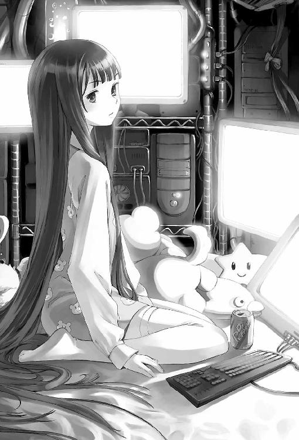
人形かと思った。小さな顔、不釣り合いに大きな瞳、冗談みたいに白い肌、細っこい手足、シーツに川をつくる長いさらさらの黒髪。ファンシーなクマさんの柄が入った水色のパジャマ。僕はトレイを持ってしばらく呆然とその女の子を見つめていた。
女の子は、キーボードの載っていた可動式のテーブルを脇へ押しやると、かわりに別の細長いテーブルをベッドの上に引っぱり出してきた。病室のベッドに備え付けてあるようなやつ。
「なにを突っ立っているんだい。ぼくはネギラーメンを注文したんであって高校生の形をした置物を注文した憶えはないよ」
「あ、ん......えと。そこに置けばいいの？」
「この距離からきみの持ってる丼に手が届くほどぼくの腕が長いように見えるのかい？」
すげえ言われようだった。なんだかもう怒るのも呆れるのも通り越してすがすがしい。僕がトレイを女の子の前のテーブルに置くと、彼女は割り箸を取り上げてじっと見つめ、それから大きく深呼吸した。ちっちゃい顔に気合いがみなぎる。箸先を持った両手に力がこもった。けれど割り箸は《人》の字の形に広がってぷるぷる震えたままいっこうに割れない。どんだけ非力なんだこの娘。
「......割ってあげよか」
パジャマ娘はきっと僕をにらみつけた。
「きみは翼が弱くて飛べない雛鳥を見つけたら飛ぶのを手伝ってやろうと言って空に放り投げて自己満足に浸るタイプか。最低だな。きみがしたり顔で歩き去った背後でその雛鳥はアスファルトに叩きつけられて死んでるのに、気づきもしないなんて、愚昧にもほどがある」
なんで割り箸一本でここまで言われなくちゃならないんだ、と思ったけど、僕は口をつぐんだ。彼女は再び息を大きく吸い込んで割り箸に全力をそそぎ込む。
ぼき。
右手側の箸が折れた。よくあるパターンだ。彼女は長さが不揃いになってしまった割り箸をしばらく無表情に見つめ、それから「う、う......」と涙目になる。おい、泣くな！
すん、と鼻を鳴らすと、潤んだ目を手の甲でこすり、彼女はネギラーメン（というかネギ）を食べ始めた。と思ったら僕をまた上目遣いでにらみ、「きみはほんとに悪趣味だな。他人の食事を黙ってじっと見ていて楽しいのかい」と言う。
「あ、ご、ごめん」
部屋を出ていこうとしたら、今度は、「どこへ行くんだ。きみが戻ってしまったら食べ終わった後の丼はだれが片づけるんだ。それくらい考えたまえよ」とか言うのである。僕はぼりぼりと頭を掻くと、ベッドに背を向けたまま部屋の入り口にしゃがみこんだ。
パジャマ娘がネギを噛むしゃくしゃくというかすかな音を背中に聞きながら、僕はその日一日を振り返っていた。なんとなく断りきれなくて彩夏についてきただけなのに、いやあ、色々あった。もう疲れたよ。寝そうになっていた僕の背中に、再び彼女の声が刺さる。
「ナルミ。食べ終わった。冷蔵庫から飲み物を取ってきてくれたまえ」
僕はびくんとして立ち上がり振り向く。
「え、え？」
「冷蔵庫から飲み物だ。他人の家にあがりこんで寝ようとするなんて、ほんとに図々しいやつだなきみは」
おまえには言われたくない。でも僕は素直に従った。くたびれていると反抗する意思もなくなってくる。冷蔵庫を開けると中には深紅の３５０ミリリットル缶がぎっしり並んでいた。他にはなにも入っていない。コーラかと思ったら全部ドクターペッパーだった。突っ込む気力もなかった。パジャマ娘はドクターペッパーをごくごくと一気飲みすると、幸せそうな顔をする。その表情を見ているとなんだかすべてを赦せそうな気がしてきた。
「神様が創世七日目に休んだのはドクターペッパーを飲んでいたからだよ。ドクターペッパーがなければ今頃一週間は十二日くらいだったにちがいない」
「そうスか」
「ナルミ、きみも飲むといい。うちの冷蔵庫に入っているのは一本たりともやれないけれど売ってる店を紹介してあげよう」
くれるんじゃないのかよ。
「......って」僕はそこでようやく気づいた。「なんで僕の名前知ってるの」
テツ先輩が電話で話していただろうか？ いや、あのときは一方的に注文を受けてすぐ切られていた。僕の名前なんて出る間もなかった。
「藤島鳴海、十六歳男、身長１６４センチ体重５１キロ、Ｍ高校一年四組......」
パジャマ娘の口から、僕のプロフィールが──住所、電話番号、学歴、家族構成──ずらずらと出てきた。さすがに僕は言葉を失った。
「彩夏が新入部員がどうのと話していたから、調べたんだ。学校というところはセキュリティの甘さと情報密度のアンバランスがすさまじいのだよ。気をつけた方がいい」
僕は呆然と、部屋を取り巻くコンピュータの分厚い壁を見回す。
「......ハッカー？」
「ハッカーじゃない」
パジャマ娘は笑って首を振った。
「ニート探偵だよ」
アリスというのは半分本名なのだと探偵は言った。
「有子をそう読ませているのだよ。それと、ジェイムズ・ティプトリー・ジュニアの本名から拝借した」
「だれそれ？」
アリスはベッドの上で膝を抱え、馬鹿にした目つきで僕を見る。
「小説家だよ。玄関の看板に書いてあったろう。一文字もじってあるが、あまりにも有名な作品の文句じゃないか。読んだことないのか」
看板に書いてあった英文を思い出し、僕は首をひねる。
「探偵ってことは......その、依頼受けて色々頼まれて調べるわけ」
「ただの探偵じゃない。ニート探偵だ。調布と田園調布くらい違うから気をつけたまえ。ただの探偵は聞き込み張り込み歩き回って足で情報を稼ぎ探し物を見つけだす。ニート探偵は」
アリスは胸を張り、背後の壁を埋め尽くす機器類に向かって手を振る。
「部屋から一歩も動くことなく世界中を検索し真実を見つけだす。ネット依存症のひきこもりじゃないかと、きみは今そう思ったね？ 隠さなくてもいい」
「うん......まあ」
「ふん。真の探偵は俗人には理解されない仕事だからね。その本質は、死者の代弁者だ。失われてしまった言葉を墓の底から掘り返して、死者の名誉を守るためだけに生者を傷つけ、生者に慰めを与えるためだけに死者を辱める。理解も歓迎もされるはずのない仕事だよ。ひきこもりがなにを偉そうなことを、という目だね」
「いや、そんな具体的な目はしてないけど」
「ほんとうに？」
「うん」
「しかし、なにか言いたげだ。遠慮なく訊きたまえ。職業柄、矢継ぎ早に質問されるのには慣れている。そして早く絶望させてくれたまえよ」
......絶望？
とくべつ訊きたいことがあるわけじゃなかった。僕はただ、のべつ幕無し喋り続けるこのアリスという奇妙な少女にびっくりしていただけだ。でも、流れ的にこっちからなにか訊かなきゃいけない雰囲気だったので、サイバーな部屋を一通り見回した後で僕は、いちばん疑問に思っていたことを口にした。
「食事とか......どうしてんの。いつもあんなの食べてるわけ？」
アリスは丸い目をさらに丸くする。
「そんな些事が、きみの真っ先に思いつく疑問なのかい」
「......食事は大切だと思うけど」
「ふむ。もっともだ。きみは変わっているな。彩夏から聞いていたのと少しちがう」
アリスは目を細めて僕を見た。微笑んでいるみたいに見える。
「栄養補給ならドクターペッパーだけでじゅうぶんなのだよ。しかしマスターがうるさいので、たまに野菜を頼んで食べている」
「だから背が伸びないんだよ......」
「背が高い方が優良であるというきみのその偏見はどこから仕入れたんだい？ 短身であるメリットと長身であるデメリットをぼくはそれぞれ百五十ずつくらいは挙げられるけれど、きみも論陣を張るというのなら受けて立とう」
「いや、ごめんなさい」
背丈のことは頭の中で考えてただけなんだけど、ぽろっと独り言で漏らしていたらしい。
「じゃあ、生活はミンさんのお世話になってるわけ」
アリスは眉をつり上げた。
「失敬な。ニート探偵だと言っただろう。ニート探偵は職業探偵だよ。紛う方無き所得があり、マスターにもちゃんと対価を支払っている」
「え、え、でもニートなんでしょ」無職のことじゃないのか？
「きみはニートというものを根本的に誤解しているようだね。ＮＥＥＴの二文字目のＥはEmployment、つまり雇用職だ。個人事業主には該当しない。あとは当人の考え方の問題だよ」
当人の考え方。
「......生き様？」
「ヒロに言わせればそうなるな。あるいはツルゲーネフはそれを幻滅と呼ぶかもしれない。ドストエフスキーは地獄と呼ぶかもしれない。サマセット・モームは現実と呼ぶかもしれない。村上春樹は自分自身と呼んでいた。ぼくはまたちがった表現を用いるが、とにかく所得があることにはかわりがない」
なにを言ってるのかさっぱりわからなかったけど、こんなパジャマ娘が実際に探偵業で稼いでいるというのはにわかには信じがたかった。そりゃあ、パソコンとネットには詳しいみたいだけど。
「疑いの目だね。いいだろう。もうすぐここに一人の男がやってきてぼくに仕事を依頼する。それを聞けばきみもぼくが職業探偵であることを認めるだろうさ」
「......え？」
そのとき、タイミングをはかったかのように、チャイムが鳴った。僕は玄関を振り向く。
「出てくれたまえ」
「僕が？」
「たまにはぼくの事務所も青ランプ以外の歓迎があってもいいと思っていたところだよ」
玄関まで行ってドアを開いた僕は、その向こうに立っていた三人の男を見て固まった。真ん中は、革のハーフコートを羽織った若い男。僕よりちょっと歳上くらいに見えたけど、狼みたいに目つきが鋭かった。その後ろ左右に従えているのは岩山みたいな筋肉男と電柱みたいな背の高い男。揃いのグレイのトレーナー。
「だれだ、おまえ。アリスは？」
狼が言った。僕がその視線に射すくめられ、唇をわななかせて言葉に詰まっていると、部屋の奥からアリスの声が飛んでくる。
「やあ、四代目。入ってくれたまえ」
四代目と呼ばれたその男は、後ろの二人に「ここで待ってろ」と言うと、僕を押しのけて部屋に入った。ドアがばたんと閉じて二人が僕の視界から消える。閉まる直前の一瞬、にらまれたような気がした。僕の手はまだノブに張り付いて震えていた。
「ナルミ、ドクターペッパーをもう一本持ってきてくれたまえ」
アリスの声で、ようやく僕はドアから手を引き剥がすことができた。
「おい、だれだこのガキは。仕事の話だっつったろうが」
アリスに缶を渡すとき、ベッドの端に腰掛けた四代目が僕をあごでしゃくって言った。それから僕に向き直る。「おまえ、ちょっと外に出てろ」
「え」
まさかドアの外であの熊並みのボディガード二人と仲良く話が終わるのを待てとおっしゃる。かんべんしてください。
「それは高校生の形をした置物だと思って気兼ねなく話してくれたまえよ四代目」
「おいアリス、ふざけんなよ素人に聞かせられる話じゃないのはわかってんだろが！」
「大丈夫、ナルミは今日づけでぼくの助手になった。口の堅さは保証する」
いつ助手になったんだ聞いてないぞ。
「そういう問題じゃねえ」
「どうしてもというのなら、きみの業界は隠語の塊みたいなものだろう、素人にはわからない言葉だけで説明してみたらどうだい。それもいやならよそに頼むんだね」
四代目はしばらく苦々しい顔をして、ベッドの支柱を爪先で蹴っていた。やがて、息を吐き出して話を始める。
たしかに、さっぱりわからなかった。知らない固有名詞がいっぱい。意味のわからない動詞がいっぱい。かろうじて意味がとれたのは『見つけ次第殺す』とかそういう、あんまり聞きたくない言葉ばかりだった。
「ふむ」
アリスは四代目の話を一通り聞くと、ドクターペッパーの二本目を飲み干した。
「わかった。ナルミ、今の話は理解できたかい？」
僕はあわててぶんぶんと首を振る。
「そうかい。簡単に言えばこの界隈で四代目の組のあずかり知らぬ薬物売買が行われているからそのルート解明に協力しろと」
「てめえなに解説してんだよ意味ねえじゃねえか！」四代目が切れた。当たり前だ。僕はちょっと安心していた。よかった、ちゃんと突っ込む人もいるんだ......。「てめえもなに嬉しそうな顔してんだよ！」四代目の怒りがこっちに向かってくる。僕は廊下まで後ずさって冷蔵庫の裏に隠れた。
「うん。今日のぼくは朝からたいそう偏頭痛がひどくてね。最初にうちに来た人間をだれでもいいから怒らせて発散しようと思っていたら、そこのナルミはなんだか知らないけど辛抱強くていけない」
あれもこれもわざとだったのかこのパジャマ娘。
「繰り下がりで四代目にお鉢が回ったというわけだから気を悪くしないでくれたまえ。四代目はひどいことをするとちゃんと腹を立ててくれるから大好きだよ」
アリスは毛布の上に両脚を投げ出してにっこりと笑う。それで僕も（たぶん四代目も）撃墜されてしまった。四代目は毛布を何度も殴ると、喉まで出かかった言葉を呑み込んだような顔をして、立ち上がる。
「で、仕事は受けんのか」
「引き受けたよ。任せてくれたまえ」
「詳しい話はメールで送る。じゃあな」
四代目は廊下に出てくると、冷蔵庫の陰から僕を引っぱり出した。左肩をつかまれ、親指がすさまじい力で肉に食い込んでくる。
「あ、い、......」
「おまえの顔は憶えたし住所もすぐに調べはつく。いいか、おまえはなにも聞かなかった。わかったな？」
すぐ目の前に狼の目。僕はがくがくとうなずいた。
「返事しろ」
「わ、かり......ました」
僕を床に投げ捨てると、四代目は部屋を出ていった。
「大丈夫かい？」
僕がぐったりして台所の隅で丸くなっていると、アリスがやってきて言った。こいつ自分の足で歩けたのか。ベッドの外に出ると死んでしまう病気なのかと思ってた。
「なんかもう疲れた」
僕の喉からそんな言葉が出てきた。その日一日の、偽らざる感想だった。
「こうでもしないと、ぼくがただのネット依存症のひきこもりだと思われたままなんじゃないかと危惧を抱いてね。悪く思わないでくれたまえ」
「いや、それはもう十分わかったよ」
彩夏のおかげで、僕の人生はとんでもない領域に足を踏み入れようとしていた。薬物売買とか探偵とかハッカーとかは、僕の知らない遠くの世界でよろしくやっていてほしかった。
「それだけのために、助手だとか口が堅いだとか、でまかせばっかり......」
「でまかせではないよ。きみは確かに口が堅い。それは知ってる」
僕はアリスを見上げた。笑ってる。今日逢ったばかりなのに、なにを言ってるんだろう。
「ねえ、ナルミ。ぼくと初対面の人間は、だれもが例外なくこう訊くんだ。『ほんとにニートなの？ どうしてニートになったの？』訊かなかったのはきみがはじめてだ」
アリスはしゃがみ込んで、うずくまった僕と目の高さを合わせる。
「あるいはきみのそれは無神経とか無関心とかいうものかもしれないけれど、ぼくは──ぼくらニートは、それを嬉しく思う。憐れむくらいなら、ほっといてほしいんだ。どうしてニートになったのかなんて、訊くまでもない。そんなの、理由は一つしかない。神様のメモ帳の、ぼくらのページにはこう書いてあるのさ。『働いたら負け』ってね。他に理由はない」
「......神様のメモ帳？」
「すてきなくらい無責任な言葉だろう？」
膝を立ててそこに両腕と顎をのせ、アリスは微笑む。
「ニートというのはね。なにかが『できない』人間や、なにかを『しようとしない』人間のことじゃないんだ」
空の丼を載せたトレイを手に僕がＮＥＥＴ探偵事務所を出たときには、もう空はすっかり真っ暗だった。地上のけばけばしい光に潰されて、星はまったく見えない。階下のラーメン屋周辺はなんだかにぎやかになっていた。笑い声や怒鳴り声が聞こえる。
非常階段で下までおりると、あのニート専用席の僕が座っていたドラム缶に、四代目が腰を据えていた。テツ先輩と少佐とヒロさんとで、真ん中の木製の台を囲んでなにかやっている。甲高く澄んだ鈴のような音が聞こえた。
「壮さん！ 五分だけって言ったでしょう！」
後ろに立っているボディガード岩男が四代目の耳元で怒鳴った。
「うるせえ負けっぱなしで帰れるか！ さっさと振れよテツ！」
「お、四五六」
「っざっけんな！」
丼の上を千円札が飛び交う。チンチロリンだった。四人とも知り合いだったんか。
「藤島くん、ミンさんが新しいフレーバー作ったんだけど試食する？」
コーンアイスを手に彩夏が駆け寄ってくる。僕は薔薇の香りのするそれをなめながら、サイコロが丼を鳴らす音を聞いた。四代目は顔を真っ赤にして奇声を発しながら、まるで忍者の手裏剣みたいに札をばらまいていた。その光景を見て、僕は、不覚にも──楽しそうだな、と思ってしまった。
帰り道。街灯が照らす暗い歩道、僕の二歩前を歩きながら彩夏が肩越しに言う。
「ごめんね、藤島くんの歓迎会だったのに。なんか今日は珍しく忙しくて」
そういえば、彩夏と全然喋っていなかった。客も多かったし。僕まで出前させられたし。
「ああ、アリスにも逢ったんだってね？」
「うん。......変なやつだった」そうとしか言いようがない。
「でも今日はすごかったね。あの店の裏、面白い人が色々集まるんだけど、今日はほとんど全員来てたよ。藤島くんはラッキーだね」
「ラッキーかなあ」
たしかに、今日一日で僕のキャパシティが軽く吹っ飛ぶほどの人数と顔を合わせたけど、全員憶えていた。テツ先輩、ミンさん、少佐、ヒロさん、アリス、それから四代目。
「お兄ちゃんも来ればよかったのにな」
お兄ちゃん？
「あたしのお兄ちゃんも今、中退でニートしてて。前はあの店でテツ先輩たちとよくつるんでたの。でも、最近は家にも帰ってこないし、店にも来ないし、携帯もつながらないんだよね」
「ひょっとしてあそこに集まる人はみんな無職なのかな......」
空恐ろしい想像だった。僕もいつか中退して、ああなってしまうのか。
「学校やめたいとか思ったこと、あるの？」と彩夏が振り向く。
「毎日思ってる」
街灯の逆光の中で、彩夏の顔が翳る。
「......今も？」
僕は言葉に詰まった。即答できないということ自体がおかしかった。
彩夏は切実そうな目でじっと見つめてくる。
僕は目をそらして、「今は。そうでもない、かな」と嘘をつく。
「そう」
柔らかい微笑み。
「でも、ここはたぶん嘘つかなくてもいい場面だと思うよ」
僕は唖然として足を止めた。彩夏も立ち止まる。ちょうど二本の街灯の中間で、僕らの影がアスファルトの上で淡く交差する。
「......なんで？」
それだけ口にできた。なんで。なんで嘘だとわかったんだろう。
「だって、あそこはあたしの場所だったから」と彩夏は言った。「あたしも他に部員がいないからって園芸部に入ったんだよ。それで、屋上でずっと、学校やめてなにしようか考えてた。だからあたしの方が半年くらい先輩だよね」
なんで笑いながらそんなことを言えるんだろう、と僕は思う。だって僕とちがって彼女は、クラスでもちゃんと自然に、呼吸するみたいに喋っているように見える。
そんなことを言ったら彼女は、さっきよりずっと透き通ったガラスみたいな笑みを浮かべる。
「簡単だよ。藤島くんにもできるよ。怒ったら普通に怒鳴って、嬉しかったら普通に笑って、ほしいものがあったら普通に言えばいいだけだよ」
僕はしばらくうつむいて、その言葉の意味をじっと考えてみた。わからなかった。なんかものすごく大きなお世話なことを言われている気がした。それがなにからなにまでぴったり僕に当てはまっているとしても。
橋を渡ったところで僕らは別れた。
バス停に向かって駆けていく彩夏の後ろ姿を見送りながら、普通に怒鳴ったり笑ったりする彼女のことを考えた。それって無理してるってことじゃないのか。そんなことを僕にもやれというのだろうか。無理してクラスメイトと話を合わせて、無理して笑って。
ほっといてほしかった。僕にはどうせできない。
２
でも、入部から一週間たって十二月に入っても、僕はまだ園芸部を続けていた。毎日放課後になると彩夏が僕を部活に引っぱり出すからだ。彼女がどうして僕にそんなにかまうのか、何度考えてもわからなかった。
園芸のことなんて全然知らないので、屋上のフェンスに寄りかかって、前と同じようにぼうっと街を眺めてることがほとんどだった。その日の晴れた空には切り絵みたいな雲が二、三切れ貼りつけられていて、じっと見ていると目がちくちくした。
あの夜の、ラーメン屋からの帰り道で彩夏が言ったことについて、もう少し訊いてみたいという気持ちはいつもあった。でもけっきょく言葉にはできずに、僕はフェンスの向こう側をただ眺めていた。
「もう、藤島くんも手伝ってよ！」
剪定鋏を手に、彩夏が頬をふくらませる。
「......なにやればいいのかわかんない。水やりは終わっちゃったし」
「アンプル挿すだけだから。一つの株に一本ずつ」
彩夏はアンプル剤を手渡してくる。幕の内弁当についてる小さい醤油差しみたいなやつ。中には醤油の代わりに黄緑色の液体が入っている。
「これ、先っちょうまく切るの難しいんだよ。大きく切ると中身がすぐなくなっちゃうの。名人芸なのです」
自慢げに言いながら、彩夏は鋏でアンプルの先端を小さく切り落としている。
「ほら、あたし切る係で藤島くんは挿す係。ちゃんと仕事して」
「仕事はきらいなんだ」
ぶつくさ文句を言いながら、僕は植木鉢の土にアンプルを逆さに突き刺していく。
「きらいじゃなくて、藤島くんはたぶん、自分が働いているところをうまく想像できないんだよ」
「なんですかいきなり核心を突くようなことを」焦ったので思わず敬語になる。
「だって、あたしのお兄ちゃんが同じこと言ってたから。生活するために働かなきゃいけないのがよくわからないんだって。だから高校も中退しちゃったし仕事も探さないでふらふらしてるの」
働かなきゃいけないのがよくわからない。たしかにそれは僕も感じていたことだった。どうだろう、僕もいつか生活のための労働は致し方ないと割り切れる日が来るんだろうか。それとも、『ラーメンはなまる』の裏手に集う人々の一部に吸収されてしまうんだろうか。
ぞっとしてその恐ろしい未来を打ち消し、僕はアンプルを土に挿す作業に集中する。花の季節ではないのでしなびた葉と茎が土の上でぐったりしているだけだ。準備期間。
「あのね、勘違いしちゃったらごめんなんだけど、藤島くんとかお兄ちゃんのそれは、たぶん働くのがきらいなのより重症なのです」
「へえ」病気なのか、これ。
「だってほら、人参とかセロリは子供の頃きらいでも、大人になったら食べられるようになったりするじゃない。でも、たとえば長靴とかタイヤとか食べろって言われたら困るでしょ。好き嫌い以前の問題だから。大人になって食べられるようになるわけじゃないし」
「『自分が食べているところをうまく想像できない』？」
「そうそう」
「たとえ話うまいな。おかげでものすごく落ち込みました」
「元気出せ！」と彩夏は僕の背中を叩く。いや、おまえのせいだから。
「『はなまる』の人たちも藤島くんのこと、なんだか気に入ってたよ。たぶん、同類のにおいがしたんだよ。また連れてこいってテツ先輩が言ってた」
「二度と行かないことに決めた」このままでは取り込まれてしまう。
「ええっ行こうよ！ みんな待ってるよ」
僕のどこが気に入ったんだろう。自分からはほとんど喋らない、社交性ゼロの人間なんだけどな。
「藤島くんは自分で思ってるほどダンゴムシみたいな人じゃないよ？」
「そうかな」ダンゴムシだとまでは言ってませんが。
「うん。独り言多いけど」
僕は思わずアンプルを自分の靴の爪先に突き刺してしまった。
「そ......そんなに独り言いってる？」
「うん。だからなんとか話が通じてるんだと思う、って、大丈夫？ 顔色悪いよ？」
もう立ち直れないかもしれなかった。
「でも、もっと思ってることをちゃんと喋ってくれないと、わからないよ」
「喋り方をよく忘れるんだよ」と僕は適当なことを言った。でも、口にしてみるとそれはなんだかほんとうのことに思えてきた。彩夏は僕の顔をじっと見た後で、ため息をついた。
「じゃあ練習しなきゃ。ね？」
けっきょく流されて、彩夏と一緒にまたラーメン屋に行ってしまう。その日の『はなまる』の勝手口には、まだだれも来ていなかった。夕方なのに客もいない。
「ナルミもまた来たのか」
キャベツをざくざく刻みながら、ミンさんは呆れ顔でちらと僕を見て言った。前に見たのと同じ、さらしの上にタンクトップという隙だらけのスタイル。
「まあね、おまえもそうなるんじゃないかって気はしてたけど」
「そうなるって、どうなるんですか」
「今ならまだ間に合うぞ」とだけミンさんは言う。なにがだ。
「藤島くんもちゃんと喋る練習すれば、ニートにならずに済むよ、きっと」
彩夏が言って、厨房に回りエプロンを締める。僕はため息をついてドラム缶に腰を下ろした。なんとでもおっしゃってください。
「あ、藤島くんもここでバイトすれば？」
「ナルミは仕事できなさそうだし、要らない」ミンさんが即答する。
僕がコーヒー・アイスをスプーンでかき混ぜながらいじけていると、ミンさんが丼を手に厨房から顔を出した
「そうだ、おまえにもできる仕事あった」
「なんですか？」
「これ、アリスんとこに持ってって」
丼の中で湯気を立てているのは野菜がたっぷり載ったタンメンだった。今回は少な目ながら麺も入っている。
「こないだおまえが持っていったら全部食べただろ。いつも残すんだよあいつ。今日もよろしく。丼が空になってなかったら殴るよ」
「なんだこれは。ぼくはタンメンの麺と人参とキクラゲと挽肉抜きを注文したんだ」
アリスは丼の中身を目にして頬を膨らませた。
その日も探偵事務所はクーラーがきいていたけど、アリスはクマさん柄のパジャマだけのかっこう。寒くないんだろうかこいつは。
「麺も肉も、なにもかも全部入っているじゃないか。納得のいく説明をしてくれたまえ」
「ミンさんは栄養が偏ってるって心配してたよ」
「ほう。偏っているということは参照するべき標準があるということだな。ではその比較対象となる栄養標準とやらを根拠も含めて聞かせてくれたまえ。言っておくが十年以上ドクターペッパーで暮らしてきたこのぼくに多数派の原理なんて安っぽいものを持ち出したら、二度と口が利けなくなるくらいこてんぱんに論破してあげるからそのつもりで」
僕は嘆息した。探偵だかなんだか知らないけど、ほんとに口の減らない娘だ。言い負かすのは無理だとわかっているので、ミンさんから授かった切り札を早々に出すことにした。
「全部食べないとアイスなしだって」
アリスの顔が凍りついた。唇がわななく。
「......き、汚いぞ。刑法二二二条による脅迫罪だ。あるいは独占禁止法第一九条で禁じられた抱き合わせ販売」
涙目になりながらも、アリスは両手をぱたぱた上下させて次から次へといかがわしい法律知識を並べ立てる。面白いのでしばらく黙って見ていた。
そのうちにあきらめたのか、むくれ顔で割り箸を取り上げた。
「ドクターペッパーを持ってきてくれたまえ、三本だ！」
「食べる前に飲むの？」
「食べながら飲むんだ！ 人参や肉なんかそのまま食べられるわけないだろう！」
深紅の缶を片手に半泣きになってタンメンをすするアリスは、なかなか見物だった。
「こっち見るなばか！」
早くも飲み終わった一本目の空き缶を投げつけられたので、僕は笑いをこらえながらアリスに背を向ける。しかし、とんでもない偏食もいたものだ。ほんとに地球人なんだろうか。
「給食の時間とか、どうしてたの？ 怒られたりしなかった？」
ふと、思いついて訊いてみる。
しばらくの間をおいて、答えが返ってきた。
「学校には行っていない」
「え」
「生まれてこの方、教育機関に通った経験はないんだ。給食というシステムくらいは知っているけど」
まともな人生を送ってきたやつとは思っていなかったけど、小学校も行ってないのか。
「テツに言わせれば最終学歴小卒未満というのはニートとしては最上級らしいがね。ふん。そんな序列には興味がない」
でもなんとなく、こいつなら、ちゃんと小中高と学校に通うなんて普通の人生は馬鹿にするんだろうな、と思う。
「そんなことはない。ぼくは普通を侮蔑したりはしないよ」
僕はびっくりして振り向く。どうやらまた、考えてることが言葉で漏れていたらしい。
「できれば小学校にも中学校にも通いたかったと正直に思っているのだよ。ぼくが憎むのは愚昧だけだ、普通であることは愚昧であることと関連がない。通学は純粋にぼくが為し得なかったことであり、ぼくの欠落でもある。同世代の人間が義務教育を受けている間、ぼくはなにをしていたと思う？」
アリスはそこで言葉を切って、麺を一本だけすすり込んで苦い顔をしてドクターペッパーで流し込んだ。どうやら、僕への質問らしかった。
「花嫁修業？」
アリスは口の中の物を噴き出しかけた。
「......きみは奇妙なユーモアのセンスがあるな。さぞかし周囲の人間からは疎まれているだろうね。深く同情するよ」
同情されてしまった。その通りだけど。
「で、正解は？」
「うん？ ああ、正解はね。見ての通りだ。ネットのそこらじゅうに窓を開いて、世界を見回っていたのさ。きわめて限定された、歪んだ世界をね」
アリスは背後の壁を埋め尽くす黒い機器の群れを仰ぐ。
「......毎日ずっと？」
「きみが考えているよりもはるかに厳密な意味で、毎日ずっと、だ。そうしてぼくは情報だけを体内に貯め込み、己の無力さだけをドクターペッパーで胃の中に流し込んで生きてきた。ぼくがこの世界に存在する意味を、ずっと探し続けてきたんだ。ねえ、知っているかい？ 今現在、この地球上では三・六秒に一人の割合で、子供が貧困のために死んでいる。実はそれはぼくのせいなんだ」
「......は？」
思わず変な声が出る。なに言ってんのこいつ？
「純粋な可能性の問題だよ。いいかい、もしぼくに充分な資産があり、食糧生産ラインがあり流通経路があれば、ぼくは餓死する子供を救えたはずなんだ。貧困問題を憂えているわけではないよ、ぼくは聖人じゃない、繰り返すが純粋な可能性の問題だ。ぼくにその能力があれば、死んでいく子供を救うことができた。であれば、彼らが死んでしまったのはぼくの能力が足りなかったせいだ。同様に、テロリストが旅客機をハイジャックしてビルに突っ込んだのは、ぼくにそれを止める能力がなかったせいだ。震災や津波で甚大な被害が出たのも、ぼくにそれを予知する能力がなかったせいだ」
純粋な、可能性の問題。
いや、でもそれ、その理屈ならなんでもアリスのせいになるんじゃないの？
「ぼくはそういう風にして、時間をかけて自分の無力さを確かめた。具体的に言えば八年くらいかな。これほど無力なぼくが世界に対してなにを為せるのかを、知りたかった。たとえば無力に死んでいく人たちをどうにかできるのか。あるいはなにもできないのか」
八年。馬鹿だ。
「限界を感じたので家も出た。この新しい砦に閉じこもって、ひたすら世界に向けて窓を開け続けた。ふふ、実家からは今も追われている身だよ。おかげで現実世界の方にも窓を開けなきゃいけない羽目になった」
アリスは自嘲気味に微笑むと、ベッドの右手の床近くに並んだ無数の立方体小型モニタを見る。画像が小さすぎて最初はよくわからなかったけれど、『ラーメンはなまる』ののれんが映し出されているのに気づき、悟る。このビルの周囲の光景だ。合計六つのカメラによるリアルタイム映像。隣のビルの間や、裏側も網羅している。
「追われて......る？」
「実家もばかではないから、居場所はとっくに割れているだろうがね。まあ、非文明的手段を未然に防ぐための保険だよ。こうして家から逃げ、無力さから逃げ、ぼくの無能さゆえに失われ続ける世界から逃げ......それでも答えは見つからなかった。だから」
僕は呆然としてアリスの顔を見る。
真剣なんだ、こいつ。今までの、全部冗談の類だと思っていたけど。
「だから、ぼくは探偵になることを選んだ」
「......ごめん、話が飛びすぎてついていけない」
「わからないかい？ すでに死んでしまったもの、失われてしまったものに対してなにか意味のある仕事が為せる職業は、この世の中でたった二つしかないんだ。つまり作家と探偵だ。作家だけがそれを夢の中でよみがえらせることができる。探偵だけがそれを墓の中から掘り返して情報に還元することができる。それは宗教家にも政治家にも葬儀屋にも消防士にもできないことなんだ」
僕はもうなにも言えなかった。アリスは箸で丼の中身をゆっくりとかき混ぜながら、寂しそうな目を伏せる。
「でもね、ときおり不安になる。探偵はつまるところ、すでに失われたものに対してしか働きかけられないのではないか、と。起きていない事件は解決できない。まだできていない墓は暴けない。これから深く傷つくはずの人がいても、ぼくはけっきょくそれに対して無力なままなんじゃないか、とね」
それきりアリスは黙って、丼に集中した。僕はなんとなく、いたたまれなくなって、また背を向けた。キャベツを噛む音がもの悲しく響いていた。
長い長い時間をかけてアリスは丼を空にした。僕は黙って、隠し持っていたヴァニラアイスを差し出す。でも、アリスはそれをテーブルに置いたまま手をつけようとせず、僕の顔をじっと見上げていた。
「ええと......なに？」
「いや。なぜこんなに喋ってしまったのか不思議に思っていたところだよ」
僕も不思議だった。アリスがこれほど自分のことを喋るとは思ってもみなかった。少しだけこのパジャマ娘の行く末が心配になった。僕に他人を心配する資格なんて一ミリもないのだけれど。
「なにか思うところあれば率直に言ってくれてかまわないよ」
「んん」少し迷ったけど、正直に言うことにした。気を遣った嘘がどれほど人を傷つけるかは、よく知っていたから。「抽象的すぎてなに言ってんのかよくわからなかったよ」
二本目の缶を投げつけられるかと思ったけど、かわりにアリスは声を立てて笑い出した。長い黒髪をシーツの上に乱してひとしきり笑うと、目尻の涙をこすりながら言う。
「きみはほんとに面白いやつだな。彩夏から話だけ聞いたときは、手の施しようのないろくでなしみたいに思ったものだけれど、どうやらそうじゃないらしい」
「彩夏......なんて言ってたの？」
「ほう。気になるのかい。意外だな。きみは他人のことになんてなんの興味もないものかと思っていたよ」
アリスは少し意地悪そうに笑う。
「べつに、気になるわけじゃ」と僕はつい言い返してしまう。
「そうかい。ではあえて教える必要もないわけだね」
僕は下唇を噛む。いらついている自分に気づいた。もちろん気になるのだ。彩夏が僕をどう思っているのか。アリスはそれを見透かしたように目を細めると、やがて口を開いた。
「......トシに似ていると言っていたな、きみのこと」
「トシ？ だれ？」
「彩夏の兄だよ。中退生でね、よくテツたちとつるんでいたのだけど、最近見ない。そうだな、情けないところとかむっつり黙るところとか独り言が多いところとか彩夏に迷惑をかけまくっているところとかは似てるかもしれないね」
ひどい言われようだった。僕はお兄さんのことを話していた彩夏を思い出して、複雑な気持ちになる。じゃあ彩夏は、僕がお兄さんに似てて心配だったから、あの日屋上で僕を園芸部に誘ったんだろうか。なんか自分がものすごく馬鹿馬鹿しいことを考えている気がした。
「気にしなくていい。そこまで似ていないよ。きみはまだニートではないしね」とアリスは黙り込んでしまった僕に声をかける。「トシはきみほど頑なじゃなかったし、だいいち──」
唐突にアリスの言葉が途切れる。彼女の目は、ベッド脇の監視モニタにじっと注がれている。
「......どしたの？」
「噂をすれば影だ。トシが来てる」
「え」
「なんで裏から来てるんだ、あいつは」
アリスにつられて、僕もモニタをのぞき込む。その痩身の人影が映っているのは、右から三番目の箱。画面の左下にはドラム缶の上面が見える。たまり場の勝手口前を上の方から撮っている画像だ。フードつきの濃い紺色のトレーナーを着たその人影は、ビルの間のずっと奥の方に立っていて、動かない。
「ナルミ、捕まえてきてくれ。このまま帰りそうだ、あいつ」
「なんで......」
「彩夏が心配してるんだ。いいから早く行け」
僕が非常階段を下りきったとき、その人影はこちらに背を向けてビルの谷間の奥へと歩き去ろうとしているところだった。僕はゴミ袋の山をかき分けてその人に駆け寄った。
「あの」
トレーナーの背中がびくっと震え、振り向く。青白い細面、眼鏡の奥で神経質そうな目が泳ぐ。一目で彩夏のお兄さんだとわかった。目元とかそっくりだ。あんまりたじろいでいるので、声をかけたこっちも、なんと言葉をつなげばいいのかわからなくなってしまった。
「お兄ちゃんっ？」
彩夏の声が響く。振り向くと、勝手口から半分身体を乗り出した彩夏のエプロン姿。
彩夏のお兄さん──トシさんの、観念したようなため息が聞こえた。
「電話してくれればよかったのに、お兄ちゃん」
「携帯止められてんだよ、今。料金払ってないから」
彩夏はトシさんをビルの谷間のずっと奥まで引っぱっていくと、こっそりと財布から札を何枚か取りだして手渡した。うわあ。それはどうなんだ兄として。僕は見なかった振りをする。
戻ってきたトシさんは、階段に腰を下ろすと、厨房に向かって「ミンさん、なんかアイス食べさしてよ。喉が乾いた」と言った。出てきたミンさんは眉をひそめてトシさんをじろじろ見ると、「おまえ、またなんか変なもん食ってるだろ。冷たいもの食べたらまた吐くぞ」と言って、中に引っ込んでしまう。
「待っててお兄ちゃん、なんか温かいもの作るから」と、彩夏も厨房に戻る。
トシさんは舌打ちして、ポケットから小さなビニル袋を取りだした。中の小さな錠剤を半分に砕いて、口に放り込んで水もなしに呑み込む。それから、じろっと僕を見た。
「彩夏から前に聞いたんだけど、同じ部活の？」
ようやくトシさんは僕に話しかけてくれた。僕は少し緊張しながらうなずく。
「そっか。おまえがナルミか」
彩夏はどんなことを話したんだろう、と思う。
「あいつ馬鹿だから大変だろ、一緒にいると」
僕はぶんぶん首を振る。トシさんは曇った冬空を見上げて乾いた声で笑った。冷たい金属の棒で背中を引っ掻くような笑い声。
そこで僕らの会話（？）は途切れた。トシさんは背中を丸めてトレーナーのポケットに両手を突っ込み、きょろきょろと落ち着きなく視線をさまよわせながらときおり貧乏揺すりをしている。僕はその横顔をこっそりと観察した。
僕に似ている、だろうか。
わからなかった。似ているかもしれない。年齢は僕の一つか二つ上だろう。でも肌はがさがさに荒れていて、血の気がなかった。彩夏が心配するのもわかる。
「お？ 珍しいのが来てる」
いきなり後ろから声がした。振り向くと、相変わらず半袖Ｔシャツのテツ先輩と、革ジャンのヒロさんと、シベリア駐屯兵みたいな服装の少佐がビルの合間に入ってくるところだった。
「トシ、おまえなにやってたんだよ今まで」
「え、いや、まあ、色々と」
テツ先輩の質問を、トシさんは目をそらして言葉を濁しはぐらかす。
「ナルミもまた来たのか。こう、中退生が三人そろうと、やっぱ中卒こそニートの王道って感じだよな」テツ先輩は僕とトシさんを順番に見る。
「あの、僕まだ中退してませんから一緒にしないでください」
僕の抗議はさっくりスルーされる。
「テツさんまでそういうことを言うから量産型が増えるんですよ。いつやめるかではありません、いかにしてやめるかです」「うるせー高卒。勝負すっか」少佐とテツ先輩はわけのわからない言い合いを始める。
「トシもいるし、久しぶりにゲーセン行こうよ」とヒロさんが言い出した。「おれ新しいコンボ憶えたし超必殺出せるようになったし、今ならトシに勝てる気がする」
「え、いや、あの」
トシさんは渋ったけど、テツ先輩に腕を引っぱられて否応なく席を立った。
「ナルミも行くだろ？」
「どこ行くの？」と、彩夏があわてた様子で厨房から飛び出してくる。
「ちょっとゲーセン」ヒロさんがにこやかに答える。
「お兄ちゃんも？」
「早く行こうヒロさん」
トシさんは彩夏を煩わしそうに一瞥すると、さっさと表に出ていってしまった。
連れて行かれたのは、駅のショッピングモール内のゲーセンだった。ワンフロアはすべてＵＦＯキャッチャーとプリクラに占拠され、二階も半分くらいは大型筐体の音ゲーや通信ゲームやカーレースのスペース。昔ながらのゲームは隅っこに押しやられていた。
トシさんの格闘ゲームの腕前は、鬼のようだった。テツ先輩とヒロさんは、かわりばんこに乱入しまくって何度も何度も挑戦したのだけど、ついに一本も取れなかったのだ。
少佐はトシさんをガンダムの対戦ゲームに引っぱっていって、自信満々で挑戦。でも同じようにボコボコにされた。ザク２を操るトシさんはほんとにニュータイプみたいで、後ろに目がついてるんですか？ という感じ。最初はいやいや対戦していたのに、勝ちまくっているうちに目つきが危なくなって変な声を発するようになった。少佐に六連勝したところでけたけた笑い出したかと思うと、次の瞬間真っ青になって、「ちょっとトイレ」と言って続行中のゲームを放り出して走って行ってしまう。
「......またあいつ、なんかやってんな」テツ先輩が心配そうに言う。
「なんかって」
「昔からネットで合法ドラッグ買ってやってたんだよ、あいつ」
僕は、トシさんが呑んだ錠剤のことをちらっと思い出した。ひょっとして、あれはそういうドラッグだったんだろうか。心配になってきた。
「あの、ちょっと様子見てきます」
トシさんはトイレから白い顔で出てきた。唇の端が濡れていた。ちょっと酸っぱいような変なにおいがする。吐いたんだろう。
「ちょっと俺、外の空気吸ってくる」と言うので、僕も心配になって外までついていった。
日が暮れていて、車道には車がぎっしりとすし詰めになり、ビング・クロスビーのクリスマスソングや赤と緑の装飾光が、歩道を隙間なく流れる人の群の上に降り注いでいる。トシさんはゲーセンのすぐ外の石段に腰を下ろして、自販機で買ったファンタを一口。視線はまだうねうね泳いでいて気味が悪い。
「......大丈夫ですか？」
「止まって見える」
「え？」
「相手のキャラが止まって見えんの。マジで。１ドットの動きだってわかる。たぶん目ぇつぶって音だけでも勝てるよ」
そう言ってまたけたけた笑う。ぞっとした。
「おまえ、けっこうテツさんたちとよく遊んでんの？」
げっぷ混じりにトシさんは訊いてくる。
「んん......こないだはじめて逢ったばっかりなんです」
「そのわりに、なんか馴染んでんなぁ」
トシさんは笑う。そんなに馴染んでるだろうか。
「......俺もさ。学校さぼってゲーセンばっか行ってたら、いつの間にかみんなとよく遊ぶようになっててさ。色々教えてもらった。おまえも格ゲーやれよ。今度教えてやるよ」
僕は少し照れくさくなって自分の膝に視線を落とす。毎日こんなふうに遊べるのなら。たとえ高校を中退する羽目になっても。たとえ行く先がニートしかなくても。それは──悪くない、かもしれない。
「じゃあ、トシさん、また『はなまる』に来るようになるんですか」
「え？ あ......あぁ。あ、そうか。そうだよな。もう......」
僕の質問に、いきなりトシさんは遠くを見る目つきになる。
「忘れてたよ。久しぶりにみんなと遊んだから──」
言葉が途切れ、トシさんはいきなり激しくむせた。咳がおさまってからも、呼吸が荒く、丸めた背中がぐびぐび上下している。僕はどうしていいかわからず、トレーナーの背骨のあたりを何度もさすった。
トシさんは震える手でポケットからビニル袋を取り出し、今度は錠剤まるまる一つをファンタで喉に流し込む。止めようとしたけど遅かった。炭酸飲料がトシさんのジーンズの膝にいっぱいこぼれてしゅわーっと音をたてたけど、トシさんは全然気にしてないみたいだった。通行人がじろじろと僕らのことを見た。
やがて、トシさんの身体の震えが止まる。
「......エンジェル・フィックス」
「なんですか？」
「これだよ。いい名前だろ。天国に連れてってくれんの」
トシさんは袋の中に二つだけ残った錠剤を僕の顔に近づける。淡いピンク色の小さな粒には、一枚の翼の図案と、Ａ．Ｆ．という文字が彫り込まれていた。
「おまえも要る？ 安くしとくよ」
「要りませんよ......それ、やばい薬なんでしょ？」
「大したことないよ。ケミカルじゃないし。騒ぎすぎなんだよ、ドラッグくらいで」
僕はぐっと苦い唾を飲み下した。
「どうして。......薬なんて」
「どうして、って。おまえ。おまえさあ」トシさんの喋り方は粘っこくなる。「そもそも人間、なんのために生きてると思ってんの」
トシさんが突然なにを言い出したのかわからず、僕は黙り込んだ。
「あのさあ。人間の脳味噌ん中に報酬系神経系ってのがあるんだよ。Ａ10神経系ってやつ。美味い飯を食ったりとか人から誉めてもらったりとか欲しいものを買ったりとかすると、伝達物質が合成されてシグナルが伝わって俺らは幸せを感じるわけ。逆にさあ、統失とか鬱なんかだとドパミン機能が低下しててさあ。要するに、いくら頑張って幸せなことしても脳味噌んなかでちゃんとモノが合成されないと幸せ感じないわけ。だから、俺らはＡ10系を刺激するために生きてるんだよ。わかる？」
僕はなにも言えず、ただトシさんの顔をじっと見つめる。トシさんの目は、もう僕を見ていないのがわかった。だれに向かって喋ってるのかわかってるんだろうかこの人。さっきとは別人みたいによく喋るし。
「だったらさあ。薬でいいじゃん。ダイレクトで、わかりやすいだろ。そのままヒットするんだから。べつに頑張って仕事して金稼いだり女見つけて結婚したりする必要ないんだよ。薬で結果が同じなんだからさあ。同じどころじゃないよな、つらい部分ないし時間もかかんないもんな。薬はパーフェクトだよ。俺なんかさあ、高校もバイト先もクビになったし、中卒じゃ仕事も見つからないし、っていうか探す気もないんだけどさあ、エンジェルは差別しないわけよ、そういうことで」
トシさんは夜の灯にピンク色の錠剤の入った袋をかざす。僕は思わずその肩をつかんで揺さぶっていた。
「大丈夫だよ。痛ぇよ揺らすな」
大丈夫、大丈夫、と節でもつけて歌うようにトシさんは繰り返す。
「そうだ、おまえに訊きたいことがあったんだ。あのさ、最近あのラーメン屋で、俺らと同じくらいの歳のやくざみたいなやつ、見かけなかった」
「......四代目のことですか？」
僕はアリスの部屋に四代目がやってきたことを話した。
「あ、なんだ、四代目もアリスも知ってるのか。ならいいや。ほんとは用事それだけだったんだ。はは。おまえももう、なんか、あそこのメンバーだな」
トシさんは歩道に足を放り出して、夜の空にけたたましい笑い声を投げる。通行人が眉をひそめて大きく迂回して行くので、僕らのまわりには半円形の空間ができあがった。
「彩夏もみんなとちゃんとうまくやってるか？」
僕はうなずく。
「あいつ、学校でも浮いてねえ？」
「そんなことないです」
ちょっと変なやつだけど、僕とはちがう。クラスメイトとも普通に楽しそうに喋ってるし。
「そっか。なんでなんだろうな。あいつも中学じゃ登校拒否だったくせにさ。なんなんだよ。いつの間にかまともになりやがってさあ。俺のことも学校に引っぱり出そうとしてさ。俺にそんなことできるわけないだろ。こっちだって好きこのんで不登校やってたんじゃねえんだ。学校やめるって言ったら怒るしよ。いい加減うざいんだよ、あいつ」
その言葉に、僕は座ったまま固まる。トシさんは甲高い笑い声をあげながら、すっと立ち上がって、通行人の群れの中に飛び込んで表通りへと泳ぎ進む。トシさんの頭がどろどろの人の海の中に呑み込まれていくのを、僕はしばらく呆然と眺めていた。
喧噪の中からも浮き上がって聞こえる、トシさんのけたたましい笑い声。僕ははっと立ち上がり、人の背中をかき分けて追いかける。あれはやばい。なんだかわからないけど、とにかくあれはやばい。
まわりの通行人も、笑い声から僕と同じことを感じたみたいだった。ふらふらと歩くトシさんのまわりには見えない巨大な浮き輪があるみたいに円形の空間ができている。人の流れが停滞して、近づけない。
不思議な膜に包まれたトシさんは、黄色信号の横断歩道に弾き出された。その瞬間、信号が赤に変わり、クラクションが吹きつける。トシさんはまだ笑いながら向こう岸へ転がっていく。僕は歩道の際で為す術もなくそれを見つめていた。
信号待ちの人たちの間で、少しだけひそひそ声がかわされた。でも左右の車道からいらついたエンジン音を鳴らして車が何台も交差点になだれこんで、トシさんの背中をあっという間に隠してしまうと、もうみんなあの笑い声のことは忘れてしまったみたいだった。この街は変な人間に対して妙に寛大なのだ。いちいち気にしていたらきりがないから。
でも、一人だけ、トシさんの見えなくなってしまったあたりをじっと見つめて微笑んでいる男がいた。僕のすぐ隣、車道に半歩乗り出して信号待ちをしている若い男だった。上等そうなカシミアのコート、頬がこけて顎の尖った鋭い顔立ちに縁なしの眼鏡。
ほんの一瞬だけ、その男と目が合った。ぞっと寒気が走る。理由はわからなかった。その男の目の奥に、そのとき僕は不気味ななにかを見たのだ。
男の胸元で音楽が鳴る。静かなリズムのギターストローク。男は携帯を取り出して開いた。
「はい。......ああ、篠崎なら見つけた。拾ってすぐに戻る。うん？ 蒸留は俺が戻るまで止めておけ。パケは続けろ足りないのはわかってるだろ？ ああ、うん......」
一度聞いたら忘れられそうもない、ぎざぎざの不快な声だった。携帯を耳に当てたまま男が歩き出す。僕は後ろの人に背中を押されて車道に倒れそうになり、ガードレールの支柱をとっさにつかんだ。気づかないうちに信号がまた青に戻っている。人が流れ出す。
でも、僕は動けなかった。男の言葉が耳に残っていて、脚が震え、一歩も動けなかった。
篠崎、とあの男はたしかに言っていた。トシさんを知っていたのだ。何者だろう。
ひどくいやな予感がした。
「おい、トシは？ どこ行った？」
歩道の隅で途方に暮れていた僕の背中に、そんな声がぶつかる。振り向くと、テツ先輩も少佐もヒロさんもいた。
「......どっか行っちゃいました」
ようやく声が出せた。僕がトシさんの様子を話すと、テツ先輩は呆れた顔で頭を掻いた。
「おもてでラリんなよあの馬鹿......」
あの、眼鏡をかけた奇妙な男のことは話せなかった。どう説明していいのかわからない。
「探した方がいいんじゃないですか」と少佐。
「でも電話つながんないよ」ヒロさんが携帯を振ってみせる。
三人はほとんど同時に、通行人に埋め尽くされた表通りに目をやる。この街でだれかを探すなんてほぼ不可能だった。でも、テツ先輩は僕の頭にぽんと手を置いて言う。
「ナルミは『はなまる』に戻って、彩夏に適当に説明しとけ」
「え、えと」
「あんま心配させるようなこと言うなよ。俺らはトシ探すから」
僕がなにか言うひまもなく、三人ともトシさんを追って人混みに呑まれてしまった。
ラーメン屋に戻ってみると、だいぶ暗くなっているのに客が一人も見あたらず、彩夏の姿もなかった。厨房ではミンさんがボウルの中のクリームを泡立てていた。
「今日、全然客が来ないから帰っていいよって言ったんだけどな。トシが戻ってくるかもしれないからって、上で待ってる」
「上、って、アリスのとこですか？」
「そう」
彩夏は、探偵事務所のベッドの上で、アリスを膝の上に載せて長い髪にブラシをかけていた。
「お兄ちゃん帰っちゃったの？ どこに？」
「彩夏、痛い、髪引っぱってる」アリスが首をすくめて抗議する。
「あ、ごめん」
彩夏も決して大柄な方ではないのだけど、こうしているのを見るとアリスのちっこさがよくわかる。ほんと人形みたいだ。
「ね、今どこに泊まってるとか言ってなかった？」
「......よくわかんない」
僕は言葉を濁した。変な薬やってラリったままどこかに行ってしまったなんて、とてもじゃないけど言えなかった。
「困ったなあ。連絡先くらい教えてくれればよかったのに」
トシさんは彩夏のことわずらわしく思っていたみたいだった。あれは本心だったんだろうか。それとも、薬ででたらめを喋っていたんだろうか。
「彩夏もあんな、愚昧に手足が生えて眼鏡をかけているような男はほっておきたまえよ。血縁こそ人類がまず打破しなければいけない愚かな信仰の礎だというのに」
「アリスこっち向いちゃだめ」
「むー」
アリスは彩夏の方に振り向こうとして、頭をつかんで押さえられたので、不機嫌そうな顔になる。
「ついでにぼくの髪の毛もほっておいてくれると嬉しい」
「だめだよ、こんなにきれいなロングなのに。ほっといたらすぐぼさぼさになっちゃうよ。ちゃんとあたしのあげたシャンプーとトリートメント、使ってるよね？」
「世話好きもたいがいにしたまえ、まったく」
いやそうな声をあげながらも、アリスはおとなしく彩夏の膝の上におさまっている。世話好き。他人のことをほっておけない人種。彩夏もその一人なのだ。それだけのことなんだろう、たぶん。
僕が事務所を出ようとすると、彩夏も一緒に帰ると言ってついてきた。
非常階段の途中で、彩夏の鞄の中から着メロが流れ出す。
「......もしもし？」
『あ、彩夏？ 俺』
電話口からのトシさんの声はめちゃくちゃでかくて、僕にまで聞こえた。まだトリップしているのかもしれない。無駄に明るい声だった。
「お兄ちゃんっ？」
『これ墓見坂さんの携帯借りてるから、あんま長話できない。俺いま墓見坂さんとこにいるから、母さんにもそう言っといて』
「あの、でもお兄ちゃん」
電話はかかってきたときと同じように唐突に切れた。彩夏は黙り込んだ携帯をじっと見つめて、それから僕を見た。困ったように笑うので、僕は思わず目をそらす。
「トシさんから？」
「うん。墓見坂さんのとこにいるみたい」
はかみざか？
「んー。あたしも二、三回しか逢ったことないから、よくわかんないんだけど、大学生の人。あのねポピーにすっごい詳しいの、将来学者さんかも」
「じゃあ、どこにいるのか知ってるの」
「ううん、知らない。非通知だし......こっちからもかけられないよ、ひどいなお兄ちゃん」
彩夏は哀しそうに眉をひそめると、鞄に携帯を放り込んだ。
「いっつも、なにも言わないで消えちゃうんだから」
それはたぶん、鬱陶しいからだよ。僕は胸の中でつぶやく。彩夏が僕の顔を見て首を傾げた。
「なに？」
「なんでもない」かぶりを振る。また独り言が漏れてたのかもしれない。
「......お兄ちゃん、なんか言ってたでしょ。隠してるのわかるよ」
僕は黙って目を伏せる。
「もう、なんで話してくれないかな」
唾を飲み下し、視線を持ち上げる。
「......中学のとき登校拒否だったのは聞いた」
なんでこんなことを言ってるんだろう僕は。彩夏の顔が一瞬だけ凍りついて、それから焦っているのを隠すような不自然な笑みに変わる。
「あ、あたし、のこと？ え、うん、その......」
トシさんはだめだったけど、僕なら──
「僕ならなんとかできると思った？」
「......どういう、こと？」
僕は彩夏に背を向けると足早に階段を下り始めた。自分でもなにを口走ってしまったのかよくわからなかった。なんでだ。なんでこんなこと喋ってるんだ？
「藤島くん！」
追いかけてくる彩夏の声を振り切って、ビルを飛び出した。帰り道をひとりで歩いている間、頭の中でずっとトシさんと彩夏の言葉が混じってぐるぐる回っていた。
翌日は、五、六時間目の化学の授業をさぼってそのまま帰るつもりだった。色んなことが整理できていなくて、彩夏とは一緒にいたくなかったから。
でも昼休み始まってすぐに、まわりの席の男子が話しかけてきたので、教室を脱出するタイミングを失ってしまった。
「藤島さあ、昨日ゲーセンで見かけたけど、一宮先輩と一緒にいただろ？」
「あー、俺も見た、なに、知り合いなの？ いいなあ」
「え、と」
最近、クラスメイトが普通に話しかけてくるようになったのだけど、僕の方はまだ慣れない。というか名前をまず憶えていないので、喋っていると後ろめたいのだ。でも、なんとか言葉を返す。
「......テツ先輩、のこと？ だよね？ 知ってるの？」
「知ってるもなにも、あの人、超有名だから。ボクシングジムからスカウトが来たりしてたらしいけど」
「そう。伝説。なんだっけ、体育教官室がプレハブなのはあの人がぶっ壊したからとか」
「裏門が閉まりっぱなしなのはあの人が殴って曲げちゃったからだって」
「校長がハゲてんのもあの人が」
そ、そんな有名人だったのか。
「なんで藤島、知り合いなんだよ」
ええとそれは。
「彩夏のバイト先によく来るからでしょ？ だよね？」
女子生徒も話の輪に入ってきた。
「ラーメン屋だよね。いっぺん行ったことある」「店長がすっごい美人なんだよね」「マジか今度行く」「美味いのか」「アイスは美味しいよ」「アイスはってなんだよアイスはって。ラーメン屋じゃねえのか」
当の彩夏は、なぜか黙りこくって会話に参加しようとしなかった。でも、僕と彼女を放置して話はとりとめもなく広がっていく。そのうちに五時間目の開始を告げるチャイムが鳴って、化学教師が教室に入ってきた。
逃げ出すこともできずに放課後がやってきた。いつもならすぐに彩夏が僕を部活に引っぱっていくのだけど、その日の彼女は、ちらと僕の顔を見ただけで、腕章を腕に巻くと黙って教室を出ていってしまった。
「おまえら喧嘩でもしたの」
前の席の男子が何気なく訊いてきた。僕はぶんぶん首を振った。クラスメイトの視線が集まってきた。そのまま帰るわけにはいかない空気だったので、僕は鞄を教室に置いたまま中庭に行った。
彩夏はシャベルを手に花壇の縁でしゃがみ込んでいた。僕も花壇の煉瓦の上に腰を下ろして、準備期間中の草花をじっとながめた。言葉の端っこは全然見つからなかった。
先に口を開いたのは彩夏だった。
「藤島くん、まだクラスのみんなの名前憶えてないんだね」
「......なんでわかるの」
「話し方でなんとなく」
でも、それってなにか問題あるのか？
「名前憶えてないのはいいんだけどさ。だれかに話しかけられるとすっごい警戒するよね。壁越しに喋ってるみたい。昨日だって──」
昨日のことを、彩夏はまだ引きずっている。いや、僕もか。トシさんが言っていたことがまだ、耳にまとわりついている。
「......なんでそんなに僕のこと気にするわけ？ 学校になじんでないやつがいるとそんなに目障り？」
口にしてしまった後で、これもちょっとひどい言い方だったかもしれない、と思った。昨日からそうだ。なんだか抑えがきかない。彩夏は三秒くらいぽかんと口を開けて僕の顔を見つめた後で、いきなり頬を赤くする。
「なんでそういうこと訊くかな」
なんで、って。
「僕が壁越しでしか喋れないと、だれか困るの？」
「あたしが困るよ」
顔を紅潮させたまま、彩夏は答えた。
「......あたしが困るの！」
語気を強めて繰り返す。僕は口を半開きにして、彼女の唇を見つめているしかない。なに言ってるんだこいつ？ どういう意味？
「べつにクラスになじまなくったっていいよ。でも、あたしと喋るときもそんなに身構えられると、哀しいんだよ」
「......なんで？」
「なんで？ なんでって言った？ わかんないの？」
彩夏が立ち上がって声を荒くした。中庭にいた生徒が何人かこっちを見た。僕は壊れた扇風機みたいに首を振った。わからなかった。どうして彼女が怒っているのかも、わからなかった。ただ、涙のたまった目で見つめられていると、肺の中の空気が凍ったような気分になった。
「僕が、え、あの、どう、して」混乱した思考をうわごとのように漏らしながら、立ち上がる。
「......どうして。わかんないよ」
「いい。わかんなくていい」
頬を夕陽みたいな色に染めて、下唇を噛みしめ、彩夏は首を振る。僕が固まっていると、彩夏は花壇の脇のベンチに置いてあった鞄を取り上げて僕に背を向け、いきなり走り出そうとした。
「......待って！」
自分でもどうしてとっさに手が出たのかわからない。二の腕をつかんだ僕の左手を、彩夏は乱暴に振り払った。びいっ、となにかが裂ける音がして、僕の全身に寒気が走った。
土の上に、黄色いものが落ちた。
もうただのぼろぼろの布になってしまった、園芸委員の腕章。
「あ......」
振り向いた彩夏は、手で口を押さえて、しばらくそれを見下ろしていた。僕が顔を上げてなにか言おうとすると、また踵を返して走り出し、あっという間に校門の向こうに見えなくなってしまう。
取り残された僕は、しばらく冬の日溜まりにしゃがみ込んで、彩夏の言葉を反芻していた。何度考えても、彼女を泣かせてしまった理由はわからなかった。どうすればいいのかもわからなかった。
しばらく呆然と立ちつくした後、しかたなくシャベルと破れた腕章を拾い上げる。じきに彼女は戻ってくるかもしれない、僕だけでも園芸部の仕事をやってよう、と思った。でも、僕ができることは水やりと草むしりだけだった。終わってしまうと、ぽっかり穴が開いたような気分になる。
日が沈みかけても彼女は戻ってこなかった。
久々にコンピュータ室に行って、窓際のいつもの席に座ってみる。でも、ＰＣの電源を入れる気がどうしても起きなかった。他にだれもいないコンピュータ室はこんなに静かだったのか、と思う。
破れた腕章を机の上に広げて置いた。なんだったんだろう、あれは。なんで彩夏は怒っていたんだろう。考えているうちに、僕もなんだか腹が立ってきた。なにも説明せずにいきなり泣かれても困る。僕のせいなのかどうかもわからない。いや、たぶん僕のせいなのだろうけど、黙っていなくなられたら、こっちはどうすればいいんだ。
そこで僕は思い至る。
これでひとりに戻れたんじゃないか、と。
でも、部屋に溜まった静けさは押し潰されそうなほどだった。耐えきれなくなった僕は、腕章をポケットにしまうと、コンピュータ室を出た。
ひとりで駅前に行くのは、考えてみればはじめてだった。バスロータリーのまわりはぎっしりと信号待ちの人で埋まっていて、ときおり弁が開いたみたいに広い横断歩道に向かってどばっと吐き出される。
車の排気音や何百人分もの足音やドコモショップの店員の張り上げる声やクリスマスソングが入り交じった中を、背中や肩を押しまくられながらとぼとぼと歩いていると、不意にだれもいない冬の野原の真ん中に立ち尽くしているような錯覚がやってくる。
頭を振って横断歩道を渡り、センター街のゲーセンに入った。
何回かゲーム機にコインを入れたことは憶えているけど、なんのゲームかわかっていなかった。手持ちの百円玉が尽きてしまうと、僕は椅子に腰掛けて壁にもたれながら、ゲームオーバーの画面をじっと見つめた。
彩夏に逢う前に、自分がどうやってひとりきりの時間を過ごしていたのか、僕はもう思い出せなくなっていた。信じられないことだけれど。こうして、ラーメン屋に行こうと駅前まで出てきて、でもいざ彩夏と顔を合わせたときになんと言って謝ればいいのかわからなくて、ゲーセンでくすぶってる。だって彩夏はなにも言ってくれなかったのだから。
『蛍の光』が閉店を告げるまで、僕はそうしてぐったりと壁にもたれて座っていた。
もう夜の十二時を回っていた。駅から少し離れると、街は夜の中にどっぷり沈んでいる。『ラーメンはなまる』の近くまで行ってビルの間から店の様子を覗いてみると、のれんは外されて、真っ暗な中に厨房の明かりが一つだけ灯り、ミンさんの姿が見えた。他にはだれもいない。もう店じまいの時間なのだ。
なにやってんだろう僕は。
エアコンの室外機に隠れるようにしてうずくまった。なんかもうむちゃくちゃだった。このまま地面に穴を掘って埋まりたい気分だった。土に尻をつけると、ダッフルコートの分厚い布地越しにもひたひたと寒気が伝わってきた。このまま寝ようかな。凍死できるかもしれない。
「なにやってんだナルミ」
いきなり頭の上から声が降ってきたので、僕はびっくりして立ち上がった。弾みでエアダクトに頭をぶつけてしまう。目の前に星が散った。
「......っ痛ぅ」
「おまえ馬鹿だろ......」
ミンさんは呆れ顔で言う。
「な」なんでここにいるのがわかったんだろう。
「アリスから電話あってさ。ちょろちょろ隠れてるやつがいるからって。なにしてんだよ、彩夏なら帰ったぞ？」
「あ......」
監視カメラか。くそ、なんて無駄な高性能だろう。僕は恥ずかしくてミンさんの顔をまともに見られなかった。つむじのあたりにミンさんの視線を感じた。
しばらく、言葉はなかった。
やがて、息を吐く音。
「寄ってくか？ 冬の新作があるんだ」
僕は頭を持ち上げた。ミンさんはタンクトップすら脱いでいて、腰エプロンの上はさらしだけだった。
腕を引っぱられて、店の中にまで連れていかれた。昨日も来たのに、『はなまる』のにおいはなんだかものすごく懐かしかった。厨房では出汁の大鍋がまだ火にかけられていて、盛大に湯気をたてていた。冬とはいえ長時間仕込みしてると暑いんだろう。でも、おへそまで露出したミンさんのかっこうはちょっとその、青少年には刺激的すぎるので僕は目をそらした。
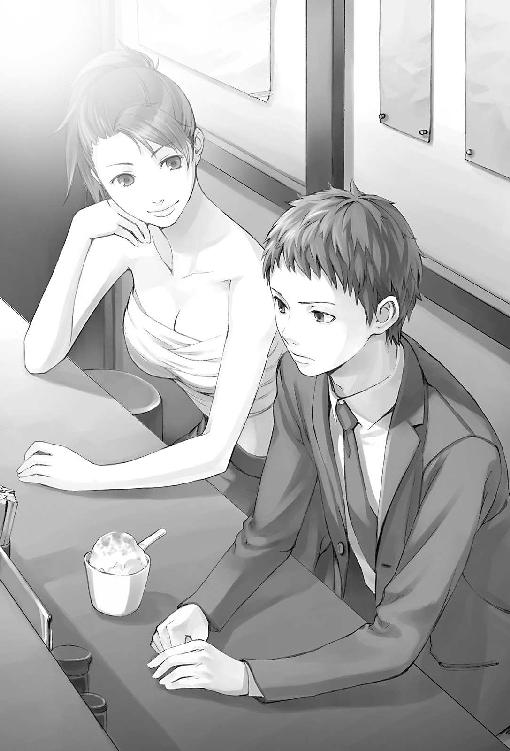
ミンさんは紙カップを二つ持って客席の方に回ってきて僕の隣に座った。おい、上半身そのままかよ。なんか着ろよ。僕はミンさんを見ないようにしてアイスに集中する。今回のアイスは表面にココアパウダーがまぶしてある。口に運ぶと、チーズの甘みと、かすかなオレンジリキュールの香り。これ、僕でも知ってる味だ。
「......ティラミス？」
「そう。たまにはメジャー路線。美味いだろ？」
僕はうなずく。ここのアイスはラーメンに比べてお世辞抜きで美味しいのである。たしか、tira mi suというのはイタリア語で『私を引っぱり上げて』という意味じゃなかったか。僕は落ち込んでいるのがそんなにはっきり顔に出るタイプだったのか。なんてことをつらつら考えていたら、つい口が滑った。
「こんなに美味しいアイスが作れるのに、なんでラーメン屋やってるんですか？」
......しまったァッ！
おそるおそるミンさんの顔をうかがうと、そこには極道の妻もかくやという凄絶な笑みが浮かんでいた。
「へえ？ ラーメン屋でアイス出しちゃいけないのか？ そんなこと言う口はこの口か？」
ミンさんはぐっと身を寄せてきて両手で僕の顔をつかんだ。
「ラーメンとアイスがどれだけすごい組み合わせかわかってないのか？ んん？ 腹の底からわからせてやろうか？」
あごを固定され、ミンさんの指が僕の唇をなでまわす。食われる、と一瞬本気で思った。
「いえ、大丈夫ですじゅうぶん知ってますからミンさんのおかげで」
「この店は親父がやってたの」二秒前の鬼相が嘘のように普段の顔に戻って僕を解放すると、ミンさんは言った。「わたしは冷菓専門店出したくて修業してたんだけど、親父がある日いきなり失踪しちゃって。それで、継いだの」
「はあ......」なんと言っていいかわからず、僕はへこっと頭を下げた。「ごめんなさい、変なこと訊いちゃって」
「謝ンな」とミンさんは笑う。
「ここ改築してアイスのお店にするとか......考えませんでした？」
「んん。考えたよ。でも、わたし、この店好きだったんだよね。集まる客とかさ、においとか。それはたぶんラーメン屋だから持ってるもので、改築したらなくなっちゃうよ。そう思って、守ることにしたの」
ミンさんは、暗い店内を見回す。油のしみたメニューの短冊。並べて貼り付けられた芸能人（たぶん）のサイン色紙。ひび割れたカウンター。古びてはいるけれどぴかぴかに磨き上げられた厨房の天井と壁。
「テツとかヒロとか無職どもがうちの裏を根城にしてんのもさ、まあ、他に行く場所がないんだろうし、いいかなって思う」
そう言ってミンさんは、エプロンに書かれた白い『はなまる』の文字をぽんぽんと叩く。アイス専門店の夢と引き替えにしてまでミンさんが守った、この店のシンボル。
「そう......ですか」
そうして僕はまたろくでもないことを考えて、口にしてしまう。
「でも、お父さんは、お店がいやになって消えちゃったのかもしれないですよね。ミンさんに継いでもらいたくなんてなかったのかも」
「そんなの知るかよ」
ミンさんは僕の肩をどやしつけて笑った。
「あっちがなに考えてるかなんてどうでもいいんだよ。わたしがやりたいからやってんの。それでいいだろ？ みんなそうやって押しつけ合って生きてるんだからさ」
僕はぼんやりとミンさんの顔を見つめた。
「どうせ他人の頭の中なんてわかんないんだから。自分と同じ人間だって思い込むしかないよ」
......ああ、そうか。
ようやく僕は気づく。彩夏が怒った理由。
僕と同じだ。僕だって彩夏がなんにも言わずに行ってしまったとき、哀しかったし、腹が立ったりもしたじゃないか。
だって、僕には彩夏しかいなかった。
僕に話しかけてくれたのは、彩夏だけだった。
なんでこんな、馬鹿みたいに単純なことに、ずっと気づかなかったんだろう。なんで今さら気づくんだろう。
長い沈黙があった。ふと気づくと、僕はミンさんの肩に額をくっつけてうなだれていた。肌の露出した肩に。あわてて頭を持ち上げる。
「あ、あのっ、ご、ごめんなさい」
ミンさんは笑って、優しく僕の頭をたたいた。大丈夫、気にすんな馬鹿。そういう笑い方だった。
大丈夫、なのかな。まだ、なにをしたらいいのか全然わからないけど。身体が安心してゆるんだのか、お腹がぐぅっと鳴った。ミンさんはそれを聞き逃さなかった。
「ラーメンの新作もあるけど、食べる？」
「え......えと......」
僕は口ごもってしまう。なにか察したのか、ミンさんは目を細めて、顔を近づけてきた。
「......あのさ。おまえってけっこう思ったことをすぐ口に出すタイプだと思うから、訊きたいんだけど」
「はあ」そんな風に思われてたのか。それたぶん独り言ですよ？
「......うちのラーメンて、どう？ 美味い？」
ミンさんの表情が切実になる。僕の両手に両手をかぶせてぐっと握りしめて、目を潤ませて下からのぞき込まれるように見つめられると、黙っているわけにはいかなくなる。
「えと」
「正直に答えて。殴ったりしないから」
「ちょっとスープが甘いかなー、と、思ったり思わなかったり」
「ちゃんと言って。美味いのか不味いのかどっち？」
「どっちかっていうと不味いですあいたっ殴らないって言ったじゃないですか！」
「うるせーばかーっ！」
僕は店から叩き出された。
「そのうちおまえも涙流して美味い美味い言うようなスープ作ってやるからな憶えてろ！」
子供みたいなせりふを僕に投げつけるとミンさんはがらがらと店のシャッターを下ろし始めた。やがて僕は、ビルの足下の暗がりに取り残される。
今さらなにができるんだろう。どうやって謝ればいいんだろう。簡単だよ、と彩夏がいつか言った言葉が頭の中で再生される。怒ったら普通に怒鳴って、嬉しかったら普通に笑って、ほしいものがあったら普通に言えばいいだけだよ。藤島くんにもできるよ。
それが簡単にできるなら僕はこんなところにいない、と思った。じゃあ、なにができるんだろう。ぐじぐじと考えながら、僕は肌寒い夜道を歩き出した。
二日も学校を休んだ。べつに病気でも怪我でもなかった。我ながら馬鹿だとは思うけど、準備ができるまで教室で彩夏と顔を合わせたくなかったのだ。
金曜日、授業が終わった頃を見計らって学校に行った。久々に放課後の屋上に出てみると、彩夏はいなかった。フェンス越しに校庭を見渡しても、花壇のところに彼女の影はない。
もう遅いのかもしれない、と思った。なにもかも、どうしようもなく失われてしまった後で、僕は滑稽に走り回っているだけなのかもしれない。それもしかたない。馬鹿だったから。
しばらく考えてから、もう一つ探してない場所に思い至った。
温室は校舎の裏、外壁の際にあった。塀のすぐ向こうはお墓なので、あんまり人の寄りつかない場所である。園芸部員になってから一ヶ月たっていたけど、温室には近づくのもはじめてだった。専門的な技術が必要なのです、といって彩夏が全部ひとりでやってしまうのだ。
ガラスが曇っていて中はぼんやりした緑しか見えないけれど、教室くらいの大きさはあるだろうか。
スティール製の立派なドアに手を伸ばしたら、中から開いた。
「......藤島くんっ？」
僕といきなり鉢合わせした彩夏は、素っ頓狂な声をあげた後、しばらく固まった。僕も同じだった。目の前に彩夏がいるということが、なんだかすぐには呑み込めなかった。
「あ、あの、中で薬撒いたから近づいちゃだめだよ」
先に我に返った彩夏は、両手でぐいぐいと僕の胸を押して温室から引き離した。
「なんでこんなとこ来るの」
彼女の声はまだ怒ってるように聞こえた。
「......いや、僕も園芸部だし」
「もうそんな無理しなくていいよ。無理に誘ったあたしが悪かった。お互い幽霊部員でいいでしょ？」
彩夏は目をそらして早口で言う。
「......だめだよ、そんなの」
消え入りそうな声で僕は言った。もう彩夏は僕のことを赦してくれないのかもしれない。そう思うと寒気がした。
「どうして。だって藤島くん──」
「せっかく作ったのが無駄になるから」
「──え？」
ポケットからビニルの包みを取り出すと、中の一枚を彩夏の手に押しつけた。彼女はそれを広げて目の高さに持ち上げる。黒い布の環──腕章だった。丸いシンボルマークがオレンジ色でプリントされている。《Ｃ》の中に《Ｇ》、その中に丸まった《Ｍ》。
彩夏はそれをしばらくじっと見てから、顔を上げて言った。
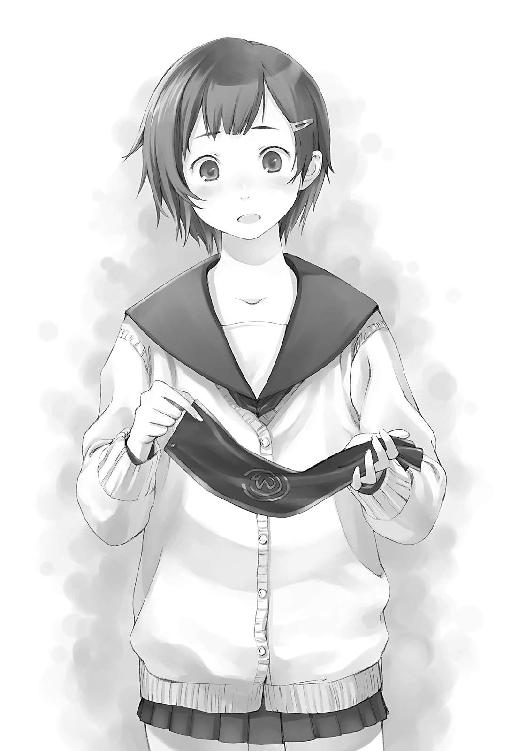
「......痴漢・撃退・マシーン？」
「やっぱ返せ」
「わあ、うそうそ、ごめん」
「内側から読むの。Ｍ高ガーデニング・クラブ」
「......あたしたち？」
僕が目をそらしてうなずくと、彩夏の表情が複雑に変化する。笑い出しそうな、泣き出しそうな。
「どうやって作ったの、これ？ え、あの、ひょっとしてこれ作るために二日も休んでたの？」
「うん。ＰＣで画像作って専門店に持ち込んだ」
彩夏はほうっと息をつくと、おそるおそる腕章を腕に通した。それから両腕を真横に広げてみせる。こわばっていた表情が、とけていく。
「......藤島くんの分もあるの？」と彩夏は僕の手の中のビニル包みを見て訊いてくる。
「うん。最低十枚からだったから」
色々謝る言葉を考えていた僕の頭は、真っ白になってしまっていた。
「藤島くんがここまで喋るの不器用だとは思わなかったよ」
今度こそ彼女ははっきりと笑う。僕はもう死ぬほど恥ずかしくなってうつむいた。
「でもこれ、すっごい嬉しい」
彩夏はそう言ってくれた。僕はなんとか顔を上げて、ぎこちなく笑い返して、「うん。......ごめん」と消え入りそうな声で言った。それが、そのときの僕の精一杯だった。
「ね、もっと大きいの作ろうよ。旗とか。それで、体育祭の部活対抗リレーで使うの」
だれが走るんだ。二人しかいないのに。
「あ、そうか。じゃあホームページ作ろう。このマークがうぃーんて浮かび上がってくるの。藤島くんそういうの得意でしょ？」
なに載せるんだよ。でも僕がなにか言い返す前に、彩夏は「屋上の鍵借りてくるね！」と言って走って行ってしまう。
その背中を見送りながら、今はこれでもいいのかな、と思った。
たしかに僕はどうしようもなく不器用かもしれないけど、それでも、できることを少しずつ、少しずつやっていけばいい。
でもそれはけっきょくのところ、遅すぎたのだ。僕の知らないところで、僕のささやかな世界は静かに、確実に蝕まれていた。その日の夕刊の片隅に、区内の病院に入院していた若い男性患者が薬物中毒で死亡したという記事が載せられていた。
僕の十六歳の冬をぼろぼろにした『エンジェル・フィックス』事件の、それが最初の死者だった。
３
冬休みの間も、僕はちょくちょく『ラーメンはなまる』に顔を出すことになった。行けばだいたい彩夏がいるから。家に閉じこもっていてもしょうがない。
最初のうち、彩夏は僕が店に顔を見せるたびに驚いていた。
「藤島くんが用もないのに家から出るなんて」
僕は一体なんだと思われてるんだろう。
冬の『はなまる』はいつもひまそうだった。日中は客がほとんど来ない。まだ松の内だったし、それでなくてもこの店はラーメン屋ではなくアイス屋だと思われているふしがあるのだ。
その日は僕とヒロさんと彩夏とで、ミンさん謹製の巨大な鏡餅アイスをつついていた。ラーメンの試食でしょっぱくなってしまった舌に、求肥とヴァニラアイスの甘みが心地よい。ミンさんのスープもだいぶ向上してはいるんだけど、連続はつらい。
「あのあと、トシから連絡あった？」
ヒロさんの問いに、彩夏はスプーンをくわえて眉をひそめ首を振る。
「けっきょくお正月も帰ってこなかったの」
彩夏はトシさんがドラッグにはまっていることを知っているのだろうか。年末年始にかけてこの街で起きたいくつかの暴力事件は、加害者を捕まえてみると喋ることが支離滅裂、半日くらい後に拘置所で禁断症状にのたうち回る、というものだった。僕は朝晩のニュースの時間、テレビ画面に篠崎俊夫の名前を探すようになってしまった。
「たぶん、まだ墓見坂さんのとこにいると思うんだけど」と彩夏は言う。
「その人って、トシの彼女？」
「ちがうちがう。男だよ。大学生だったか大学院生だって」
お兄ちゃんに彼女なんているはずないよ、と彩夏はいつになく真剣そうな顔で言う。断言されるトシさんはかわいそうだったけど僕も賛成だった。でもヒロさんはちがう意見。
「そうかな。ああいう、なよっとしたのはヒモに向いてるんだよ。今ごろ女のアパートに転がり込んでても、おれは驚かない。つうかその方が安心だな」
「安心だけど......でも、お兄ちゃんには無理だよ。ご飯も作れないし洗濯もできないし」
「いやいや。ヒモってのは掃除も洗濯もしないよ」
「そうなの？」
「たまに誤解されるんだけどね。家事なんてやったら主夫じゃないか。それじゃヒモとは呼べない。ヒモってのは、女の子に『ああ、この人はわたしがいないとだめなんだ！』と思わせなきゃいけないんだよ。だから家事も全部女の子にやってもらうの」
最低だこの人。
「うわあ。あたしには無理だなあ。絶対、申し訳なくなって家事やっちゃうよ。晩ご飯作って帰りを待ったりしちゃう」
「そうだね。ヒモってのはだから、母性本能をくすぐるのが仕事なんだよ。普通の人にはできない」
「すごいねヒロさん」
すごくねえよ、なに自慢げに言ってるんだよ駄目人間の極みじゃねえか！ と僕は思うが、二対一では突っ込むのも疲れるだけなので、黙って鏡餅アイスに集中する。
「結婚しちゃったら？ とか、思わないの？」
「思わないね」
「どうして？」
「実はおれ、心に決めた人がいるの。だから他の女とは結婚できない」
「でも同棲はオッケーなんだ。女の人に悪いとか思わない？」
「思うけどやめられないね、自分の生き様だから」
「いっぺん死ね」
「だめだよ藤島くん思ってることがせりふで出ちゃってるよ！」
あ、ほんとだ。まあいいや。
「墓見坂と言ってませんでしたか？」
僕の背中からいきなり声がする。振り向くと、ロシア兵のような四角い毛皮の帽子と、むっくりと着膨れたトレンチコート。少佐だと気づくのに少し時間がかかった。ゴーグル型サングラスは目に食い込んで顔に同化しているように見える。
「あ、向井さんだ。お久しぶり、あけおめ！ なんか注文ある？」
「任務中だ」
「ニンニク中華？」
「う......じゃあそれで」
なぜか少佐は流されて注文してしまう。というかニンニク中華ってなんだ。
どうも少佐は彩夏が苦手みたいだった。少佐をちゃんと名前で呼ぶのは、僕が知る限り彩夏だけだ。向井さん、というのを聞くたびに、だれそれ？ と思ってしまう。
「ようやく仕事だ。ミンさん、冷やし中華のニンニク山盛りで！」
彩夏は立ち上がって厨房に駆け込む。この季節に冷やし中華かよ。少佐は生きたヒキガエルを丸呑みしたときみたいな顔をしてから、彩夏の座っていたドラム缶に腰を下ろす。
「少佐、墓なんとかって人知ってるの？」とヒロさんが訊ねる。
「うちの大学の院に、墓見坂っていうやつがいるらしいんですが」
僕とヒロさんははっとして顔を見合わせる。ヒロさんは少佐の方に身を乗り出して言った。
「トシと最近つるんでるやつが、そういう名前らしいんだけど」
少佐はあごに手を当てて少し考え込む。
「知り合い？ なら訊いてみてよ」
「いや。名前知ってるだけです。有名人なんですよ、研究室に全然顔を出さないのに博士論文が通ったとかで。でも名字同じだけかもしれませんよ。なんでトシがそんなやつと」
「そのへんに転がってるような名前じゃないだろ墓なんとかなんて。頼むよ。トシ、あれから全然連絡ないんだって」
「いやしかしねえ......今日行って来たばかりだというのに、また大学に顔を出せというんですか。学生や教授がうじゃうじゃいるんですよあそこは」
そりゃ当たり前だ。というか少佐、大学生だったのか。ちょっとショック。
「たまに顔を出すと教授どもがうるさいのですよ」
「さっさと中退すりゃいいのに」
「なに言ってるんです。なるべく長く在学するために、単位をぎりぎりだけ取って、あとはほとんど講義に出ないで、進級したり卒業したりしないように戦線保持してるんです。きっかり八年在学してからやめますよ」
「......卒業しないんですか？」と僕はうかつにも訊いてしまった。
「大学をきちんと卒業するような輩にニートがつとまるかッ！ ニートの二文字目のＥをなんだと心得てるんだ貴様はッ！」そんなことで威張られても困る。
「少佐はね、調べものすんのに便利だから大学生やってんだって」
「歴史書も軍事資料も高いんですよ。大学図書館に買わせるのが最良。中退するまで陳情しまくっていずれ一室を自分しか読まない書籍で埋め尽くし少佐ルームと名付けます」
自分で買えよ。迷惑な学生だなあ。
「それで、ふふ、聞いてください、今回入った資料で戦艦武蔵のね」
「つーか少佐、アリスになんか頼まれて大学行ったんじゃなかったっけ」
「ああそうだ。忘れてました」
少佐はバックパックを開いてひっくり返すと、真ん中のテーブル代わりの木箱にざばざばと書類を広げる。
「コピー見ます？ いやそれ上下逆です」
「見てもわからない」
「自分もわからんですがね」
僕はヒロさんの手元の紙をのぞきこんだ。カラー印刷で、先端に真紅の花をつけた背の高い植物の写真が載っていて、その周囲をびっしりと細かい文字が埋め尽くしている。
「今、街で騒いでる薬あるだろ。四代目に頼まれてアリスが調べてんの。そうとうヤバいらしいよ。まさかトシがやってんのもこれじゃないだろうな......」
僕ははっとして、クリスマス色の街の輝きにかざされた、薄桃色の小さな錠剤を思い出す。天使の羽の刻印と、二文字のイニシャル。トシさんが食っていた、『止まって見える』ドラッグ。名前は。名前は、なんといったっけ？ 思い出せない。喉元まで出かかっているのに。
「あの、それ」
「向井さん、おまちどおさま」
僕の声を遮って彩夏が冷やし中華を運んできた。僕は言葉を呑み込む。この話は彩夏に聞かれたくなかった。ヒロさんは「ん？」と首を傾げる。僕はぶんぶん手を振ってみせた。
「なんですか、それ」彩夏が資料をのぞき込もうとしたので、とっさに僕はそれをヒロさんの手から引ったくって裏返していた。
「もー、なんで隠すの藤島くん」
「なんでもない、なんでも」
そのとき、ようやくその日はじめての客がラーメン屋の入り口に現れたので、彩夏はエプロンをひるがえして行ってしまった。僕はほっと息をつく。
「なんだよ、どうしたのナルミ君」
僕が口を開きかけたとき、いきなり大音響の『コロラド・ブルドッグ』が鳴り渡った。少佐の小柄な身体は一メートルくらい跳び上がる。ヒロさんもあわてて携帯を取り出すけど、少佐が一歩早かった。
『来ているのはわかっているんだ、油を売ってないでさっさと持ってきたまえこっちにも火急の用があるんだ！ ヒロはすぐ車を回してきたまえ、大至急だ！』
電話の向こうのアリスの声が僕にもはっきりと聞こえた。少佐の耳に刺さりそうなくらいとげがある。少佐がなにか言い返そうとしたら通話が切れたらしい。
「今日も機嫌悪いのかな、アリス」と、ヒロさんは背後のオンボロビルを見上げる。
「知らないんですか。アリスは二十九日周期で五日間ずつ、非常に精神的に不安定になるんですよ。綿密な調査の結果ですから間違いありません。原因はまだ究明できてませんが」
そりゃ生理だ。でも手帳を取りだしてカレンダーのページを得意げにヒロさんに見せている少佐の顔を見てると、突っ込めない。
「いいから早く持っていきなよ」
「だから二十九日周期で今日はその二日目」
「おれ車持ってくる。なんの用だろうな」
ヒロさんは行ってしまった。取り残された少佐は黙り込む。僕は首を傾げる。そんなにアリスが怖いのだろうか。というか機嫌悪いのなんていつもじゃないの？ なんてことを口にしたら、ゴーグルの向こうからすげー目でにらまれた。
やがて、少佐が厳かに口を開く。
「貴様は小沢治三郎中将を知っているか。大日本帝国海軍の最後の連合艦隊司令長官だ」
「知るわけないです」
「レイテ沖海戦も知らんのか。世界最大の海戦だぞ。小沢中将の機動部隊は囮として果敢に先行し、米海軍ハルゼー大将の注意を主力・栗田艦隊から引き離すことに成功した」
「はあ」
「というわけでよろしく頼む藤島中将」だれが中将だ。「靖国で逢おう」
「いやですよ！」
でもけっきょく僕は少佐と一緒にアリスの部屋に行くことになった。アリスは自室のベッドの上で毛布にくるまって、半泣きになっていた。
「モッガディートの耳が取れてしまったんだ」
ベッドの前には、巨大な茶色いクマのぬいぐるみが置いてあった。どう控えめに見てもアリスより大きい。アリスがちっちゃいだけなのかもしれないけど。彼女の言う通り、クマのモッガディートくんの右耳は糸がほつれてもげかかっていた。広がった縫い目の間から中の詰め物が見えている。
「そうっとだぞ！ そうっと箱に入れてくれたまえ！ 緩衝材もちゃんと詰めて！ ナルミ、傷口に触るな広がったらどうするんだ！」
きんきん泣き叫ぶアリスの指示のもと、僕と少佐は手負いのぬいぐるみを大きな段ボール箱に納め、隙間に丸めたタオルを大量に詰め込んだ。ものすごくかさばる梱包だ。たしかに一人で運ぶのはつらい。
「じゃあ、四代目のとこに持って行けばいいんだな」と少佐。
「必ず今夜中と頼んでおいてくれたまえ、ぼくの命がかかってるんだ！」
涙目でアリスは言う。なぜに四代目？ 命？ 僕の頭の中で大量の疑問が渦を巻いたけど、なんだか口を挟める雰囲気ではなかった。
「それで、頼まれてた資料」
アリスは少佐の手からクリアファイルを引ったくると、パラパラ漫画でも見るみたいにしてものすごい速さで中身を読み、コピー一部だけ抜き出して僕に投げつけた。
「なにをぼさっとしているんだ、ついでに四代目に届けろと言われなきゃわからないのかい！」
僕らは逃げるようにして、ぬいぐるみを入れた段ボール箱をアリスの部屋から運び出した。
ヒロさんの車は深いブルーの高級そうな外国車だった。とてもじゃないけど十九歳が持ってていい車には見えない。
「車持ってんの、おれだけだからね。自分で買ったわけじゃないけど」
彼女のプレゼントだという。しかも三つ前の彼女だって。いつか女に刺されるんじゃないだろうか、この人。
「でも、車で行くのは自殺行為じゃないかな......」と僕はきらびやかな夜の光に染まった線路の向こう側を見やる。南口前に集まる大動脈のごとき三本の通りは、渋滞していないときなど見たこともない。
「だからって、これを歩きで運ぶのも自殺行為だろ」
ぬいぐるみの入った段ボール箱を見下ろす。ヒロさんの言う通りだった。バイクの後ろに縛り付けて運ぶという手もなくはないけど、少佐は大学に戻ると言って、原付に乗って行ってしまった。墓見坂という人のことを調べるらしい。
僕らは車の後部座席にその箱を押し込み、シートベルトでうまく固定してから運転席と助手席に乗り込んだ。
「なんなんですか、あのぬいぐるみ」
「あれがないと眠れないんだって、アリス」
「はあ」あれだけ大騒ぎして、そんなオチかよ。「でも、どうして四代目に」
「あー。四代目、ああ見えても手芸が趣味なの。前もこのクマ直してもらったんだよ。プロなみの腕なんだよね、おれもいっぺん作業中を見たことあるけど」
「な」
車は音もなく滑り出した。夜景が光の川になる。
「何者ですかあの人は」
「平坂組って知ってる？」
聞き憶えのある名前だった。学校でもたまに話題にのぼる。
「暴走族でしたっけ」
「違う違う。走ってないよ。ただこのへんの喧嘩っ早いのとか騒ぐのが好きな子供が大勢集まってやくざ気取ってるチーム。四代目はそれの頭なんだ」
ヒロさんはなんでもなさそうに言うけど、平坂組といえば引っ越してきたばかりの僕でも知ってるくらいだから、けっこうなビッグネームじゃなかったっけ。
「四代目の頭だから四代目って呼ばれてたんですね」
「いや、平坂組は初代だよ。あいつが作ったの。あいつ以外にあんな連中全員締められるやついないよ」
「え、じゃあなんで四代目なんですか？」
「それはね、関西の方に実家があって、逃げてきたらしいんだけど、そっちの四代目なんだってさ。そっちは本職のヤのつくお仕事」
うわあ。マジかよ。そのまんま四代目やってろよ。
「四代目って呼ばれると、そりゃもう怒るんだよ。で、アリスが面白がって四代目四代目って呼んでたら、おれらの間ではそれで定着しちゃった」
「ひでぇ......」
そうつぶやくと、ヒロさんはステアリングを手のひらでぱんぱん叩いて笑う。
「そうだね。ひどいやつだよ。でも、だれも勝てないんだよなあ。四代目も、おれらも。わかるだろ？」
僕は、あの日本人形みたいな白い肌と大粒の瞳と黒蜜の髪を思い出す。ヒロさんの言うことはわかった。僕だって勝てる気がしない。
「でもこれ他のメンバーに言っちゃだめだよ。四代目に殺される。平坂組はあれだ、自称・任侠団体だから。硬派なの。だから薬とか絶対に許さないわけ」
それで僕は思い出す。
「あの、ヒロさん、そのヤバい薬の名前知ってますか」
「ううん......いや、忘れた。そこの資料に書いてない？」
四代目に届けるための資料の束を探ってみた。小難しい化学式と物質名だけで頭がくらくらしそうだった。常同行為、興奮、過覚醒、不眠、食欲不振、血圧上昇、色覚鋭敏化、聴覚鋭敏化、散瞳......一目で危険な薬だとわかる薬効がずらずら並んでいるけれど、肝心のその薬の通称が載っていない。
取り越し苦労だったらいいんだけど、と僕は思う。
平坂組の事務所（？）は、駅前センター街の左手の坂を少し上って脇道に潜り込んだところの小汚いビルに入っていた。
僕らは地下駐車場に停めた車から箱をおろすと、喘息持ちの老人みたいな不気味な音をたてる狭いエレベーターでそれを四階まで運んだ。出てすぐのところに待ちかまえていた金属扉の脇には、いかめしい毛筆調の行書体で『平坂組』と書かれた縦長の板。黒丸の中に揚羽蝶柄の家紋までついてる。いや、家紋じゃなくて代紋というのか。僕は真剣にびびる。なんだこれは。ひょっとしてマジモンじゃないのか。でもヒロさんは呼び鈴も押さずにドアを開けた。
中は学校の教室より一回り小さいくらい。壁際に並んだロッカーや部屋の真ん中に向かい合ったソファや奥に構えたデスクのせいでさらに狭く見える。座っていた四、五人の黒Ｔシャツの男たちが一斉に立ち上がった。
「叔父貴、お疲れさんス！」
「お疲れさんス！」
そろってヒロさんに一礼する。僕は思わず後ずさって、運んでいた箱を落としそうになってしまった。なんですかこのノリは。叔父貴？
黒Ｔシャツはみんな若かった。高校卒業してるかしてないか、くらい。サロン焼けしたのとか髪を染めたのとかピアスを入れたのとか、夜のセンター街をよくうろついている普通の若者。普通じゃないのはＴシャツの胸に入ってる揚羽蝶の代紋だけだ。
「いやあの、いつも言ってるけど叔父貴はやめてくれ」とヒロさん。
「でも壮さんと叔父貴は兄弟みたいなもんでしょう。荷物お持ちします」
そう言って箱を床に下ろしてくれたのは、いつかのボディガードの岩男。
「うーんまあ、おれも色んな娘とつきあってたからそういう意味の兄弟なら」どういう意味の兄弟ですか？
「ヒロてめえ殺されたいのか」
右奥の扉が開いて出てきたのが四代目だった。その日は淡い紫の袖無しシャツ。左肩には代紋の入れ墨。
「報告書じゃなかったのかよ。なんだそのでかい箱は。まさかそれいっぱいに入ってんじゃねえだろな」と四代目はデスクの椅子に腰を下ろしてけだるそうに言う。ヒロさんは首を振って、床に下ろした箱のガムテープをはがした。
「いやいや。アリスから頼まれごとでさ、ぬいぐるみの耳が取れちゃったから直し」
聞くなり、四代目の身体が文字通り跳び上がった。デスクを越えて僕のすぐ目の前にだん、と着地すると、開きかけていた箱のふたを押さえてものすごい形相でヒロさんをにらむ。
「わかったからこんなとこで喋んじゃねえ！」
「壮さん、なんスかその箱」と、取り巻きの一人が寄ってくる。
「なんでもねえ！ 俺の車に運んどいてくれ、中身見るなよ絶対だぞ見たら記憶が消えるまで殴るからな！」
台風みたいな剣幕でまくしたてると、車のキーをその男の人に投げ渡す。「押忍、男磨かせてもらいます！」と、男はキャッチして一礼。段ボール箱を運ぶとどういう理屈で男が磨けるんだろう。
「姐さんからの預かり物だ丁重に扱えよ」「押忍ッ」
姐さんてアリスのことか。変な映画の見すぎじゃなかろうか。箱は黒Ｔシャツ二人の手によって事務所から運び出される。なんかすげー無駄な労働しませんでしたか僕ら？ とヒロさんを見上げると、にやにや笑っている。ああ、四代目に嫌がらせするためにわざわざここまで運んだのか......。僕には喋るなとか言っておいて、からかう気満々だったのだ。
「今夜中だってさ」
「わかってるよ。終わったら俺が届ける」
組長ともあろうお方が、ひきこもりのパジャマ娘のために夜なべで針仕事するのである。謎だ。いったいどうなってるんだろう。みんな知ったら驚くだろうなあ、と僕は構成員の方々を見回した。
「おまえも知ってんのか。ヒロが喋ったか？」
四代目が僕の胸ぐらをつかむ。
「し、知ってるってなんですか」
「だから。アレだよアレ」ここで僕の中の変なスイッチが入る。
「えと。アレって言われても」「アレだよ知ってんだろ？ 俺の、アレ」「いや、あの、アレってのがなんなのか言ってくれないとわからないです」「とぼけてんじゃねえ！ 俺の口から言えるか馬鹿」「えーと、じゃあ、よくわからないけど僕の口から心当たりを言ってもいいですか」「殺すぞ」「ナルミ君、楽しいのはわかるけどそのへんにしとけよ四代目がかわいそうだよ」「かわいそう言うんじゃねえ！」「んで、これが報告書」
なにごともなかったかのようにクールに、ヒロさんはクリアファイルを差し出す。四代目は僕を床に投げ捨てて、ファイルを引ったくった。「おい、病院のファイル持ってこい」と言いつけると、黒Ｔシャツの一人が奥の部屋に引っ込み、しばらくして水色のファイルを手に戻ってくる。
デスクの向こうに回り、二つのファイルを並べて四代目は真剣な表情になる。ヒロさんがそれをのぞき込んで訊いた。
「なにそれ」
「ここ一ヶ月でこのへんの病院に薬でぶち込まれたやつの病状、手当たり次第調べた」
「根性あるなあ......ああ、それで照合すれば」
「そう。......ん、こいつは......」四代目の指が、資料に書かれた薬効の上をたどり、それから水色のファイルのページをさす。「......当たりかな。ＭＤＭＡにしちゃ長いし、覚醒剤なら直で飲まねえし。若いし」
「フィックスですか？」
ボディガード岩男が横からファイルをのぞいて言った。
「訊いてみなきゃわからない。Ｎ病院だ。行くぞ」
四代目の一言で、座っていた黒Ｔシャツもみんな立ち上がって上着を羽織る。部屋の空気がいきなり全部入れ替わったような気がした。
......フィックス？
僕の中でそのときようやく記憶が立ち上がる。天使の羽の下に刻まれていたのは、Ａ．Ｆ．だった。トシさんは言っていた、エンジェルは差別しないって。
「......エンジェル・フィックス？」
僕のつぶやきに、四代目がものすごい形相で振り向いた。腰が砕けそうになる。
「なんでおまえがそれ知ってんだ」
「え......あ、あの......」
四代目に襟首をつかまれながら、僕はトシさんとピンク色の錠剤のことを話した。
「トシって、あのトシのことか」
四代目の問いに、僕のかわりにヒロさんが青い顔で答える。
「その日、おれも一緒にいたんだよトシと......あいつ......」
「おい、トシが持ってたのは錠剤なんだな。丸のまま、たしかだな？」
僕は四代目に襟首をぎりぎりと締め上げられながら必死にうなずいた。ヒロさんが四代目の腕をつかんでほどこうとする。
「やめろよ殺す気か。錠剤がどうしたんだよ」
四代目は僕をソファに投げ捨てる。僕は床に手をついてむせた。降ってくる四代目の声。
「前に言わなかったか。フィックスは捌け方が特殊なんだよ。ルートがないも同然、買ったやつが割ったり粉にしたりして知り合いに転売する。儲ける気がまるでないみたいに胴元が全然浮かんでこない。一つたしかなのは、錠剤を丸のままで何個も持ってるってことは」
そこで四代目は言葉を切って、ちらと僕を見た。
「直で買ったやつか売人か、どっちかだ」
メンバーが持ってきた白のハーフコートを羽織り、四代目は携帯で矢継ぎ早に指示を出す。病院に向かうのと、トシさんを捜すのと。四代目と留守番一人を残して、組員たちはあわただしく事務所を出ていく。
「帰ろう、ナルミ君」
ヒロさんが僕のジャンパーの袖を引っぱった。ぼうっと突っ立っていた僕は、我に返る。
「あの、トシさん......捜さないんですか」
「おれ居場所知らないし」
「でも」
僕が、もっと早く気づいてれば。
「なにやってんだ。さっさと帰れよ邪魔だ」
四代目が毒づいたので、ヒロさんは僕の腕を引っぱって出口に向かおうとする。でも僕の足は動かなかった。なにか僕にもできることがあるんじゃないだろうか。トシさんのことなんてなにも知らないけど、姿を消す直前に言葉を交わした最後の人間は僕だ。なにか。
「なんもねえよ。いいから消えろ。もうこの薬で人が死んでんだぞ」
四代目がざくりと答える。
「でも......」
僕のせいだ。あのとき、ちゃんと捕まえておけば。もっと早く、薬の名前を思い出して、だれかに相談していれば。
「ナルミ君」
ヒロさんが後ろから口をはさもうとしたが、四代目が腕を持ち上げてそれを制した。噛み殺されそうな気がした。僕は口ごもって足下に視線を落とす。組員たちの足音がドアからすっかり流れ出してしまうと、僕はそっと顔を上げた。
四代目はソファをはさんだ向こう側に立っていた。なのに、次の瞬間は僕のすぐ目の前に狼の眼があって、腹に鈍い衝撃が突き込まれ、僕は身を二つに折って口から涎を垂らしていた。四代目は僕にボディブローした腕でそのまま僕を支えるとソファに乱暴に転がした。
「これがナイフだったらおまえはあの世行きだ。いきがってんじゃねえガキ。おまえみたいな一般人が首突っ込んで怪我でもしたらこっちが迷惑なんだよ。消えろ」
四代目も出ていってしまった後で、僕はヒロさんの肩を借りてなんとか立ち上がる。
ラーメン屋に戻った頃にはすでに日はすっかり暮れていて、手で触れそうなほど硬い冷気がビルの間にわだかまっていた。明かりに照らされた『ラーメンはなまる』ののれんの周囲だけがかすかに和らいでいる。僕はその光芒にしばらく見入ってしまった。
店の勝手口に回ると、古タイヤの席にテツ先輩の半袖シャツの背中があった。丼を抱えたまま先輩は振り向く。しばらく、暗がりに麺をすすりこむ音だけが響いていた。
「ヒロは？」
「今、車置きに行ってます」
僕は古タイヤに腰を下ろした。次の言葉はなかった。先輩は塩ラーメンをスープまで平らげると、背中からくしゃくしゃになったパチスロ情報誌を取り出して開く。
トシさんのこと聞いてないのか。それとも知ってるけど全然気にしてないのかな。もしかして、大した接点もないのにうろたえている僕の方が馬鹿なんだろうか。
「なんだよ？」
僕の視線が気になったのか、テツ先輩は雑誌から顔を上げた。
「あの、トシさんのこと、聞きましたか」
「四代目からさっき電話あった。馬鹿だなトシは」
「昔、ここの仲間......だったんですよね」
「今でもそうだよ。顔出せば」と言ってテツ先輩は笑う。
じゃあ、心配じゃないんですか？
先輩の顔から笑みが消える。僕の思っていることを察したみたいだった。
「あのさ、あいつが助けてくれって言ってきたわけじゃないだろ。どこにいるかもわかんないんだし、ほっとくしかないだろ」
それはそうなんだけど。
でも、と僕は思う。もし、助けを呼べないほどにひどい状況だったとしたら？ 声にならないその声を、だれが聞き取ってあげればいいんだろう。少なくとも、僕にはできない。僕にできることはなにもない。
「俺の眼は７を三つそろえるためにあるの。馬鹿なヤク中のガキを捜すのは四代目の仕事」
そう言って先輩はパチスロ誌に目を戻した。
この人、ほんとに元ボクサーなんだろうか......。
僕はふと思いついて立ち上がるとテツ先輩に近寄った。先輩が雑誌から顔を上げるのとほとんど同時に、その腹に向かって拳を突き出す。ぱちん、と間抜けな音がした。僕の拳はテツ先輩の大きな左手の中に収まっていた。
「なにしやがる」
怒ってる風でもない口調でテツ先輩は言う。僕は首を振って、地べたにしゃがみ込んだ。
「......テツ先輩。ボクシング教えてください」
「なんだよ急に」
「いや、なんとなく」
自分が弱いのもガキなのも知っていたはずだった。でも腹の底にあらためて突っ込まれると、やっぱりこたえる。しょうがない。現実として僕にできることなんてなにもないのだ。
そうだ、さすがにトシさんのことを彩夏に話しておくべきだろうか。でも、なんて切り出せばいいんだろう。そう思いながら厨房も店の外も捜してみたけど、彼女の姿はなかった。客はけっこう入っているのに。
「ミンさん、彩夏はどうしたんですか？」
勝手口から頭を突っ込んで訊ねると、ミンさんは強火の中華鍋から目をそらさずに答えた。
「さっき早退したぞ。すっごい具合悪そうだった。なんかあったのか」
早退？
僕はテツ先輩の顔を見る。
「俺が来たとき、もういなかった」
トシさんの薬のことを聞いた──わけじゃないのか。じゃあ、どうしたんだろう。残りの鏡餅アイスをひとりで食べて腹でもこわしたんだろうか。
僕はドラム缶に背中をくっつけて地面にうずくまった。道を間違えたのに気づいて引き返すたびに、また別の袋小路にはまる。そんなことを延々と繰り返しているような気分になってきた。
うなだれていた僕のポケットで携帯が震える。
『四代目から聞いた。こんな重要なことを忘れていたきみの愚昧さを追求するのは後回しにしよう。彩夏はどうしたんだ、携帯もつながらない』
アリスの声も、心なしか冷たく聞こえる。
「......なんか、具合悪くて早退したって」
『早退？ まいったな。トシにつながる唯一のラインなんだが。明日から三学期だろう、学校で見かけたら即刻ぼくに電話するように言っておいてくれたまえ。あの兄妹がまだ連絡を取り合っているとも思えないが......』
そこで僕は、あの夜、トシさんから彩夏の携帯にかかってきた通話を思い出す。墓見坂という人の携帯を借りたと言っていた。
『どうしてそれをもっと早く言わないんだ！ まったくきみの魯鈍さにはあきれるばかりだ、たとえるものも思いつかないよ。鍾乳石が育つ速度だってきみの頭の回転に比べればまだ俊敏だろうに』
すげえ言われようだった。僕は縮こまる。
『その電話は何時頃だった？ なるべく正確に思い出してくれたまえ』
「七時前......くらい、だったかな。なんで時間なんか」
『通話記録を調べれば相手がわかるだろう。トシの電話はずっと不通だが、その墓見坂なる人物の連絡先がわかれば前進だ』
通話記録を調べる？ どうやって？
「非通知だったって言ってたよ」
『それがどうしたんだ。彩夏の携帯に通知されていないだけだろう。局には通話記録が残ってるじゃないか』
いや、それどうやって調べるんだ。犯罪じゃないの？
『きみはニート探偵を見くびっているのかい？』
アリスは通話を切った。
僕は冷たくなった自分の携帯を、しばらくじっと見つめていた。そういえばあいつはハッカーだみたいなことを言っていたっけ。そりゃ僕のプロフィールを調べるくらいは、ちょっとネットに詳しければドクターペッパー片手に鼻歌混じりでできるだろうけど、電話局の記録は無理だろ、と思う。
僕が心配してもしかたのないことだった。僕にできるのは、彩夏にトシさんのことを伝えることだけだ。せめてそれくらいは、僕の役目だろう。でも、なんて言えばいいのだろう。お兄さんはヤク中だから近づくな、とでも？
わからなかった。うまく話せる自信もなかった。
始業式の日、彩夏は学校を休んでいた。よっぽどひどい風邪でも引いたのだろうか、と心配になって彩夏の携帯にかけてみたけれど、出なかった。僕はしかたなく、花壇と屋上の鉢植えの世話をひとりでした。温室は放置。
次の日も彩夏は来なかった。ラーメン屋に行ってみても、いない。
「無断欠勤するようなやつじゃないんだけどな」と、ミンさんは眉を寄せ、給仕に丼洗いに、と忙殺されていた。僕も洗い物をちょこっと手伝う羽目になった。
彼女がようやく学校に姿を見せたのは、新学期が始まって五日目の金曜日だった。放課後すぐに屋上に行ってみると、そこに懐かしい後ろ姿があった。左腕には黒い腕章。鉢植えに水をやっている。振り向いた彩夏の顔を見た僕はぎょっとした。以前となにも変わっていないはずなのに、一瞬だけなんだか別人の顔に見えたから。
「ごめんね、勝手にいっぱい休んじゃって」
「風邪？」
「うん。まあ、そんなとこ」
笑い顔に力がなかった。無理につくってるのが僕にもわかる。
「あたしのいない間もちゃんと部活やってたんだね」
「部員だからね」
「ありがと、藤島くん」彩夏は切ないくらい透き通った笑顔を見せる。「でも腕章つけてくれるともっと嬉しいかな」
「いや、あれは恥ずかしいから、わ、やめろ」
彩夏は自分の腕章を外して僕に襲いかかると、強引に僕の左手に通してしまった。
「今日一日、外しちゃだめ。部長命令です」
その日の彩夏はほんとに楽しそうだった。剪定のしかた、種選び、肥料の種類、花言葉、とても憶えきれないほどのことを教えてくれた。その様子を見て僕は、「なにかあったの？」という言葉を何度も、何度も、何度も呑み込んだ。トシさんのことを言おうと思ったけれど、最初の言葉がついに見つからずじまいだった。
やがて日没がやってきた。向こう側の校舎の時計は四時四十五分を指していた。僕らはフェンスの際に並んで座り、茜空を眺めた。
「藤島くんて兄弟いるっけ？」
ぽつりと彩夏が問う。
「姉が一人」
「へえ。仲いいの？」
「あんまり。最近は毎日帰りが遅いからよく怒られる。でも飯をちゃんと作ってくれるくらいには仲がいいかな」
「あれ、お姉さんがご飯作ってるの？ 親は？」
「父親は一年に五日間くらいしか家にいないし母親はもうこの世にいない」
「あー......ごめん」
「母親のこと訊かれてもう死んでるって答えると、なぜかみんな謝るんだけどさ」と僕は言った。「なんでだろう。べつに僕は怒ったりしないのに。それともこういうところで怒るのが普通なのかな」
「うー......ん？」彩夏は視線を宙にさまよわせる。「無理に怒ることはないと思う」
「そうかな。なにが普通なのかよくわからない」
「藤島くんは、そんなに自分を欠陥品みたいに思うことないよ」
「そっちが最初に欠陥品だみたいなことを言ったんじゃなかったっけ」
彩夏は乾いた笑い声をあげる。
「あれはさ。あたしの嘘なの。あたしもね、喋るの不器用だから。ほんとは藤島くんと話したかっただけ」
頬に彩夏の視線を感じた。僕は頭を動かせなくなってしまった。
「中学は全然行ってなくてさ。家で勉強してたの。この学校に入って、最初からやり直そうって思って、なんとか、なんとかね......。五月くらいまでは、昼休みも放課後も毎日、屋上で過ごしてたんだけど。だましだまし、みんなと喋って、なるべく屋上には来ないようにして。でもほんとは、心の中ではずっとひとりで、土いじりしてるときがいちばん安心して、でも」
彩夏は夕空を見上げた。
「ある日、どうしてもつらくなって、屋上に来たら、藤島くんがいた」
いつのことだろう、と僕は思う。僕が意識するよりもずっと前から、彩夏は僕を知っていた。
「話しかけようと思って、でもその日はできなくて、だから、だから、鉢植えをいくつか屋上に運び上げたの。部活するふりして屋上に来られるでしょ」
僕はもう、息もできなくなる。
「あたし、藤島くんより不器用かもしれない。あのね、すっごい感謝してるんだけど、たぶん伝わってないと思う。だから、春になったら──」
彩夏はそこで言葉を切って、雑草の生い茂ったコンクリートの床を見つめた。
春になったら？
なんだろう、今日の彩夏はほんとに変だ。心にぐさぐさ刺さってくるようなことばかり言う。やっぱりなにかあったのか、訊かなくちゃいけない。
でも口を開きかけたとき、屋上の扉が開く音がした。
見ると、淡い山葵色のスーツと印象的なロングヘア。園芸部顧問の小百合先生だった（みんな下の名前で呼ぶので実は名字を知らない）。
「あ、いたいた、二人とも」
小百合先生は高いヒールで危なっかしく屋上の打ちっ放しコンクリートの床に下りると、手を振りながらこっちに駆けてきた。
「篠崎さん、ずっと休んでたけど、風邪？」
「もう治りました」
彩夏は緊張した笑顔で言う。
「そう。よかった。それでね、ここに置いてある鉢植え、近々片づけてもらおうと思って」
「なにかあるんですか？」と彩夏が眉を寄せる。
「卒業アルバムの全体集合写真。屋上に集めてヘリから撮るんだって」
小百合先生は屋上を見回す。
「でもここ、草ぼうぼうね。草むしりまで二人にやってもらうわけにはいかないなあ」
先生の言う通り、コンクリートブロックの境目にわずかに入り込んだ土にすがって、雑草はびっしりと一面に生えていた。
先生は懐から巻き尺を取りだして屋上の幅を測り始めた。卒業生は二百人くらいいる（うちは都心の公立校にしては珍しいくらい生徒数が多いのだ）。全員入りきるのか？ と僕は思う。
「そうか、もう卒業の時期なんだね。早いなあ」
小百合先生が行ってしまった後で、彩夏がさみしそうに言う。
「でも藤島くんがいるから園芸部は大丈夫かな。来年、新入生いっぱい勧誘しなくちゃね」
彩夏は僕の腕の黒い腕章に目をやる。僕は、黙ってうなずく。
ずっと後になってからも、僕はこのときの彩夏の言葉を何度も何度も思い出すことになる。どっちの意味だったんだろうか、と。
僕と二人だから大丈夫、だったのか。
それとも──僕が残るから大丈夫、という意味だったのか。
「だからさ、藤島くん......」
彩夏はなにか言いかけ、僕の顔をじっと見つめる。彩夏が言葉に出すのをためらったのは、それが最初で──最後だった。どうしてそのときの僕は、それに気づかなかったんだろう。それがほんとうに特別だということに、どうして気づかなかったんだろう。
でも彼女は、戸惑う僕に笑ってみせ、首を振った。
「ごめん、なんでもない」
その日はそれでおしまい。部活の後、僕らは二人でラーメン屋に行った。彩夏は無断欠勤をミンさんにめちゃくちゃ怒られ、はしゃぎ回って仕事中に丼を割りまくった。
僕がやたらと苦い抹茶アイスを試食していると、テツ先輩も少佐もヒロさんも、珍しく早い時間から姿を見せた。
「三人で見舞いに行ってきたんだ」とヒロさん。
「お見舞い？ ですか」
「四代目のとこの若い子が刺された。フィックスの売人を見つけたんだけど、ラリっててナイフ持ってたんだって」
「え......」
「まあなんとか無事でよかった。あいつ俺の後輩なんだよな」
テツ先輩は非常階段に腰を下ろして、ふうっと息をつく。
「今、平坂組がめちゃくちゃ殺気立って街中捜してる。だから、もし、トシが薬売ってる側なら──」
先輩は、厨房の彩夏をちらと見て声を落とした。
「もうすぐ見つかるかも」
「それと、墓見坂というのは、やっぱりうちの院生らしい」と少佐は教えてくれた。「そっちはアリスが追ってるから、そのうち捕捉できるだろうな」
僕は、厨房の彩夏をちらと横目で見た。もうすぐ見つかるなら、無理に話すこともないかな、と自分に言い訳する。彩夏を心配させたくなかった。
できれば、トシさんは、どっかのだれかから偶然フィックスを手に入れて、はまっちゃっただけ──であってほしかった。
「よし。トシが戻ってきたときのために、ナルミに色々仕込んでおこう」
「じゃあまずはチンチロからだね」
え、なにそれどういう話の流れ？
でもテツ先輩と少佐とヒロさんに包囲されて逆らえるはずもなかった。僕ははじめてお金を賭けてチンチロリンをやらされ、なぜか大勝ちしてテツ先輩に二十七万円の債権をつくった。負けが込んできた先輩は、途中から「持ってねえけど一万円張り！」とか「払う気はさらさらねえけど二万円張り！」とか言い出すのだ。むちゃくちゃだこの人。
帰り道、バス停までの道のりを彩夏と一緒に歩きながらも、僕はけっきょくなにも言えなかった。橋を渡りきったところでちょうど僕らの前をバスが走り抜けた。彩夏はあわてて走り出し、途中で振り向いて僕に向かって腕を大きく振り回した。
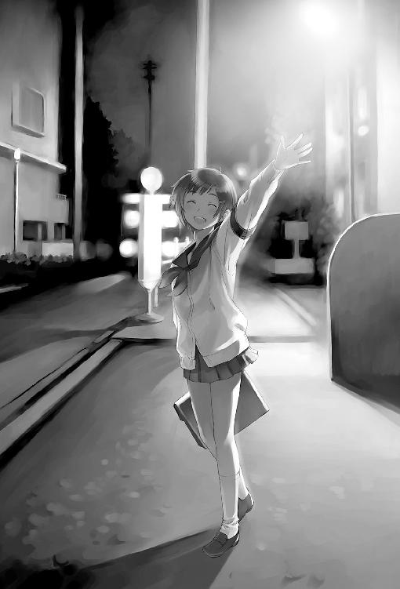
僕はそのときの彩夏の姿を、今でもはっきり思い出すことができる。
彼女が最後に見せた、無傷の笑顔。
彩夏が校舎前の花壇に倒れているのが発見されたのは、次の週の火曜日の朝だった。空気がぎしぎしに凍りついた早朝六時。教員や運動部の生徒たちがつくる人垣の真ん中、硬いコンクリートの床に広がった血。彩夏の上半身はちょうど、彼女が十ヶ月間丹誠込めて耕した花壇の土の上だった。開かれた瞼の下、青白い頬に、くっきりと赤黒い隈が浮いていた。どこかの先住民族の戦化粧のように。
女子生徒が目を背けて嘔吐していた。教員が群がってくる生徒を追い払おうと躍起になっていたけれど、そんな努力もむなしく人垣は増え続けていた。僕もその中に立って、近づいてくる救急車のサイレンをぼんやりと聞いていた。
彩夏の小さな身体が担架に載せられ、白いのっぺりとした車体が彼女を呑み込み、走り出すまでを僕はじっと見ていた。再びサイレンが鳴り出した瞬間、僕は駐輪場に駆け戻り、チェーン錠をひきちぎるように外して飛び乗り、走り出した。
車道を下っていく救急車の背中を追いかける。冷たい風で耳がちぎれそうなほど痛んだ。
病院に着いてからのことは、よく憶えていない。骨の色をした廊下の壁。手術室の扉の上でじっとりと点灯したままのランプ。目の前を何度も行き来するストレッチャーと看護婦さんたちの足音。
彩夏は手術室からそのまま集中治療室に直行し、僕は病院から追い出された。ロビーの入り口には、見慣れた制服姿がいっぱい固まっていた。もうこんな遅い時間なのに。
「藤島、彩夏どうだった？」
「手術終わったの？」
「ねえ、無事だったんでしょ？ ねえ！」
クラスメイトたちに囲まれて、僕はただ目を伏せて、首を振ることしかできなかった。声が耳に刺さる。痛い。人垣をかき分けて逃げ出した。
真っ暗な駐輪場で僕の自転車は凍りついたみたいに冷たくなっていた。
家に帰ると、布団に潜り込んで、彩夏が屋上のフェンスを乗り越えて飛び降りるところを想像しようとしたけれどうまくいかなかった。なんだこれは。なんなんだこれは。握りしめた手が震えだした。ようやく吐き気がやってきた。必死にこらえていると、現との境目さえわからない夢の中にいつの間にか引きずり込まれて眠っていた。
翌日朝のテレビで、Ｍ高校の屋上から飛び降りた女子生徒のニュースをやっていた。校舎屋上のフェンス際に彼女の上履きがそろえて置いてあるのが見つかったらしい。遺書はその場にはなかったという。画面に映し出される、見慣れた校門と校舎の影。それを見たとたん、僕はトイレに駆け込んで吐いた。胃液しか出てこなかった。
「今日は休むって学校に電話しとくよ？」
再び部屋にこもった僕に、姉がドアの外から言った。目聡くて事務的で容赦のない姉はこういうときにだけはありがたい存在だった。やがて「行ってきます」という声と、玄関から出ていく靴音が聞こえて、僕はひとりになった。
僕は、ひとりになった。
そうしてあの日の屋上に戻る。
なにか間違った言葉はなかっただろうか。彩夏はなにか言おうとしてなかっただろうか。どうして僕になにも言ってくれなかったのだろうか。僕がなにか見逃していただけか。訊けば答えてくれただろうか。なんで訊けなかった。どうして。携帯が何度か鳴ったけど聞こえない振りをした。僕はあの屋上での数時間を何度も反復した。
僕の手元に残っていた彩夏の欠片は、オレンジ色のマークが入った園芸部の腕章だけだった。あの日、彼女が自分でつけていたものだ。強引に着用させられて、そのまま忘れて持って帰ってきてしまった。
あのとき、もう彩夏は決めていたんだろうか。
わからなかった。
ふと気づいてカーテンを開くと、もう外が暗くなっていて、電気をつけると窓ガラスにひどい顔をした男が映った。
僕だった。
藍色の夕空に背を向けてカーペットの上にしゃがみ込む。寒さすら他人の身体みたいに白々しく感じた。
彩夏と面会できるようになったのは、その二日後だった。
色のない奇妙に明るい個室のベッドに、彩夏は埋まっていた。色んなパイプやホースやわけのわからない機器ではりねずみのようになっているおぞましい姿を想像していたけれど、腕への点滴だけだった。だから、それがたしかに彩夏の顔だとわかる。わかってしまう。髪を全部剃られ、頭にぴったりとテーピングされ、枕の中に沈み込んだ彩夏は、なんだかひどく縮んでしまったように見えた。
僕は丸椅子に座って、もう二度と開くことのないその青白いまぶたをじっと見つめていた。ベッドの向こう側では、医者が彩夏の母親に向かって、脳死状態と植物状態のちがいを説明していた。
なにがちがうんだ、と僕は思った。
もう喋ることも、笑うことも、できないのにかわりはないじゃないか。
どうして僕がその場にいてなにも言われなかったのか、わからない。学校もとっくに始まっている時期なのに朝から来ていたから、家族だと間違われたのかもしれない。医者はそのうち、尊厳死がどうとか、生命維持装置の一日あたりの費用がどうとかいう話を始めた。あるいはそいつは医者じゃなくて、無神経な保険会社の社員かなにかだったのかもしれない。とにかくおまえ黙れよ。なんで彩夏の目の前でそんな話ができるんだ？
どうして彩夏がこんな目に遭わなくちゃいけないんだ？
唐突に怒りがわいてきた。
だれのせいだ。だれが彩夏をこんなところに追い込んだんだ。神様がメモ帳の彩夏のページになにか書き込みやがったのか。それはひどく馬鹿馬鹿しい考えだったけど、止まらなかった。僕の知らない場所で僕の知らないだれかはいくらでも刺されたり撃たれたり轢かれたりすればいい、でも、どうして彩夏なんだ。
僕は病室の硬い丸椅子の上で、膝を抱えてその想いがどこかに噴き出してしまうのをじっとこらえた。
それから、クラスメイトの男女が何度も病室を訪れた。みんな、彩夏よりも僕の顔を見てぎょっとした表情になった。元気出せとか、学校来ないとだめだよとか、そんなようなことを言われた気がするけど、よく憶えていない。
いつの間にか、病室には僕だけが残されていた。僕と、彩夏の抜け殻だけ。カーテン越しに差し込む冬の陽はゆっくりとやせ細っていく。
耐えきれなくなった僕は、こわばった身体を引きずって病院から逃げ出し、家に帰って寝室に閉じこもった。
次の日も、その次の日も、僕は部屋から出なかった。
もう病院に行こうとは思わなかった。クラスメイトと遭遇したくなかったし、あんな彩夏を見ているのはつらすぎる。
「あんたもう一週間も学校さぼってるじゃない」と姉が僕の部屋の戸を叩いた。僕が黙って首を振ると、それが見えたはずもないのに、姉は大量のお粥が入った丼をドアの前に置いて、それから仕事に出かけてしまった。
まったく手をつけないままお粥が冷め切ってしまい、昼の十二時を回った頃、僕は三日ぶりに窓を開けて外の空気を吸い込んだ。喉と肺がひりひり痛んだ。吐息は手でつかめそうなくらいくっきりと白い。晴れた空がまぶしくて、目も痛んできた。
彩夏と最後に屋上で過ごした日も、こんな晴れた空だった。
自分がこんな風になってしまったことが、ひどく不思議に思えた。自分じゃないだれかが屋上から飛び降りただけで。自分じゃないだれかと、もう喋ることも笑いあうこともできなくなった、それだけのことで。
三ヶ月前の僕が今の僕を見たら、嗤うだろうか。それとも──
不意にチャイムが鳴った。僕はびっくりして窓枠の下に身を隠した。じっとしていると、二度目のチャイム。三度目。さらに、連打。甲高い電子音が連なって僕の耳を打つ。だれだ。なんてことするんだ、子供のいたずら？
やがてチャイムは途絶え、少ししてから小さな排気音が聞こえた。僕はそうっと窓から外の道路をのぞいた。原付に乗った小さな迷彩服の人影が遠ざかり、角を曲がって消えた。
少佐だ。
どうして少佐が？
僕は階段を駆け下りて玄関を開けた。敷石の上にぽつんと、真っ黒い箱が置いてあった。箱の上には見慣れた白抜き文字の『はなまる』。僕は震える手でそれを取り上げ、セロテープの封を外し、開いた。
もやっとした白い煙が流れ出してくる。白く濁った塊──ドライアイスの中に、透明プラスチックの丸いカップが二つ、埋まっている。表面にココアパウダーを敷いたアイスケーキ。
ティラミス。
『私を引っぱり上げて』。
僕は箱を台所まで持ち込むと、床にへたり込み、カップの一つを取り出して一口すくった。喉の中に流し込むのにひどく苦労した。二口目でむせた。冷たくて、甘くて、痛い。
二つとも食べ終わってしまった後で、箱の中のドライアイスが気化して消えていく様を僕はじっと眺めていた。膝の上の重みと冷たさは、長い長い時間をかけて、やがてすっかりなくなってしまう。
風呂に入ると、全身の骨と肉がばらばらになってしまいそうな錯覚にとらわれた。
いつの間にか夕方の五時を回っていた。僕は身体と髪を拭いて服を着ると、家を出た。
ほんの一週間ほど来ていなかっただけなのに、『ラーメンはなまる』はすっかり様変わりしてしまったように見えた。店内は客の背中で埋まり、店の外の椅子やビールケースにも丼を抱えた人の姿がある。それはいつものこの店の光景だ。でもそこに彩夏がいない。
ミンさんは、店の入り口にじっと立ちつくす僕にちらと目をやった。餃子をかじりながらスポーツ新聞を広げていたサラリーマンもじろじろと僕のことを見た。
「ちゃんと二つとも食ったか」とミンさんは言った。僕はうなずいた。
「そうか。あれ、一個は彩夏の分だから」
ミンさんの言葉が刺さる。
僕は店の光から身を隠すようにして勝手口に回った。ビルの入り口前の暗がりには、テツ先輩の姿だけがあった。階段の二段目に腰掛けて、パチスロ情報誌を読んでいる。僕が重ねた古タイヤに腰を下ろすと、一度だけ目を上げたけど、やっぱりなにも言わなかった。僕も、なにを喋っていいのかわからなかったので、じっと黙って、店の方から聞こえる注文の声や食器が触れ合う音を聞いていた。
やがてテツ先輩が立ち上がった。僕はびくっとして背筋を伸ばす。
「ナルミ。ボクシング教えろって言ってたよな」
「......え。あ、は、はい」
「おまえには二十七万、借金があるからな。無料で教えてやるよ。二年コースで」
「あの......」
「立て。上着脱げ」
テツ先輩の声色は有無を言わさぬ強いものだった。僕は立ち上がってジャンパーを脱いだ。
「なんでボクシング習いたいなんて思った？」
僕はテツ先輩の顔をぼんやりと見つめ、それから、かさかさになって皮のむけた自分の手のひらを見下ろした。
「......強く、なりたい、から......」
「うん。じゃあ、強くなるのにいちばん手っ取り早い方法はなんだと思う？」
僕は困惑した。テツ先輩の言っていることがよくわからなかった。
「ええと。練習、するんじゃないんですか」
「はずれ。正解は」
テツ先輩は傍らのバッグの中から、二巻きの包帯を取り出した。
「バンデージをしっかり巻くことだ」
「え」
「ボクサーと一般人の最大のちがいは、強いか弱いかじゃない。人を平気で殴れるかどうかだ。人を殴れば自分の拳だって痛い。相手も痛い。相手が痛いのを想像しちゃったら人は殴れない。そこで、バンデージ」
テツ先輩は僕の両方の拳に、包帯をしっかりと巻き付けてくれた。握りしめると、まるで自分の手じゃないみたいだ。それから先輩は、バッグの中からウレタンのパンチングミットを取り出して自分の両手にはめる。
「ほら、殴れ。どこでも殴っていいぞ」
僕はうつむき、ためらう。拳が持ち上がらない。
「いいから殴れよ。人間、なにか殴った方がいいときってのがあるんだよ。なにも考えずに殴れ」
顔を上げた。テツ先輩は笑っている。
「おまえのへたれパンチくらい全部受けてやるから」
ぶるり、と肩が震えた。なにかどろりとしたものが、腰骨の裏あたりから脇腹を伝って這い登ってくる。そのまま動かずに立ちつくしていたら、わけのわからないことを叫びだしてしまいそうだった。だから僕は握りしめた拳を振り上げた。
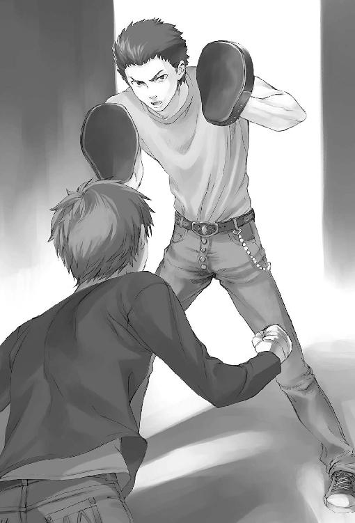
突き出した右拳が、ぱんと乾いた音を立ててミットに食い込む。萎えきった僕の肘と肩に痺れるような痛みが走った。かまわず左拳を振るう。腕がちょうど伸びきったところにミットの衝撃。痛みは歯まで伝わってくる。右。また左。右。僕は一心不乱に、テツ先輩の大きな影を殴り続けた。めちゃくちゃに腕を振り回しているはずなのに、必ずミットの張りつめた感触が僕の拳を受け止め、反作用の衝撃を伝えてくる。痛い。人を殴ると、自分も痛い。それはものすごくシンプルで説得力のある真実だった。彩夏は痛かっただろうか。それとも、痛みすら感じる間もなかっただろうか。汗が目に入り、視界がにじんだ。自分の荒い息づかいと、拳がミットを叩く音の他にはなにも聞こえなかった。それは僕のリアルな世界の音、リアルな痛みだった。
どれほどの間、スパーリングを続けていたのかわからない。気づくと僕は、身体を折って古タイヤに両手をつき、とぎれとぎれのいがらっぽい呼吸を繰り返していた。急な運動のせいで耳鳴りがして、胸が苦しかった。汗が額からあごにまで伝い落ちた。
そのときようやく僕は、自分がここになんのためにやってきたのか気づいた。彩夏のためにできること。自分のために、できること。
顔を上げると、テツ先輩の涼しい目。
「まだやるか？」
僕は首を振った。
「ありがとう、ござい、ました。今日は、もうじゅうぶんです」
バンデージをほどいて先輩に返す。身体はまだ火照っている。当たり前だ。僕は生きているのだから。彩夏はもうこの熱さえ感じられないかもしれないけれど、僕はまだ自分の足で立っているのだから。
「アリスに、逢ってきます」
照明がすべて落とされた部屋は、それでも十数基のモニタ・ディスプレイに照らされて仄明るかった。ベッドの奥に座ったアリスの後ろ姿は、つややかな長い黒髪のせいでガラス壜みたいに見える。壜の中には天の川の星がいっぱい詰まっている。
「これはね、ぼくなりの哀傷の表現なのだよ。他にやり方を知らないのでね」
僕に背を向けたままアリスは言った。暗闇の中、キーボードをものすごい速さで叩く音が、まるで地球の裏側の戦争で使われている自動小銃の射撃音みたいに聞こえていた。
「彩夏のカルテを調べさせたよ。そんなことしなければいいのにと自分でも思う。もう恢復の見込みがないことなんて、その目で見たきみがいちばんよく知っているはずだというのにね」
恢復の見込みが──ない。
ないのだろう。医者もそう言っていた。彩夏はこれからの一生を、ベッドの上のなまあたたかい植物として過ごすのだ。
「それなのに、きみはここにやってきた。ずっと部屋に閉じこもっているか、あるいは手首でも切っているものかと思っていたのに」
「そう」
僕はベッドのすぐ手前に腰を下ろした。アリスは手を止めて振り向く。カラフルなパジャマはモニタの明かりだけに照らされて水銀色に沈み、その瞳には、ちょっと指でつつけば崩れてしまいそうな、もろい光がたまっている。
「......これだけ言ってもきみは怒らないんだね」
「え？」
「いや。なんでもないよ。ぼくが悪かった」
ものすごく珍しいものを聞いた気がした。アリスが謝っている。
「怒る筋合いもないよ。だって、ほっておいたら、たぶんアリスの言う通りだったと思う」
「そうか。では氷菓づくりのうまいマスターに感謝しなければね」
僕はうなずく。
「用件を聞こう」
「アリスは探偵だよね」
「ただの探偵じゃない。ニート探偵だよ」
「部屋に居ながらにして世界中を検索し真実を見つけだす？」
「その通りだ」アリスは哀しそうな目のまま、自嘲気味に笑う。
その大げさな謳い文句を信じていたわけじゃなかった。ただ、僕には、他に頼れるものもなかったのだ。
「じゃあ」僕は唾を呑み込む。「調査を、依頼したい」
自分で口にした言葉だったけれど、それはひどく滑稽に聞こえた。
僕はしばらくの間、アリスの大きな深い瞳にじっと見つめられて、息が詰まるほどの想いを味わった。やがて少女は、ほとんど聞こえないほどの小さな声で囁く。
「なにを知りたい？」
「どうして彩夏が、......あんなことに、なったのか」
アリスは長いまつげを伏せた。じっと考え事をしているようにも、あるいは聞こえないはずの音に耳を澄ませているようにも見えた。
「......前にぼくが言ったことを憶えているかい。探偵の本質は死者の代弁者だと。墓を暴いて失われた言葉を引きずり出し、死者の名誉を守るためだけに生者を傷つけ、生者に慰めを与えるためだけに死者を辱める、と」
「憶えてるよ」
アリスはまぶたを開いた。
「では今一度訊こう、ぼくの手は、彩夏が隠しておきたかった真実さえ暴き立て、無知によって保たれたはずのきみの平穏を破壊する可能性がある。それでも知りたいかい？」
僕は少しだけためらった。彩夏が隠しておきたかったこと。あるのだろうか。いや、たぶん、あるのだろう。僕に言えなかったことが。
それでも。
それでも、僕は──
「知りたいよ」
アリスは深く息を吐き出した。
「わかった。引き受けよう。料金は要らない、ぼくはもう答えを知っている」
僕は目を見開いた。
「......え？」
「きみが知りたいことを、ぼくはもう知っているんだ。遅すぎた......けれど」
「じゃ、じゃあ」
僕の言葉をアリスの鋭い声が遮る。
「今やそこに謎は一つもない。なぜ死のうとしたのかなんて考えるまでもない。ぼくが知りたいのはそこじゃないんだ」
「なに言って......」
「ぼくが知りたいのはね、彩夏がなぜ学校で自殺しようとしたのかだ」
僕は一瞬、呆けたようになる。アリスの言っている意味がわからなくなる。
「あの前日の月曜日、彩夏は授業に出ていない。それはきみも知っているね。しかし授業が終わった後でなぜか学校に行っている。いくつか目撃証言がある。そして家に帰っていない。月曜日の夜、巡回していた警備員が、開けっ放しになっていた北校舎屋上の扉の鍵を閉めたという証言がある。つまりそのとき彩夏は屋上に隠れていたんだ。そして朝を待って飛び降りた。わかるかい、衝動的に校舎の屋上を死に場所として選んだんじゃない、最初からあそこに決めていたんだ。じゃあ、その理由はなんだ？」
僕の背筋がぞくりとする。
学校を死に場所に選んだ理由。死に場所に──選んだ？
「わからない。ぼくには理由がわからない。ぼくは理由を知らなきゃいけない。だから、きみに手伝ってもらう。この二ヶ月、彩夏にいちばん近い場所にいた、きみに」
「僕......に？ どうして、どうしてそんなことを、知りたがるんだ」
アリスは片方の眉をくいと持ち上げる。目を見開く。怒っているような、驚いているような、不思議な表情。
「どうして？ どうして知りたがるのかって？ そんなことをきみが訊くのか？ 彩夏が飛び降りた理由を知りたがるきみが、ぼくにそれを訊くのか」
「あ......」
「きみと同じだ。ぼくは知らなくちゃいけないんだ。だって、ぼくは彩夏が飛び降りるのを止められたはずなんだ。もっと、ぼくがもっと多くを、もっと早くに知っていれば、止められたはずなんだ。彩夏がああなったのはぼくのせいだ。今からでも、知らなくちゃいけない、なんとしてでも、そうでなければ、ぼくは、ぼくは......」
アリスは思い詰めたような、追いつめられたような声で繰り返す。僕は胸が締め付けられるような想いを飲み下した。なんだろう、この少女を前にして浮かんでくるこの感情はなんだろう。懐かしさ。痛ましさ。切なさ。
「手伝って、くれるね？ それが料金がわりだ」
アリスはすがるような目で、僕をじっと見つめる。もろい光。ガラスの中の星。今にも、砕けてしまいそうな。
だから、僕は、差し伸べられたその手を──
そっと握った。
「わかったよ。僕は、アリスの助手だったよね」
僕の言葉に、アリスはびっくりした表情を浮かべる。
冷たい指先。
濡れた闇の溜まった瞳。
やがてそれは、微笑みへと溶けた。
４
人生には取り返しのつかないことがあると云う人とないと云う人がいて、僕は当然のように前者の支持者だったのだけれど、ひょっとして取り返しのつかないことというのはつまるところ死ぬことであって、その瞬間それは人生の範疇から除外されるために結果として取り返しのつかないことなんて存在しないという理屈が成り立つのじゃないだろうか──なんてことを屋上に出る扉の真ん中にテープで貼られた『立入禁止』の藁半紙を見ながらふと考えた。
では他人の死はどうだろう。取り返しのつかないことだろうか。たしかにその人はもう生き返ったりはしないけれど、その人のために空けてあった自分の中の部屋を、別の人で埋めたり、あるいは人じゃないがらくたで埋めたり、扉を閉ざしてガムテープでびっちり隙間をふさいで忘れてしまうことはできる。そうすることができない不器用なやつは自分も手首を切ってとっくに死んでるから、やっぱり人生に取り返しのつかないことなんてないのだ。なんて、先週までの僕なら回心してしまったかもしれない。でも、今の僕は。死ですらないものをこの目で見た今の僕は、もっとろくでもない教義にとりつかれていた。
人生には取り返しのつかないことしかない。
それが確かに正しいことなのかどうかは、わからないけれど。
一つ確かなことは、屋上に出る扉に鍵がかかっているということだった。屋上はしばらく完全封鎖らしい。彩夏が飛び降りたのは、僕らがいつも鉢植えを世話していたこちら側ではなく、反対側の北校舎なんだけど、そういう問題でもないんだろう。
ドアノブをしばらくがちゃがちゃやってから、あきらめて階段を下りた。どうも僕は探偵助手に向いていないのかもしれない。できるやつなら、口八丁手八丁でなんとか屋上の鍵を借り出したり、あるいは雨樋伝いによじ登ったりして目的を達しただろうけど。
探偵助手。
僕とアリスとの間に雇用（？）契約が成立した、次の日のこと。アリスは僕を呼び出すと、彩夏について知っていることを思い出せる限り洗いざらい喋らせた。全然気を遣わないやつなのだ。僕がその苦痛に満ちた一時間の供述を終えると、アリスはあっさりと言った。
「うん。わかった。全部つながった」
なにがだ。でもアリスは教えてくれなかった。
「ぼくが今のところ知っているのは、真実であって事実ではないのだよ」と、わけのわからないことを言う。
「それ......どうちがうの？」
「真実を支えるのは究極的にはただの直観に過ぎない。ぼく自身はそれで事足りるけれど、そんなものを依頼者に提供して職務完遂とするのはぼくの矜持が許さないというわけさ」
「ええと。......証拠がないってこと？」
「わかりやすく言えばそうなるな。だからきみにも雑務を手伝ってもらうのだよ。それに、きみが依頼した件の情報料は労働で支払うのだろう。今教えてしまったら対価を得られないじゃないか。それでも事実を飛び越して真実だけ知りたいというのなら、自分で動くのだね。さあ、目隠しされたロバのように働きたまえ」
前の日に僕の手を握って泣きそうになっていたのが嘘みたいに、アリスはいつもの調子で言った。
「今まで通り園芸部の活動をして、彩夏がふれたすべての場所をよく観察すること。それがきみの最初の仕事だ」
だから僕は次に花壇に向かった。
放課後の中庭は人気がない。受験シーズンだからとか、冬だからとかいう理由もあるだろうけれど、花壇と校舎の間のコンクリート床に広がった黒い大きなしみも理由の一つだろう。僕は黒いしみのそばに立ってじっとそれを見つめた。僕がはじめて見たリアルな死の気配は、まだそこに残っていた。雨や雪でいつかは洗い流されてしまうだろうけれど、そのときはまだくっきりとコンクリートに刻み込まれていた。
他には、なにもない。
こんなことをしてなんになるんだろう。アリスは、彩夏が飛び降りた理由を知っていると言った。でも遺書は見つかっていないし、警察も沈黙している。週刊誌が、あまり優良とはいえなかった彩夏の家庭環境について騒ぎ立てているだけだ。他人には見えないものが、マシンに埋め尽くされたあの小さな部屋からは見えているんだろうか。
考えていてもしかたのないことだった。最後に残った場所、校舎裏の温室に行った。彩夏の聖域。職員室から借りてきた鍵で扉を開くと、むっと強い草のにおいがあふれてくる。
床面積はたぶん僕の部屋の倍くらいだろう。十二畳ってところ。閑散としている。目につく植物は、左右のラックに並んだ、萎れかけた熱帯植物の鉢くらいだ。花は一つも咲いていない。あれから、だれかが片づけたんだろうか。
見上げると、天井には縦横にパイプが張り巡らされ、ところどころに蓮の実のようなスプリンクラーがついている。たぶん自動で水や薬液を撒けるんだろう。補光装置もある。都立の普通高校なのに、なんでこんなに立派な温室があるのかわからない。予算が余ってたのか。
僕はラックの下段に腰を下ろし、棚の空いている部分に上半身を横たえた。目を閉じ、ぬるま湯のような土のにおいに身体を任せる。
トシさんは見つかっていない。彩夏はもういない。僕の場所には、もう僕ひとりしかいない。病院と拘置所にぶち込まれる麻薬中毒患者だけが日に日に増えていく。
唐突に胸ポケットの携帯電話が震える。僕は驚いて身を起こし、ラックの上の段に頭をぶつけてしまった。
『ぼくだ。ちゃんと仕事をしているかい。寝転がってくだらない妄想をかき回していたんじゃないだろうね。ぼくはニートだが他人の怠惰には厳しいから憶えておきたまえ』
電話の向こうから聞こえてくる少女の声。僕は思わず温室の中を見回してしまう。まさかカメラでも仕掛けられてるんじゃないだろうな。
『今、まだ学校だね？』
「......うん。温室に来てる。ちゃんと見て回ってるよ、言われた通り」
『それはちょうどよかった。きみに確かめてもらいたいことがある。その温室には出入り口が二つあるだろう？』
......え？
僕は立ち上がった。出入り口が二つ？
入ってきた扉の反対側に、たしかに、もう一つ同じ造りのスティールドアがある。
どうしてアリスがそんなことを知ってるんだろう。温室には二つ扉をつけるのが普通なのだろうか。それともネットを嗅ぎ回って調べたのか。
『もう一つの方を開けてみてくれたまえ』
「でも。向こう側、すぐ壁だよ」
温室は学校の敷地の角、塀に押しつけられるようにして建っているのだ。
『そんなことを知らないぼくだとでも思っているのかい。いいから言う通りにしたまえよ』
奥の扉の鍵を外し、ノブを回して押してみると、ごりっ、と音がしてすぐに鈍い感触にぶつかった。十センチくらいしか開かない。
「開かないよ」
『......聞こえたかい？ うん、じゃあそのへんだ。......板？ ああ、おそらくそれだろうな』
いきなりアリスは変なことを言い出す。声がちょっと遠い。あ、ひょっとして別のだれかと喋っているんだろうか、なんてことを考えていたら、目の前のドアがいきなり外へと開いた。ノブを握ったままの僕はつんのめって転びそうになる。
ドアの向こうに人影があった。顔を上げた僕の目と、猛獣めいた鋭い目が合う。僕は一瞬、頭が真っ白になった。
四代目だ。
なんで四代目が？ ていうかどうしてドアが開くの？
なにが起きてるのか、わからない。
四代目は手にした携帯で「開いた。ああ。間違いないな。......うん。......いや、もう始末されてる。なんもねえ。張り込んでも無駄だろ」と喋っている。それに答えるのは、僕がさっきまで聞いていた声。
『じゃあ、後はそっちに任せたよ。目の前にナルミが呆けた顔で転がってると思うから説明は四代目がしてくれたまえ。ぼくは忙しい』
「なんっ、おいアリス！」
四代目の携帯は沈黙する。しばらく、居心地の悪い沈黙が僕と四代目の間をふよふよ漂っていた。舌打ちしながら温室に入ってくるので、僕はあわてて脇にどく。四代目は僕をにらむのだけどなにも喋ってくれない。視線をそらし、ドアの外を見て、ようやく一つ謎が解ける。
ドアの向こうには卒塔婆や砂埃で汚れた墓石の並びが見えた。学校に隣接したお寺の墓地だ。ちょうど温室の裏口にあたる箇所だけ塀が崩れていて、大きなベニヤ板でその隙間をふさいであるだけだったのだ。
でも、どうしてアリスがこんな抜け道を知ってるんだろう？ それに、どうして四代目が。
四代目は僕を無視して携帯のカメラで温室の様子をあちこち撮影してる。
「あのう、どうして四代目がここに」
「おまえもそれで呼ぶんじゃねえ」
「ええと。じゃ、じゃあ、壮さん？」
「いつからおまえは俺の身内になった」
『四代目の名字は雛村だからヒナちゃんと呼ぶと喜ぶのだよナルミ』
うわっ僕の方はまだアリスとつながってたのか。四代目は鬼の形相で僕の携帯を取り上げて通話を切る。握り潰されるかと思った。
「......ヒ、ヒナちゃ」「ぶっ殺すぞ」四代目は僕の口の中に携帯を突っ込んだ。なにしますかこの人は！
「おまえの仕事はここの鍵を開けることだったんだよ。もう済んだんだからさっさと帰れ」
四代目の言葉に、僕は呆気にとられるしかない。
「......どういう、ことですか」
「アリスからなんも聞いてないのか」
僕はなんだかみじめな思いでうなずく。四代目は長いため息をついた。
「なら、てめえで考えろ」
四代目と、彩夏の接点。
トシさんだ。トシさんしかいない。それから、エンジェル・フィックス。
じゃあ、彩夏が自殺しようとしたのは、やっぱりトシさんになにか関係があるのか。でも、どうして温室が？ 僕の頭の中で、いくつもの断片がぐるぐる回っていた。元の絵を知らないままのジグソーパズル。
「待って、待ってください」
温室から出ていこうとする四代目を、僕はあわてて呼び止める。振り向いた狼の目は険しさを増している。
「......薬と、彩夏が、関係あるんですか？ どうして、なにが──」
「関係あるに決まってるだろ。馬鹿かおまえは。あんなもんが出回らなきゃ、おまえは今でも平和に園芸部やってられたんだよ。ぶっ壊れてからじゃねえと気づかねえのか」
僕は言葉を失う。
墓場に続く扉は勢いよく閉じた。僕は温室の生ぬるい草いきれの中で、再びひとりになる。
薬のせいなのか。彩夏が飛び降りたのは、あのくそったれなピンクの錠剤のせいなのか。どうして。トシさんがなにかしたのか？
エンジェル・フィックスのせいで。
いくら考えても、どこにも進めなかった。僕はあきらめて、職員室に戻って温室の鍵を返した。退出しようとしたとき、小百合先生が僕を呼び止めた。
「こんなときにこんなこと言うのもあれなんだけど。園芸部、どうするつもり？」
「どうする、って」
「その......あんなことがあって、部員は藤島くんだけでしょう」
ああ、そうか。僕と彩夏が出逢った日のこと。僕らをつなぎとめていた約束を思い出す。
「私としては、できれば、続けてほしいんだけど。他の子にも声かけてみるつもり。花壇潰しちゃったら、みたいなこと言う先生もいるんだけどね」
僕は黙って考え込む。はっきりいって園芸のことはなに一つ知らないので、僕ひとりで部活動を維持したり四月に入ってくる新入生を勧誘したりといったことは非現実的だった。デンドロビウムといわれたらガンダムの方を思い出すような人間だし。でも、このまま花壇や温室を荒れ放題にはしたくない気持ちもあった。彩夏の場所だから。
たとえ、もう帰ってこないとしても。
沈黙してしまった僕に、小百合先生は少々誤解したようだった。
「ごめんなさい、こんなこと急に話して。藤島くんの気持ちもあるものね。いやなら、無理にとは言わない」
「あ、その......」
小百合先生は教員生活五年目で未婚なのになぜか未亡人と噂されるほどの無駄に艶っぽい上目遣いが武器である。それに真下からぐさりとやられて僕はたじろぐ。
「いやなわけじゃ、ないんですけれど」
「そう？」
ほっとした顔をする小百合先生。
「篠崎さんが、あんなに大切にしてた花だものね。できればみんなちゃんと世話して残してあげたい。温室にはもうすぐ咲きそうなのもあったし」
......咲きそうだった？
「あの、温室の植物ほとんどなくなってたんですけど、先生が片づけたんじゃないんですか？」
小百合先生は目を丸くする。
「なくなってた？ ほんと？」
ボールペンを唇の下にあてて考え込む先生。
「篠崎さんが処分したのかしら」
彩夏が？
そうかもしれない。後始末として......いや、ちょっと待て。
そのとき僕は四代目の言葉を思い出す。アリスと電話で話していたときのせりふだ。『もう始末されている』と言っていなかったか。
温室と、彩夏。
トシさん。
エンジェル・フィックス。
僕の中で、ばらばらだったものがつながり始めていた。
自転車を飛ばし、『ラーメンはなまる』に着いた頃には一月の短い日は早くも沈みかけて、ビルの足下にのれん越しの赤い灯だけが浮き上がって見えた。客は一人もいない。店の裏のポリバケツに自転車をぶつけて停めると、スタンドを蹴り落としてビルの非常階段を上ろうとした。
そのとき、ミンさんが厨房の奥から僕を呼び止めた。
「そこに座れ」
「あの、今急いで」
「いいから座れ殴るぞ」
ミンさんがおたまを大上段に振りかぶったので、僕はおとなしく店に入ってカウンター席に腰を下ろした。
目の前にとん、と置かれた紙カップ。その日は柚子のシャーベットだった。氷の針が頭に突き刺さってくるような酸味。身体の火照りがその穴から吸い取られていくみたいだ。それから、ほのかに辛味がある。不思議な味。僕は不意に今が冬であることを思い出して身震いした。
「生姜が入ってんの、それ」
「へえ......」そういえば生姜の味だ。意外に合うんだな......。
「後から身体が暖まってくるウィンタースペシャル」
ミンさんは得意げに笑って、さらしを巻いた胸をずんと張る。
「親父が根性だけで生きてるみたいなアウトドア体育会系でさ、よく冬山に連れていかれたり寒中水泳とかやらされたんだ。で、ダシ用の生姜かじってしのいでたの」忍者の修行かよ。
「で、わたし実は泳げなかったんだよね、ガキの頃は」
「え」
「そんなに驚くなよ。だれにだって苦手なことはあるだろ」
まあその通りなんだけど、そもそもミンさんの子供の頃というのがうまく想像できない。
「泳げないやつってさ、溺れそうになると暴れるじゃん。わたしもよく親父に怒られたよ。泳げないならじっとしとけ、人間の身体は水に浮くようにできてるから、って。でも溺れてる当人にとっちゃそんなの思い出してる余裕もないしさ」
そこでミンさんは言葉を切って僕をじっと見つめた。ようやく僕は、それが説教だったことに気づく。ミンさんは、はっきりとは言わないけれど。
頭が冷えていく。
たしかに、ほんの数分前までの僕は、とにかくアリスに逢って、あのパジャマ娘の首根っこを押さえつけて、なにもかもを洗いざらい聞き出してやろうという衝動に突き動かされていた。でも、なにを訊けばいいのかは、これっぽっちも頭になかったのだ。まるっきり馬鹿だ。
肩を落とす。泳げないならじっとしていればいい、人間の身体は水に浮くようにできている。でも、と僕は思う。だから、なんだっていうんだ？
「ミンさんは」
ん、とネギを刻む手を止めて顔を上げるミンさん。
「彩夏が。......いなく、なって。どう思いましたか」
「おまえ馬鹿か。そんなことで他人の意見参考にするなよ」
ミンさんの声は本気で怒っているように聞こえた。
「わたしが見舞いに行ってわんわん泣きましたよって言ったら、自分も同じことしなきゃ、とか思うのか。べつにどうも思ってないよって言ったら、じゃあこれでいいのかって安心するのか」
ミンさんの言葉は、いつかの四代目のボディブローのように僕の腹にずしずしと突き刺さった。僕はアイスのカップを握りしめてうなだれる。なんかここ数ヶ月、馬鹿なことをやって他人に呆れられるというパターンをずっと繰り返している気がしてきた。
うつむいたまま立ち上がる。
「アリスのとこに行ってきます」
「ん」
僕の目の前にミンさんの手が差し出される。カウンターに置かれた蓋つきの紙カップ。食べ終わったばかりの柚子生姜シャーベット、もう一つだ。
「あいつにも持っていって。たぶん今日も機嫌悪いと思うから」
ミンさんの予想通り、アリスは大変な有様だった。クソ寒い一月だというのに冷房をガンガンにきかせ、ベッド前の床にドクターペッパーの空き缶を蜂の巣みたいに大量に並べて、シーツの上でクマのモッガディート（耳は職人芸で元通り）をはじめ色とりどりのぬいぐるみの大軍に囲まれ、保冷剤を額に巻き付けて目の下に隈をつくっている。
「ぼくの領地にそんなロシア兵みたいなかっこうでやってくるとはいい度胸だ。今すぐその見ているだけで暑苦しい上着を脱ぐかそれとも出ていくか選びたまえ」
「......あのさ、毎回思うんだけど、なんでいつもクーラーかかってんの？」
「きみの頭の両側についているのは持ち運び用の把手かなにかかい？ 脱ぐかそれとも出ていくかと言ったんだ」
しぶしぶジャンパーを脱ぐ。シャレにならないほど寒い。アリスは背後のマシンに埋め尽くされた壁を手で振って示す。
「ぼくの眼や耳たちは稼動しているだけで熱を発するのだよ。永遠の闇と静寂に比べれば寒さくらいどうしたというんだい」
「いや、でもさ、人間がそれにつきあう必要ないと思うんだけど」
言い返す僕の歯の根は寒さでがちがち鳴っている。
「なんたる傲慢、あきれた人間中心主義者だなきみは。救いがたいよ。環境を人間につきあわせろというのかい？ それこそ愚行だ。不確定性原理と不完全性定理によって人間が神に敗北することが明らかになって以来、哲学も自然科学も世界を変えるよりは自分たちが変わる方がよほど効率的だと気づいてそそくさと方向転換したというのに、きみはひとり沈みゆく船の船尾に立って錬金術師の旗をむなしく振り続けるわけか。いい見せ物だな。映画にしたいくらいだラジー賞を総なめにできるぞ」
「......えと」
ふうむ、僕は傲慢な人間中心主義者だったのか。そうか。言われてはじめて気づいたぞ。どう考えてもアリスの方が詭弁をまくしたててるのは明らかなんだけど、寒さと長広舌にやられた僕の脳みそは早くも白旗を揚げたがっていた。
「わかったよ。ごめん。ついでにセーターも脱いだ方がいいかな」
アリスはその大きな目をぱちくりさせる。
「......きみはほんとに奇妙なやつだな。空調なぞ環境を人間につきあわせる最たるものの一つなのに、なぜそうもあっさりと反論をあきらめるんだい。貴様こそ人間中心主義者だ、くらい言いたまえ」
「ううん......」
アリスに罵倒されて安堵のようなものを感じている自分に気づき、僕はちょっと焦っていた。やばい人みたいだ。
「今、もういっぱいいっぱいなんだよ。反論する気力ないんだ」
またアリスが口を開きかけたので、持ってきたシャーベットを渡して黙らせた。
カップの蓋を開けたアリスは柚子の香りに目を輝かせる。でも一口食べるなり、「んんん」とうなって目をぎゅっとつむってしまう。
「どうしたの？」
「......辛い」
目尻に涙を浮かべて言う。泣くほど辛いか？
「やるなマスター......さすがのぼくもこれは予想し得なかった不意打ちだよ......う、む......」
「だいじょぶ？」
「......大丈夫。美味しいから全部食べる」
アリスはべそをかきながらスプーンを口に運び、そのたびに悶える。
「そんな無理しなくても。余ったら僕が食べるよ」
「とことん強欲だなきみは。下でたらふく食べてきたというのに、ぼくの楽しみまで奪おうというのか。一口たりともやるもんか」
あかんべーまでされてしまった。それから十分くらいかけてアリスはシャーベットを平らげた。食べ終わると、まだ辛味が口に残っているらしく唇をきゅっと結んで目をつむり、なにかを言いたそうに毛布の上で手をぱたぱた上下に動かしたので、僕は冷蔵庫からドクターペッパーを持ってきて渡した。
一気に飲んで、一息。だいぶ機嫌が良くなったみたいだ。
「きみもなかなか探偵助手ぶりが板についてきたようだね。言わずとも主要業務をこなすようになればようやく半人前だ」
「助手の主要業務はドクペ運びだったのか......」
「ちがうとでも思っていたのかい？」
いえ、わかってましたよ？
「さて。きみの方の用事を先に済ませてしまおうか。四代目はおそらくなにも説明してくれなかっただろうしね。たぶん答えてやらないと思うが、訊きたいことがあったら遠慮なく言いたまえ」
なんだそりゃ。
僕は考え込んでしまう。たしかに、なにを訊いても馬鹿にはするけど答えてはくれなさそうだ。ただ、答えてくれないというその事実が、そのまま答えになる場合もある。
それに。
僕だって、いつまでも真っ暗闇の中を手探りで歩いているわけじゃなかった。
「訊きたいことがあるんじゃないのかい？」
アリスは膝を立ててその上に顎をのせ、首を傾げる。
「なにを訊けばいいのか考えてるんだ」
「少しは成長したのだね」
たぶんミンさんが食べさせてくれた柚子シャーベットのおかげだろう。あのまま駆け込んでいたら思いついた端から口にして、さんざんアリスに馬鹿にされていただろうから。
かなり長い間考えてから、僕は言った。
「あの、エンジェル・フィックスの資料のコピーを僕にもくれないかな。写真が載ってたやつ」
アリスの顔から笑みが消えた。しばらく答えはなかった。ＰＣのファンのうなりだけが聞こえていた。ああ、正解だ、と僕は直観した。同時に、心臓がかかとの裏まで押し込められたような気分が襲ってくる。
やがてアリスがつぶやく。
「墓を暴いて死者を辱める覚悟が、できたのかい？」
僕は──
小さく、うなずいた。
アリスも哀しげな目をしてうなずき返す。
「わかった。渡そう。でも、その前にナルミにやってほしい仕事がある」
助手はいつでも出来高払いらしかった。アリスは僕をベッドへと手招きする。え。ちょっと待て。ベッド？ あがれとおっしゃる？
「なにをたじろいでいるんだい。きみの腕はその位置からこのキーボードまで届くほど長いのかい？」
「......キーボード？」
「マシンを使う仕事だからこっちまで来いと言っているんだ」
「あ、ああ......」
なんかものすげー恥ずかしい誤解をしてしまったのを気づかれないように僕はアリスから顔をそむけて立ち上がる。
「ええと。あがっていいの？」
「早くしたまえ」
僕は遠慮がちにシーツの上を膝歩きしてアリスの隣まで行く。女の子と同じベッドの上。なんかめちゃくちゃ緊張するんですけど。
「きみは画像をいじるのだけは得意だったろう。この写真のディフォルメを頼みたいんだ」
アリスが指さすいちばん下段のモニタには、フォトショップが起動してあって、顎の尖った若い男の画像が映っていた。
「ディフォルメ？」
「そう。大勢に配って捜すための写真だからね。聞いたことがないかい、人間の記憶は見たものをそのまま保存しているわけじゃないから、写真そのものよりも顔の特徴を大きく強調した方が印象が合致しやすいんだ。似顔絵なんかはその理屈だね」
ああ、聞いたことがあるような。僕は再びモニタに目をやる。
そのとき、背筋にぞっと悪寒が這った。僕はその男を知っていた。どこで見たんだ？
「......これ、だれ？」
「墓見坂史郎という大学院生だ」
僕ははっとしてアリスを見る。墓見坂？
モニタに目を戻す。鋭くあごの尖った、理知的な顔。免許証の写真かなにかだろうか、一片の笑いも浮かんでいない。頭の中で、その顔に縁なしの眼鏡を合成してみる。思い出した。間違いない、トシさんがいなくなったあの日、横断歩道のところで逢った、あの不気味な男だ。
「七年前にＴ薬科大に入学、ただし薬学部じゃなくて生命科学部だ。遺伝子をいじる学問というと少し語弊があるかな。たいそう優秀な成績だったそうだよ。十九歳でイランに留学している。そのときに出逢ったのだろうね」
出逢った？ だれと？
「こいつと、だよ」
アリスは僕に一束の紙を差し出した。いちばん上の一枚には、赤い花の写真。あのとき見た資料だ。
「もっとも、その写真にある花はそうそう珍しいものじゃない。あんな馬鹿げた薬効は生まれないから、おそらく墓見坂が見つけたのはこれの突然変異種だろうね。アルカロイドの含有率が近い麻薬植物の中から、研究室があたりをつけたんだ。労働報酬だが、先に渡しておくよ。さておき」
アリスはモニタに向き直る。
「墓見坂一人だけじゃない。ネット上で彼とつながりがあったとおぼしき人物を徹底的に洗った。全員が事件との関与があるかどうかはわからないが、とにかくね。なにからなにまでホームメイドな麻薬組織なのだよ。墓見坂の父親は群馬の有力な二世議員でね。おそらく資金は彼の小遣いから出ているのだろう。父親名義で持っている物件は総ざらえしてみたが、今のところ居場所はつかめていない。周到かつ大胆なのだね。一介の院生がいちからネットで人材を募り、この街で育て、作り、安価にばらまいた。これまで尻尾がつかめなかったわけだ」
アリスは他のウィンドウを次々と見せる。まともに顔を正面から撮った写真は少なかった。集合写真の一部や、解像度が低くてかなり顔が判別しづらいものもある。
「どうやって集めたんだ、これ......」
「だからぼくはニート探偵だと言っただろう。墓見坂史郎の携帯を割り出すのがいちばん苦労した。あとはひとまず手当たり次第だ」
僕はぞっとする。ほんとに通話記録を盗み出したのか。
「ハッカーってのはマジだったのか......」
「ハッカーじゃない。そもそもハッカーというのはマサチューセッツ工科大学の学生の間で、ぶっ飛んだ大掛かりな悪戯をするやつに対して与えられた尊称だ。きみが言いたいのはクラッカーだろうが、それもちがう。何度も言うがニート探偵だ。いいから画面に集中したまえ」
アリスは僕の顔をつかんでぐいとモニタに向き直らせる。
最後のウィンドウに映っているのは、見間違えようもない、トシさんだった。彩夏と同じ目、彩夏と同じ顔の輪郭。僕は泣き出しそうになった。わかっていた、わかっていたことなのに。
「たしか、なの？」
それでも、僕は訊ねてしまう。アリスは優しい声で答える。
「たしかではないさ。ぼくに見える世界は、ネットに開いた無数の小さな窓からの限定的な風景だけだ。トシはたまたまドラッグ専門サイトで墓見坂史郎と知り合って、携帯電話を借りられるほどの仲になり、直接フィックスを譲り受けるようになっただけで、製造にも販売にもまったく関わってない......かも、しれない。その可能性は、否定できない」
アリスの言葉は、劇の台本を棒読みしているみたいに聞こえた。ひどく空々しい。
「トシの言動にはいくつか不可解な点がある。そもそも、あの日ここに久しぶりに顔を出したのも、ただ彩夏に金を無心しにきたわけではないだろう」
「......え？」
「トシはきみに訊いたのだろう、四代目が最近ぼくのところに来なかったか、と。用事はそれだけだ、とも言ったのだったね」
「あ......」
思い出す。たしかにトシさんはそう言っていた。あのときはなんのことかまったくわからなかったけれど、今なら、トシさんの背後にあるものを知った今なら、わかる。
「四代目とアリスが、薬のこと調査し始めてるかどうか......調べに来てたのか」
「一つの推測だ。まだ真実じゃない。その仮定だと、矛盾が生じるんだ。いいかい、トシがすでにぼくを警戒していたなら、なぜ、きみにエンジェル・フィックスを見せた？」
僕は黙り込む。
たしかに、変だ。アリスが薬について調べ始めているかもしれない、と勘づいていたなら、僕の目の前でドラッグをキメるような迂闊な真似はしないはずだ。
それに、あのとき墓見坂も、トシさんを捜していてやっと見つけたようなことを言っていた。じゃあ、あれはトシさんが勝手にやったこと？
わからない。
エンジェル・フィックスの名前を聞いたのが僕じゃなければ、もっと頭の回る人だったなら、アリスや四代目の持っていた情報とすぐに結びついて、もっとずっとましな展開になっていたはずなのに。僕じゃなければ。
どうして、僕なんだろう。
どうしてトシさんは──
わからなかった。
「わからない。そこがぼくにはわからない。だから」
アリスは僕の手をそっと取って、マウスの上に置いた。カーソルが画面の中で震える。
「きみと同じだよ。きみがその資料と、そして自分の目と耳とで真実を確かめようとしているように。ぼくも真実を確かめるのさ、本人を捜し出してね」
六枚の画像を加工して、さらに切り貼りして一枚にまとめるのに二時間かかった。アリスは僕の隣にしゃがみ込んで、じっと作業を見つめていた。普段片時も口を閉じていないくせに、こういうときだけ静かなので、僕はひどく緊張してしまった。なるべくアリスの方を見ないようにと、モニタに集中する。首が疲れる。喋っていないときの方が相手を意識するものなんだな、と僕ははじめて知った。
「アリス、できたよ」
「んん......んむ」
寝てやがった。やけに静かだと思ったら。
「遅かったね。眠ってしまったよ。ふむ、まずまずの出来といったところか」
ねぎらいの言葉はなし。いいんだけど。アリスは僕を押しのけてメーラを起動すると、圧縮した画像ファイルを送信した。それから、ぐしゃぐしゃのＰＣラックの奥の受話器を引っぱり出す。
「......四代目かい？ うん、ぼくだ。画像があがったから、今そっちに送ったよ。......ん？ それはアーカイヴファイルだよ。圧縮してあるんだ。え？ ダブルクリックすればいいだけだ。Ａ４で印刷するのがいいだろう。いやいや。ペインタくらい入ってるだろう。ないのか。ああそうか、四代目のマシンは少佐が拾ってきて改造したやつだったね。フリーの画像ソフトでも落としたまえよ。え？ わからない？ だれかわかる人間が一人くらい......」
喋っているうちに、アリスの声は呆れたように低くなったり、怒ったように甲高くなったりした。挙げ句の果てに、「いい、もうわかった！ ナルミをそっちにやるから待っていてくれたまえ！」と叫んで電話を叩き切る。え、ちょっと待って、僕？
「というわけだから」
きっ、と僕を見て言うアリス。どういうわけだ。
「平坂組にはＰＣのイロハすら知っている人間がいないのだよ。やれやれ。愚昧に相対しては神神自身が論ずるも空しい。きみが直接行った方が早い」
「え、いや、ちょっと」
「助手業務だよ、さっさとしたまえ」
反論する間もなく、僕は探偵事務所から叩き出されてしまった。
「おまえの世話になるとは思わなかった......」
四代目は苦々しげに言う。平坂組事務所の、奥の部屋だ。簡易ベッドとキチネットと冷蔵庫、それから奥まったところに事務机と簡素なＰＣ。画面の光に群がるように、四代目はじめ組のメンバーがずらりといかつい顔を並べ、その真ん中の椅子に僕は縮こまって座っていた。
「壮さん、もう下にみんな集まり始めてます」
ドアを開けて入ってきたメンバーの一人がそう報告した。
「おい、さっさとやれよ」
僕の肩越しに画面をのぞき込んでいた、めちゃくちゃ背の高い組員が言って、僕の頭をはたいた。いつか見た、ボディガードの電柱の方だ。
「今ダウンロード中ですから」
なんでこんな目に遭ってまで、と思いながらも僕は、フリーソフトの大手サイトにつないで、画像処理ソフトでいちばん軽いやつを落とした。少佐は必要最低限のアプリケーションしか入れていなかったらしく、ハードディスクの中身はほとんど空っぽ。メーラ以外使われた形跡がない。最近の若い人間はパソコンくらい余裕で使いこなすものだと思っていたけど、そんなことは全然ないんだなと僕は痛感する。
僕が加工した画像を開くと、「おおっ」とまわりのメンバーたちからどよめきがあがる。いや、そんな驚くようなことじゃねえだろ。解像度をいじってＡ４にし、印刷。代紋つき黒Ｔシャツの男たちが固唾を飲んで見守る中、カラープリンタが六つの顔写真の印刷された紙をゆっくりと吐き出す。
「おお」
「すげえ」
「神業だ」
「高度すぎてなにをやってるのか全然わからねえ」
「お、おい、あと五枚くらい頼む、いや、お願いします」
合計六枚を印刷し終えると、さっき僕を急かした電柱が、今度は目を潤ませて僕の両肩をぎゅっとつかんだ。
「すンませんっした！ さすが姐さんの助手、お見それしました兄貴！」
「お疲れさんス、兄貴！」
「お疲れさんス！」
いや、やめてくれなんだこのノリは。四代目は苦い顔のまま六枚のコピーを僕の手から引ったくると、「アホやってんじゃねえ、これコンビニで百枚ずつくらいコピーしてこい」とみんなに配る。
「押忍、男磨かせてもらいます！」
「押忍！」
平坂組事務所の入ったビルの地下駐車場には、すさまじい人数が集まっていた。せいぜい普通車が二十台も入ればいっぱいになってしまうほどの暗いスペースを、ぎっしりと人影が埋め尽くしている。闇の中で飛び交う囁き声。スタジャンやフィールドコートの裾がこすれあい、メッシュキャップやニューヨークハットがひしめいている。みんな、用もなくセンター街をうろついているような普通の若者だった。百人......二百人......いや、もっとか？ 冬の夕暮れの寒さもその駐車場の中からは完全に締め出されていた。男ばかりなので異様な雰囲気。ライヴハウスで演奏が始まる直前の空気ってこんな感じじゃないだろうか。
「兄貴、こっちへどうぞ」
入り口で立ち往生していた僕の袖を、黒Ｔシャツの一人が引っぱって、右手奥へと連れていく。代紋をつけたメンバーが応援団みたいに横一列に並んで立っている。いや、あの、僕は自転車を取りに来ただけなんですが。外にとめておけばよかった、と真剣に後悔し始める。
「平坂組ってこんなに人数いたんだ......」
僕の独り言を、黒Ｔシャツが聞きつけたようだった。
「いや、盃受けたのは二十人くらいですよ。でも壮さんはこのへんのチームはだいたい締めてるし、仕事のないやつらとかも壮さんを頼ってくるんで、一声かけりゃ」
僕は嘆息して、うごめく群衆を見回した。頭が痛くなるような熱気だった。さっさと自転車を探し出して逃げよう、と背伸びしてきょろきょろしていると、不意にざわめきがふっつりとおさまる。
全員の視線が集まった先、地下駐車場の入り口のスロープから、外の青白い光を背に四代目が下りてくるところだった。深紅のジャケットが気圧差の風を受けて翻る。全員が、四代目の言葉を待っているのが空気でわかった。僕の頭の中からも、自転車のことが一瞬消えていた。
「ゴミを街に垂れ流してるやつがいる」
四代目は静かな口調で言った。
「ピンク色で羽が生えてるゴミだ。警察は最近になって人が刺されるまで寝ていた。この街にしか出回っていないのと、売人が組織的じゃないからだ。作って流してるのは俺たちと同じガキだ」
二百人の男の頭が一度だけ波打つ。
「これは、俺たちで片づける話だ。薬が切れて泡吹いてんのも、ラリった売人に刺されて入院してんのも、俺たちの仲間だから。警察は、もう四、五人もやられなきゃマジで動かないだろう。やられた後じゃ遅いんだ。じゃあ止められるのはだれだ？」
四代目の問いに応えて、いくつもの言葉が入り交じった、特急列車の通過音みたいな轟声が暗闇の中からわき起こった。二百人が腕を振り上げて吼えている。その中でも、四代目の声は凛として響いた。
「そうだ。俺たちしかいない。警察に任せておいたら、この馬鹿なガキどもはあと一ヶ月くらい好き放題した後で、安全な刑務所か少年院に放り込まれて三年もしたら出てくる」
ふざけんな、殺せ、そんな声が聞き取れた。僕はぞっとする。二百匹を超える凶暴な獣。四代目の号令で、街に一斉に解き放たれる。
「写真は行き渡ったな？ そこに載ってるやつは、まだ薬と関係があると決まったわけじゃない。だから見つけても無茶は絶対にするな。口を割らせるのは俺たち平坂組がやる。おまえらまでパクられるような危険を冒すことはない。見つけるだけでいいんだ。コピーしてばらまいてもいい。薬を売ってるやつを見つけたら、ここに載っていない顔でもかまわず引っぱれ。全部終わったら、組が片を付ける」
四代目が、僕の方を──いや、僕ではなく、僕のそばに並んでいた黒Ｔシャツの面々をさっと見た。
「この街には手を出せない、だれが見てもそうわかるような、派手な十字架に吊してやるよ」
二百人が流れ出してしまった後の、がらんとなった地下駐車場の真ん中に、僕はしばらくへたり込んでいた。コンクリートの床に、残った平坂組メンバー数人の長い影が伸びている。床にも壁にも、まださっきの獣の咆吼が染みついているみたいだった。
「兄貴、自転車これですよね」
メンバーの一人が、駐車場の奥の方から僕のママチャリをかついで持ってきてくれた。僕は弱々しくうなずく。
「世話んなったな。あとは俺らが全部やるから、おまえもこれ以上首突っ込むな。もうおまえに頼むようなことはねえから」
四代目が僕の背中から声をかけた。それから足音が遠ざかろうとする。
「あの」
僕は立ち上がって四代目を呼び止めた。振り向いた狼の眼が僕をにらみ据える。
「......トシさん、見つけたら、どうする......つもりなんですか」
「さあ。運が良ければ墓場じゃなくて病院で済むかもな」
冗談だろう、と僕は思った。だってトシさんは四代目とも知り合いじゃなかったの？ でも、言葉は出てこない。
「おまえ、俺がトシを知ってるからって手を抜くとでも思ってんの」
四代目は僕の腹の中を見透かす。
「うちのもんだって刺されてんだ。それに、あいつの妹はあいつに殺されたようなもんだ。もう植物人間なんだろ。赦せんのか、おまえ」
その言葉は、僕の心臓に深く深く食い込む。
彩夏は、トシさんに、殺された？
「おまえがどう思ってようと関係ないけどな。俺たちが、見つけた連中をどうしようと俺たちの自由で、俺たちの責任だ」
組員たちがそろって真剣な顔でうなずく。
四代目や平坂組のメンバーもみんな出ていってしまった後で、僕は暗い駐車場の中にひとり、自転車のサドルにすがって立ちつくしていた。
彩夏は、殺された。
彩夏は、トシさんに殺された。
次の日、僕はアリスからもらったエンジェル・フィックスの資料を学校に持っていった。
昼休み、授業から戻ってきたばかりの小百合先生を職員室でつかまえる。
「どうしたの藤島くん？ 友達がいないから先生と一緒にお弁当を食べようとか？ うーん残念だけど私、午後の授業の準備があってね」
小百合先生はいつもながら妙なテンションだった。余計なお世話だ。ほっといてください。
「そうじゃなくて。ちょっとだけ訊きたいことがあるんです」
「なあに？」
「先生は、温室にあった植物を前に見てるんですよね？ 二学期中に、ですか？」
「そうね。何回か温室には入ったけど」
僕はポケットから一枚の紙を取り出す。フィックスの資料から切り抜いた、花の写真。差し出すと、先生はそれを見て首を傾げ、それから「ああ」とうなずいた。
「この花、たくさん咲いてた。水栽培だったな、床にケースがいっぱい並んでて。この写真よりもうちょっと色が青かった気がするけど」
「......それはたぶん、突然変異種だからですよ」
自分の声が、なんだかプールの底から聞こえてくる泡の音みたいだった。そうか、本物は色が青いのか。真実をみんな知っているみたいな顔をしていたアリスも、これだけは知らなかっただろう。僕は絶望的な気分の中で、温室の空調の風に揺れる青紫の花を思い浮かべる。
彩夏が育てていた花。
「これ、なんて花？」
「パパヴェル・ブラクテアトゥム・リンドルというんだそうです」
「うわ、舌噛みそう。きれいだけど」
でも突然変異種だし、栽培可能だったってことは種として確立しているわけで、別の名前がつけられるべきなんだろうな。そんなことを考えながら僕は職員室を後にした。女子生徒の一団が購買部で買った戦利品を手に、楽しそうにお喋りしながら僕を追い越していった。
墓見坂史郎はあの花になんて名前をつけたんだろう。
あんな花のせいで、彩夏は──
僕の手は無意識に、写真の切り抜きをきつく握り潰していた。
放課後、『ラーメンはなまる』に行った。客は一人もいないかわりに、店の前でテツ先輩と少佐とヒロさんがドラム缶を囲んでなにかやっていた。ぱちぱちとはぜる音、たちのぼるうっすらと黒い煙。
「なにやってんですか......」
「焚き火だよ。ほら、俺らもいつホームレスになるかわかんねえから、予行演習」
テツ先輩はドラム缶の上に手をかざしながら言う。中では雑誌とか新聞紙、解体した椅子か机の脚なんかが勢いよく燃えている。
「あとはダンボールハウスの組み立て方を憶えればいつでもホームレスになれますね」と少佐。いやな演習だなあ。妙にリアリティあるし。
「でも、店の前でこんなことしてたらミンさん怒るんじゃ」
「いいのいいの、どうせ客来ないし、これ店の片づけ手伝った後始末だから。塞の神っていうんだっけ、一月十五日だったかな」
なるほど、よくよく中をのぞきこむと松葉や海老の模型、稲藁の縄なんかの正月飾りも燃やされている。
「おまえらがいるから客が来ないんだ」
厨房からミンさんが毒づく声が聞こえた。おまえらも燃えてしまえと言わんばかり。まだ夕方の五時だから、もう少したって日が沈めば何人かは来るだろうけど。
「藤島中将も、なにか燃やしたいものがあったら入れるといい」中将呼ぶな。
「おれ去年つきあってた娘のプリクラ全部焼いちゃった。すっきり」
「金杯の外れ馬券燃やした。ちくしょうＪＲＡみてろよ。今年は絶対プラスにする」
「自分は学生証を焼こうとしたんだが二人に止められて」
いや、それは焼くなよ。少佐、大学でいやなことでもあったんだろうか。
僕はぱちぱちと音をたてて揺らめく炎の上端をしばらくじっと見つめた後で、鞄から紙束を取りだしてドラム缶に放り込んだ。文字や化学式がびっしりと書き込まれたコピー用紙は、あっという間に火に侵されてねじくれ、灰に変わっていく。
「......それ、薬の」
ヒロさんが気づいたようだった。
「アリスからもらったやつだろ？ いいの、燃やしちゃって」
「いいんです。もう、終わったんで」
「なんか調べてたの」
僕は曖昧にうなずき、不意にものすごい疲労を感じて地面にしゃがみ込んだ。ドラム缶の表面からほのかな熱が漂ってきて、寒さをいっそうくっきりと感じさせた。
じっと黙って焚き火を囲む僕たちの頭の上に、やがてゆっくりと日暮れがおりてきた。店の方で、客がミンさんに注文する声が聞こえた。暗くなっていくあたりの空気に吸い取られるようにして、薪のはぜる音はしぼんでいく。
「おまえ、アリスに似てるんだな。やっとわかった」
テツ先輩がぽつりと言った。僕ははっとして顔を上げる。
「ひとりで全部背負い込んで、なんも言わないとことか。自分がいっぱいいっぱいになると他人のこと全然見なくなるとことか。全部自分のせいだと思ってるとことか。だから変に気が合うのかね」
似てる？ 気が合う？ 自分では、とてもそうは思えない。
「でも、アリスは有能ですからね。藤島中将とちがって」
「身も蓋もねえな少佐」
テツ先輩は笑った。僕は笑えなかった。その通りだったし。
「そろそろ裏に引っ込もうよ」
ヒロさんが言った。ラーメン屋に客がぼちぼち集まり始めていた。
ドラム缶はすぐに動かせないので放置して、僕らは勝手口の方に移動した。その日のラーメンはテツ先輩が全員分おごると言い出した。最近、競馬でもスロットでも不ヅキ続きなので験直しだそうだ。僕は冷やし中華ニンニク大盛りを頼んだ。ミンさんは、たぶん文句を言いに出てきたのだろうけど、僕の顔を一目見るなり厨房に引っ込んで、ちゃんと注文通り作ってくれた。勘のいい人なのだ。
「おまえ、よくそんなん食べる気になるな......」
僕の膝の上の皿をのぞき込んでテツ先輩がおえっと舌を出す。
「......少佐がこれ頼んだ日のこと、憶えてますか？」
僕の問いに、少佐とヒロさんは顔を見合わせた。
「少佐が大学から資料を持って帰ってきて、ここで僕と彩夏とヒロさんがアイス食べてて、アリスから電話がかかってきて......」
僕はあの日のことを──まだ彩夏が元気そうに厨房と客席を駆け回っていた日のことを思い出そうとする。
「僕とヒロさんは四代目のところまで届け物に行って、帰ってきたら彩夏は早退してました。彩夏の様子が変になったのは、あの日からです。たぶん」
絶対にそうしないようにと注意していたのに、僕は思わずヒロさんの顔をちらと見上げてしまった。
「彩夏はここに置いてあった、エンジェル・フィックスの資料を見たんです。そして、自分が学校の温室で育てている花が、ドラッグの原料だってことを知っちゃったんだ」
「おれの......せい？」
ヒロさんがうめく。僕は微笑んで首を振った。うまく笑えているだろうか。
「置き忘れたのはヒロさんのせいじゃないです。だって、あれが彩夏に見せちゃいけないものだって気づけたのは、僕だけだったんだから」
「でも、ナルミ君」
「ここから先は推測です。彩夏はたぶん、去年の夏か秋くらい、久しぶりに帰ってきたトシさんに頼まれて、学校でこっそりあの花を栽培し始めたんです。温室の裏口を使って、定期的にトシさんが実を採集しに来てたんだと思います。彩夏は、墓見坂という人のことを少し知ってたから、大学の実験かなにかをトシさんが手伝ってると思ってたんじゃないかな。......でも、そうじゃないことにあの日気づいた」
僕の言葉はそこで途絶えた。沈黙。背中越しに、丼の触れ合う音、麺をすすり込む音、食後のアイスを注文する声。
その先は？ わからない。兄が自分にさせていることに気づいた彩夏は、どうしたんだろう。トシさんにそのことを問い質したんだろう、たぶん。そして──
わからない。
なにがどう間違って、彩夏は飛び降りなきゃいけなかった？
アリスはその理由を知っているという。まだ僕の知らないピースをアリスが持っているのか、それとも僕の見落としているつながりがあるのか。わからない。なんで彩夏は飛び降りてしまったんだろう。なんで僕に一言もいわずにいってしまったんだろう。僕にもなにか、なにかできることが......
「じゃあ、もう、確実なんだな」
テツ先輩の言葉に、僕はのろのろと顔を上げる。
「トシが薬売る側に回ってるってのは、確実なんだな」
僕は弱々しくうなずいた。
アリスは、トシさんが関わっていない可能性もあると言っていた。僕にエンジェル・フィックスを見せた理由がわからない限り、たしかなことは言えないと。
四代目は、手配書に載っている人間は薬の関係者だと決まったわけじゃないと言っていた。
二人とも、よくもあんな優しいことが言えたもんだ。
エンジェル・フィックス。
あの薬が。あのろくでもないピンク色の羽が、彩夏を連れていった。
「それで、おまえはどうすんの」
僕は口を半開きにしたままテツ先輩の顔を見た。責めるでもなく、怒るでもない、同情してもいない、まるでスロットのリールを見つめるときのような、温度のない先輩の目。思わず目をそらし、うつむく。
僕は──どうする？
わからなかった。だって、なにもできることがない。できることがあれば、もっと前にやってた。彩夏が飛び降りてしまう前に。トシさんが消えてしまう前に。
今、彩夏のために僕ができることは、ただ、彩夏が死のうとした理由を掘り返すことだけ。なにか知っているはずのトシさんを見つけ出して。
「それ、ほんとに彩夏のためか？」
テツ先輩の言葉が降ってくる。僕の背中は凍りつく。
彩夏のため？
そんなわけない。もう、彩夏の心は死んでしまったのだから。身体だけをあの病室に残して、冬の空に拡散して消えてしまったのだから。
だから──
だから、僕が今こうしているのは、僕のためなのだ。自分の気を晴らすために、ただもがいているだけ。
「それでもいいじゃんか」
テツ先輩が言う。僕は顔を上げた。
「前に言ったろ。俺、助けてくれって言わないやつをわざわざ助けたりしないから」
「じゃあ」僕はテツ先輩と、少佐と、ヒロさんの顔を順繰りに見る。みんなの顔は、なぜだかぼやけている。「助けてくれって言ったら助けてくれるんですか」
「当然だ。藤島中将は邦軍じゃないか」と少佐。
「おれらニートは助け合って生きていかないと」ヒロさんは笑う。
でも、ニートが三人と将来たぶんニートになる頭の悪い高校生が一人集まって、なにができる？ こんなちっぽけな手が八つ集まったところで、なにが──
「なんだってできるだろ」
テツ先輩が言った。
僕は唇を噛んでまたうつむいた。こういうときに、こういう肝心なときに、僕は相手の目を見てきっぱりと言えない、駄目な人間なのだ。
「......けて、......ださい」
歯を糸でこするような声が、僕の喉から漏れた。
「助けて、ください」
三人が一斉に立ち上がるのがわかった。
「......アリス？ ああ、俺。今からトシの件で俺らも動くから」
見上げるとテツ先輩が携帯を耳に当てている。アリスの声がかすかに聞こえる。
『まだきみたちにはなにも要請していないはずだが』
「ナルミから直接依頼受けた」
『では、今回は報酬は出せないぞ。ナルミから直接受け取りたまえ。支払い能力が皆無なのはわかっているね？』
「ああ大丈夫、俺のチンチロの負け分チャラにしてもらうから」
「え、ちょっと待ってそれ得するのテツだけじゃん」
ヒロさんが口を挟んだ。
「おまえらには焼き肉おごるから」
「計算おかしくね？ 二十七万チャラなのに焼き肉だけって」
「自分、欲しいモデルガンがあるんですがそれが八万七千円」
「うるせえないいだろそんなの！」テツ先輩は逆ギレした。「おまえもいつまでうじうじしてんだよ立て！」
僕は腕をつかまれて、ものすごい力で引っぱり起こされた。
力なく顔を持ち上げると、三人の顔が目に入る。僕は息を呑む。薄暗いラーメン屋の勝手口前。７を三つそろえるためだけの眼が、軍事資料を読みあさるためだけの眼が、女の子を物色するためだけの眼が、そのときぎらぎら輝いていた。
５
次の日から、僕はひどく忙しい生活を送ることになった。授業が終わると、まず花壇の世話をする。これは小百合先生が手伝ってくれた。
「藤島くんが入ってくれる前は、たまに手伝ってたの」
蘭の鉢を抱えて、先生はしんみりと言う。
花が咲いていない冬場はほっとけばいいんじゃないかというのは僕の勝手な思い込みで、越冬をきちんとしないと来年咲かないのだそうだ。
園芸部を続けている意味は、自分でもよくわからなかった。彩夏が育てた草花を世話し続けることで、彼女の考えていたことが少しでもわかるかもしれない──と心の隅の方で思っていたのはたしかだけど。
部活が終わると、自転車をとばして川を越え首都高をくぐって駅を迂回し『ラーメンはなまる』へ。ミンさんに会釈して、裏に回る。
その日、僕より先に来ていたのはヒロさんだけだった。丈の短いメタルボタンのコートに白のデニムパンツ。この人、同じ服を着ているところを見たことがない。どうせ女の人に買ってもらったんだろうけど。
ヒロさんは黒焦げのドラム缶に腰を下ろして肩と耳の間に携帯を挟み、両手にも一つずつ携帯を持ってそれぞれメールを打っている。大道芸みたいだ。
「......あ、ミカちゃん？ おれ、あーそう、ユミの友達の。そうヒロ。はじめまして。あはは。え、ほんと？ 呼んでくれれば行ったのに......うん、うん、じゃあ金曜日とかは？ ひま？」
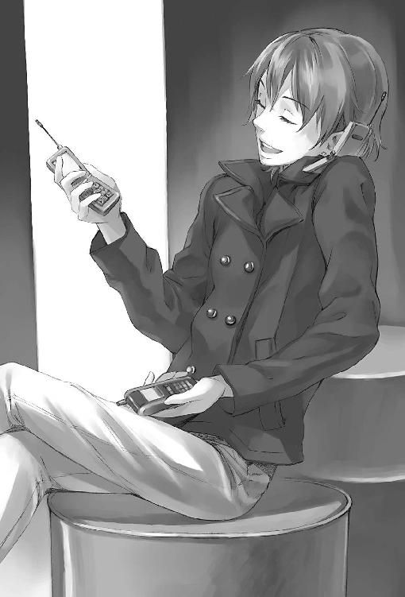
傍から聞いてると、ただナンパしてるだけに思えるのだけれど、ヒロさんの話はものすごく曲がりくねったルートをたどった上に、「あ、聞いたことあるんだ。そうピンク色の粉。うん、あ、いや、おれはやらないけど友達にすごいって聞いてさ。え、それ買った娘ってだれ？ うん、うん」と、いつの間にか薬の話に行き着いているのだ。
僕が古タイヤに腰掛けて感心して見ていると、ヒロさんは右手の携帯を閉じて、喋っていた携帯をポケットにしまい、「やあ」と微笑む。それから、左手の指の動きはそのままに、テーブルに置いた紙になにやらボールペンで書き始めた。
「女の子でもけっこう買ったやつがいるみたい、アレ。でも、だいたいみんな友達から買ったっつってんだよね。たどるのが大変」
「ヒロさん、女の人の知り合い何人くらいいるんですか？」と興味本位で訊いてみる。
「うーん？ わかんない」
と答えているうちにまた携帯が鳴って、ヒロさんは電話口でストロベリートークを始める。ほとんどひっきりなしだった。その間も指は休むことなく動いている。どうやらテーブルの上の紙は駅周辺の地図らしい。マルイ、パルコ、東急ハンズ、ブックファースト、見慣れた店の名前の間の通りに、赤いボールペンで次々と丸印が描き込まれていく。
「ふぅ」
ようやく一息ついたヒロさんは、携帯をテーブルの上にずらずら並べて（三つだけではなかった、ポケットからさらに二つ出てきた）、背伸びをし、缶コーヒーを一口。
「これが女子高生用、こっちが奥様用、これは落としてる最中の娘の攻撃用、んでこれが、あんまり好みじゃない娘からの防御用」とかなんとか、それぞれの携帯をいちいち説明してくれた。攻撃用？ 防御用？
「ヒモっていうかジゴロみたいですね......」
ちょっと圧倒されてしまう。
「ヒモとジゴロのちがいってわかる？」
そう言い返されて、僕は首を傾げてしまう。
「ヒモはいちどきに特定の一人だけなの。ジゴロは同時に三人以上愛せないといけない。おれなんか、まだ小僧だから、おそれ多くてジゴロなんて名乗れないよ」
「はあ」複雑な世界だなあ。「同時に二人はなんていうんですか？」
「同時に二人のやつは、たいがい女に刺されて死ぬから、名前はついてない」
「なるほど」いや、納得するなよ僕。
「しかし、わかんないなあ、これ。四代目が手こずるのも無理ないよ」
地図を裏返してヒロさんは言う。そこにも、赤ペンで書かれた女の子の名前と数字がずらーっと並んでいた。
「なにがですか」
「安すぎるんだ。それに、知り合いから買ってるやつばっかりで、値段が安定しない。おかしいよ、こんな薬。こんだけ広まってるのに」
じゃあこの数字は値段なのか。相場がわからないから、安すぎるというのは実感できないけど、ゼロがいくつかあるのはわかった。無料で譲ったってことだろうか。
「あの、こっちの地図は」
「あ、それは買った場所。二重丸は直売人くさいとこ」
僕は呆気にとられて、真っ赤になった地図を見つめる。トシさんを捜すと宣言してから、たったの三日。ヒロさん一人と携帯電話五つだけで、ここまで情報が集まるものなのか。
「藤島中将も来てたのか。ちょうどいい」
後ろから声がした。振り向くと、少佐が小山のように巨大な登山用バックパックを背負って立っている。
「ちょっと下ろすの手伝ってくれ、壊れ物なんだ」と言うので、手を貸した。苦労してバックパックを地面にそっと下ろす。
「二日徹夜しましたよ」
嬉しそうに言って、少佐は荷物から次々と小型のカメラみたいなものを取り出して木台の上に積み上げる。カメラといっても、手のひら大の黒い立方体の一面に丸くレンズの窓がついているだけ。同じ形のものが、合計で二十個はあるだろうか。
「だいぶ張り切ったなあ少佐」
「カメラは前から作ってたんで。認識アプリのが時間食いました。こういう特定人物を捜す任務はこれまでなかったんで、ずっとお蔵入りだったのですよ、ふふ」
「こんなにいっぱい、なにに使うんですか」
「ちょうどいい、藤島中将は実に特徴のない顔をしているから実験に使おう」
さらりと失礼なことを言われた気がする。少佐は厨房の電源を借りてノートＰＣをつけると、いくつかのカメラを弧状に並べて僕の顔を撮影した。次に、カメラの一つをヒロさんに持たせて高く持ち上げさせ、ＰＣの画面を確認しながら「もうちょい下に向けてください。はい。あ、そこでＯＫ」と調整し、それから僕に言った。
「一度、外に出てから、ここにまた入ってきてくれ」
なにをやってるのか全然わからないまま、僕は少佐に言われた通りに一度店の前まで出ると、また二人のいるところに戻ってみた。ビルの陰に入ったとたん、少佐のＰＣがけたたましい警報音を響かせた。僕は驚いて後ずさり、ヒロさんもびっくりしてカメラを落としそうになる。少佐一人がにんまり笑って膝を叩いている。
「うんうん。さすがに直撮りは精度がいい。藤島中将、今度はうつむき加減で入ってきてくれ」
その後も少佐の指示で、下を向いたままとか横歩きとか首をぐるぐる回しながらとか、色々と馬鹿みたいな真似をしながら外と勝手口前とを行き来した。そのたびに少佐のＰＣは警報をわめきたてる。しまいにはミンさんに「うるせーぞ黙らせろそれからコンセント勝手に使うんじゃねえ！」と怒られる始末。でも、ミンさんがカメラに映ってもＰＣはなにも言わなかった。
それでようやく僕にも察しがつく。
「僕の顔、見分けてるんですか、それ？」
「その通りだ。至近距離から六面撮影すればこれくらいの精度になる。夏ぐらいに研究室に行ったら、ちょうど教授が実験してたんでアイディアだけもらってきた」
「へえ、面白いなあこれ」とヒロさんはカメラとＰＣの画面をかわりばんこにのぞき込む。いや、面白いとかそういうレベルじゃないんじゃないか？ こんな技術がありながら、なんでこの人、ニートやってんの？
「これ仕掛けてトシ見つけるわけ」
「あんま予算ないんで設置場所かなり絞らないといけませんが。かなり電池食うんですよこれ」
「つーかトシの顔どうすんの。最初に撮らなきゃだめなんだろ？」
「アリスの部屋の防犯カメラ、あれ履歴は一ヶ月にしてあるんでまだ残ってます」
あれも少佐が作った設備だったのか。なんかもうどんどん話が大きくなっていくので、僕は馬鹿みたいに口を開いて見ているしかない。
「ところでテツさんは？」
大量のカメラを鞄にしまいながら少佐が訊いた。
「警察行ってるはず」
「ああ、そっちの捜査資料もあれば設置場所がかなり絞れますね」と少佐はこともなげに言う。
「け......警察にも知り合いがいるんですか？」
僕の驚いてる顔がよっぽど面白かったのか、ヒロさんは苦笑した。
「あいつボクシング始める前はよく世話になってたからね。たしか少年課の人がジムに泣きついて、引き取ってもらったんだって。ボクシング始めればケンカしなくなるじゃん？」
けっきょく今はパチプロだけど、とヒロさんは落ちをつける。そんな話聞いたことない。それに、警察の捜査資料はさすがに手に入らないだろ......
と思ってたら、七時を回った頃に『はなまる』に姿を現したテツ先輩は、Ｔシャツの腹からノートを取り出して、少佐とヒロさんの前にどんと置いた。
「テツ、ヤニ臭いよ」
「しょうがねえだろ。スロ屋より煙草臭いのなんて警察署くらいだよ。それより、地図でまとめたからそっちのも見せろ」
「警察も全然進展してないですね」と少佐がノートをぱらぱらめくりながら言う。横からのぞき込むと、鉛筆書きの字がびっしり。テツ先輩がメモったのだろう。ほんとに警察の情報を聞いてきたのか。
三人はぼろい木の台を囲んで、あれやこれやと囁き合いながら、ヒロさんが赤を入れていた地図に、さらに警察から持ってきた資料の記述を書き加え始めた。
もう、僕が首を突っ込む余地はなかった。
そのとき僕がなにをしていたのかというと、ラーメン屋の厨房で丼を洗っていたのである。ミンさんに言われてやってるのではなく、あまりにもいたたまれないので、自分から手伝いますと言ってしまったのだ。
「──これ、四代目にも回した方がいいかなあ」
「あいつの組の力借りるの気にくわないんだけど」
「でも情報は共有した方が効率的でしょう」
「おれコピーして持ってくよ。ついでにキャバクラいくつか回ってくる、直で話したい娘も何人かいるから」
「じゃあテツさん、カメラ設置手伝ってくれませんか」
「おう」
洗い場で聞き耳を立てている間に、てきぱきと話がまとまり、三人は散っていってしまった。入れ替わりのように客が何人も続けて入ってきて、僕は騒がしい湯煙の中にひとり残された気分になる。
よっぽどしょぼくれた顔をしてたのだろうか、ミンさんがぽんぽんと僕の肩を叩いた。
「......なんか......三人ともやけに慣れてるように見えるんですけど」
「あー、昔からあんなことやってるから、あいつら。アリスの手伝いとかでね。あれだけやれんなら働けよ、って思うだろ」
同感だった。
「それができないのが、ニートたるゆえんなのだよ」
アリスはベッドの上で自慢げに言った。いつもの３０８号室、冷房でぎんぎんに寒いサイバールーム。その日のパジャマ娘はまずまず機嫌が良さそうだった。ちょっとだけ麺の入った醤油ラーメンも、文句を言わずに食べている。
「世の中の、ニートではない人間のほとんどは、人間の資質がスカラーではなくベクトルであるということを理解できないのだね。口では、だれにだって長所はあるだの人それぞれだの可能性は無限だのと言っておきながら、いざ実際に評価しようとすると一次元の世界しか想定できない」
「......ミンさんも理解できてないってこと？」
「マスターはちがう。だれにだって長所はあるとか人それぞれだとか可能性は無限だとかくだらないことは言わないからね。ぼくらの宿命をわかった上での、純粋に実利面だけを考慮した説教だよ。しかしそれは少数派だ。ほとんどの人間は、可能性が無限であるということがほんとうはどういうことなのか理解し得ない。自分が乗っている船の後ろの方で、自分とは逆向きにものすごい力で漕いでいる人間がいることなんて想像もつかないのさ。そうだろう？ だってそっちを向いていないんだからね」
まあ......それはそうかもしれないけど。
「だから、きみみたいなのが方向性をもたらすと、ああなるのだよ。テツや少佐やヒロは、ほんとうはトシを助けたかったのかもしれない。一緒に丼を囲んでサイコロを振り合った仲間なのだからね。ハードボイルドを気取っているから自分からは腰を上げられないんだ。きみが助けを求めるのを待っていたのさ」
あのとき、三人の目に浮かんでいた燃え立つような生気を思い出す。アリスの言う通りかもしれなかった。
「他人事のように言っているぼくも、なにを隠そう同類だからね。ぼくらニートが苦しむ理由というのは突き詰めれば一つしかない。なにをすればいいのか、わからないのだよ」
アリスは丼を置いて、力なく箸を握ったまま、さみしそうな目で虚空を見つめる。
「神様は洪水の後に、すべての生命に四つの塩基でもって祝福の絶対命令を刻んだ。知っているだろう、『産めよ、増えよ、地に満てよ』だ。ぼくらは──それを書き忘れられたのさ」
冗談にしか聞こえなかったけど、まるで絶海の真ん中に浮かぶ救命ボートから三日ぶりの太陽を見上げたときみたいなアリスの微笑みを見ていると、とても笑う気にはなれなかった。
「......でも、きみだってそうだろう？」
アリスが言う。膝を立ててその上に丼を載せ、スープの湯気の向こうから僕を見つめて。
「なにをすればいいのか、わからないんだ。だから、知ってもどうしようもないことを、それでも知ろうとして、もがいて、もがいて、もがいてるんだ」
アリスの言う通りだった。だから僕はなにも答えなかった。
「どうしてだろうね。どうしてぼくらは、もう失われてしまったものにしか目が向けられないんだろう」
そこでアリスの言葉は途切れた。箸を持ち直して、しばらく丼に集中する。一本ずつ麺をすするかすかな音。ネギを噛む音。大量の機器のファンが回る音。
僕が立ち上がって冷蔵庫からドクターペッパーを持ってきて、アリスの目の前に置いたとき、ちょうどアリスはちゅるちゅると麺の最後の一本を食べ終わるところだった。
「きみもこれに関してだけは気が利くようになったなあ」
アリスは笑ってプルタブを起こす。僕はベッドの足下にしゃがみ込んで膝を抱えた。
「他になにも能がないしね。いいよ、一生アリスにドクターペッパーを運んで過ごすよ」
自嘲気味の冗談のつもりだったけれど、口に出してみると自分でもそれが本気に思えてきて、寒気がいっそうつのった。
「ナルミ」
呼ばれて僕は顔を上げる。
アリスが、くいくいと手招きしている。......え、なに？ そばに寄れってことだろうか。僕はいぶかしく思いながらも、膝立ちになる。
「よしよし」
頭なでられた。
「な」なにをする。僕は思わず跳び退いていた。
「その反応ははじめてだな。ヒロは喜ぶし、四代目とかはいやそうな顔はしても逃げないのだけれど」
「いや......あの、その、男の人にあんまそういうことむやみにしない方がいいですよ？」
「ん？ どうしてだい？」
どうしてって。うまく説明できないけど。
「能がないなどときみが言うからじゃないか。ぼくの話を聞いていなかったのかい。人間にはだれでも長所があって無限の可能性があるというありがたーい話をしていたのに」
いや、それくだらないこととか言ってなかった？
「でも、きみがなにかできたとしても、きみを誉めてくれる人はもういない」
アリスの静かな声で、僕の全身が凍りつく。
入り口脇の壁に背をくっつけたまま、僕はずるずると床に崩れ落ちた。
「きみにだってベクトルはある──けれど、その指し示す先には、もうなにもない。たどり着けた場所には、墓しかない。だから、せめて、ね」
アリスはベッドから下りて、僕に近づいてくる。彼女が少し腰をかがめただけで、床にへたり込んだ僕と目の高さが合う。それから小さな冷たい手が、僕の髪にもう一度もぐり込んだ。
それから何日かは、なんの動きもなかった。
僕は毎日、学校帰りに『ラーメンはなまる』に顔を出したけど、とくにやることもない。ヒロさんは風俗店やキャバクラを回っていたし、少佐は勝手口前のドラム缶の席に陣取ってものすごい形相でノートＰＣに向かっていて、声をかけられる雰囲気じゃなかった。
店を手伝わせてくださいと言おうと思ったら、ミンさんは鋭く察したのか、引きつった表情を浮かべて言った。
「いや......あれだ、おまえ家事の得意な嫁さん見つけろそして台所には一生近づくな」
ひどい言われようだったけど、こないだ丼洗いをしたときに二時間で五つも割るという彩夏すら為し得なかった新記録を達成してしまった僕には反論の余地はなかった。湿った土の上にしゃがんでうつむいていると、自分の役立たずぶりに涙が出てきそうになった。
一月も残り少なくなってきた頃に、大きいニュースがあった。僕はそれを登校前に自宅のテレビで見た。中年の男性アナウンサーが、見事に抑制されたほんの１ミリグラムほどの遺憾そうな表情を浮かべてニュースを読み上げる。
「......で集団薬物中毒が発生しました。午後十一時頃、深夜営業のダンスクラブで、六名の男女が突然倒れ、......」
パルコのそばにある、僕でも名前だけは知っている有名なクラブだった。もちろん薬がなんだったのかなんてことはアナウンサーは言わない。
でも、その日の夜八時くらいに久しぶりに『はなまる』に顔を出したテツ先輩は、「フィックスだった。ああ、うん、警察で聞いてきた」とこともなげに言う。大丈夫なのかこの街の警察は。十九歳のパチプロにこんなに簡単に情報を漏らすなんて。それともテツ先輩だから、なのだろうか。
「四代目の方にもなんにも引っかからないんですか？」
少佐はノートＰＣのモニタからはまったく目をそらさずに訊く。
「警察より大勢突っ込んでるはずなんだけどな。人海戦術だから、そのうち引っかかると思うけど......俺らの絞り込んだデータだって渡してるし。にしても、薬だけこんだけ出回ってて、なんで足がつかねえんだろな」
「あのう」
僕は遠慮がちに口をはさんだ。テツ先輩と少佐が同時にこっちを向くので、ちょっと口ごもってしまう。
「......僕もそれ、手伝えませんか。人海戦術」
先輩は首を傾げる。
「四代目に言ってみれば。たぶんだめだと思うけど」
「え、ど、どうして」
「あいつ、なんかナルミのこと苦手みたいだぞ？ 二、三回しか逢ってねーのにな」
「そ、そんな」
「ってのは置いとくとして、高校生だからだめだな。あいつ、あれでけっこうまともぶってるから、学校行ってるやつは仲間にしないんだ。かたぎになれるやつはかたぎになれってね」
そうか。僕はニートですらないんだもんな。がっくり肩を落とした僕に、テツ先輩は不思議そうな顔をする。
「なんだよ。一人増えようがなんも変わんないよ。ナルミはクライアントなんだから、なんもしないでどーんと構えてろどーんと」
それじゃ意味がないのだ。アリスに全部任せて、ドクターペッパー運びだけやらされているのと、なんのちがいもない。だれの手を借りてもいいけれど、僕が、この僕が、この手で、彩夏の飛び降りた理由を見つけ出さなきゃいけない。僕が見つけ出したと自分に言い聞かせなきゃいけない。彩夏のためになにかをしたという実感で、この虚しさを埋めなきゃいけない。
たとえ埋まらないとわかっていても。
埋まらないのだ。だって、彩夏はもう喋ることも笑うこともできないのだから。彩夏になにかしてくれと頼まれたわけじゃないのだから。彩夏はなにも言わずに、僕になにも打ち明けてくれないままに、飛び降りてしまったのだから。
彼女にとって、僕はたぶん、その程度の存在だったんだろう。
今さらどうしようもない。
僕のうじうじした思考を断ち切るのは、いつもの『コロラド・ブルドッグ』の着メロだった。少佐もテツ先輩も立ち上がる。でも、今回は鳴っているのは少佐の携帯だけだった。
『ぼくだ。少佐、今日はレコーダーは持ってきているかい』
レコーダー？
「持ってきてるが。なにに使うんだ」
その後、アリスと少佐は電話越しにしばらく言葉を交わした。電話を切った少佐は僕らを見回して言う。
「四代目のとこのを刺した売人が見つかったそうです。組の直営店で飲んでるとこを押さえられたって。ナイフ抜いて暴れたとか」
僕もはっとして立ち上がった。ついに、売人が見つかった。動き出したのだ。
「アホかそいつは。平坂組の縄張りくらい知っとけよ」とテツ先輩。
「テツさんとヒロさんが調べた中に入ってたんですよ、その店。灯台下暗しというやつですか」
「で、アリスはなんだって？」
「尋問を聴きたいから録音してこいって」
「ああ、それでレコーダーか。でも、もう四代目がボコってる最中じゃね？」
「四代目もまだその店には着いてないらしいんで、急げって」
「さっさとしねえとあいつボロ雑巾にしちまうぞ。仲間に手出したやつには容赦ないから」
テツ先輩の言葉に、僕はぞっとした。
「自分、今日は歩きなんですよね。秋葉原から直で来たから......」
「ナルミ、自転車だろ。後ろに乗っけてけよ」
え？
「四代目の手伝いしたいんだろ。話してみれば」
「でも」
「いいから行けよ。じっとしてらんないんだろ？」
その通りだった。どうしてだろう、テツ先輩は僕の考えてることがみんなわかるみたいだ。それとも、僕のしょぼくれた顔がわかりやすいだけだろうか。
「よし行こう藤島中将。飛ばしてくれ」
少佐が僕の尻を鞄で思いっきりひっぱたいた。
『クラブ・ハプロイド・ハート』というその店は、東急プラザの裏側の飲み屋ばかりが並ぶ通り、こぢんまりしたビルの地下にあった。狭い下り階段の口の頭上に筆記体の黄色いネオンサインが掲げられ、その右下に、あの揚羽蝶の代紋がプリントされたシールを見つける。直営店っていってたけど、ほんとに平坂組が経営してるのか。ニートが集まってやくざごっこしてるだけかと思っていた僕は、平坂組のことがよくわからなくなる。なにせ先月まで暴走族だと勘違いしていたくらいだ。
「外で待機するか、藤島中将」
「ここまでアシに使っておいてそれはないです」
こういう店は入るのがはじめてなので緊張する。踊り場でしゃがみ込んで携帯をいじっていた二人の若い男が、通り過ぎる少佐と僕をまるで動物園から逃げ出したダチョウでも見つけたみたいな目つきで凝視する。
階段のどん詰まり、分厚くて重い扉を開くと、中は床も壁もメタリックな塗装を施された短い通路になっていて、左手にカウンター、奥にもう一つ扉がある。ＳＦ映画に出てくるエアロックみたいだ。かすかにシャカシャカいうダンスビートの高音部が聞こえる。
「あのう、高校生の方はぁ、入店お断りしてるんですけれど」
おかまっぽい黒のメッシュのセーターを着たカウンターの男が言って、僕をじろりとにらみ、それから、夜のクラブにはいかにもそぐわないアーミーファッションの少佐を頭のてっぺんからねめ回した。そういえば僕は学校からそのまんま来たので制服だった。
「いや自分らは客じゃない。壮一郎に呼ばれて来た」
少佐はしれっと嘘をつく。
「はあ、壮さんにですか」
「ついさっきトラブルがあったろう、その関係で──」
「俺がいつおまえらを呼んだんだよ」
鋭い声がして、少佐は二センチくらい跳び上がった。入ってきたばかりの扉を振り返ると、逆光の中に、深紅のジャケット。背後に岩男と電柱を付き従えて、四代目がこちらに歩み寄ってくる。
「そ、壮さん、お疲れさまですっ」
カウンターのおかまが頭のてっぺんから甲高い声を出す。ちらと見ると、こちんこちんに緊張して顔を紅潮させ、目だけが輝いている。
「兄貴、お疲れさんス！」
岩男と電柱は声をハモらせて僕にだけ頭を下げる。少佐は怪訝そうに僕の顔をのぞきこむ。いや、僕だってなんでこんなことになったのかよくわからないんだってば。
「なにしに来た。またアリスが余計なこと言ったのか」
「尋問の内容を聴きたいそうですよ」
少佐は肩をすくめ、手のひら大の細長いＩＣレコーダーを取りだして見せる。四代目は舌打ちした。
「そっちの園芸部はなんでついてきてんだよ」
「藤島中将はアリスの助手らしいから」
「あー、もう、わかったよめんどくせえな」四代目は僕と少佐を押しのけてカウンターに顔を突っ込む。「迷惑かけたな。裏にうちのもんいるんだろ」
「は、はい」
奥の扉を開けるとき、四代目が振り向いて言った。
「園芸部、せめてブレザー脱いでネクタイはずせ」
店内は異次元空間だった。ちょうどスローテンポのナンバーがかかっている最中で、奥のステージだけが黒海の夜明けみたいな陰気なオレンジ色に浮かび上がって、色違いのシャツを四枚くらい重ね着した変なファッションのラッパーが、聴いている人間の心を落ち着かなくさせる六連符で低くつぶやいている。リズムに合わせて暗闇の中で人の頭が揺れ、かすかな光をアクセサリやグラスが照り返してきらめく。
先頭が四代目、岩男と電柱、僕、最後尾に少佐という奇妙な一行は、黒い海の中を人の背中をかき分けて奥へと進んでいく。
「あ、壮くん」
「やだ壮くん久しぶり！ こんな時間にいるなんて珍しいね」
仕事帰りのＯＬらしき女の人の集団に四代目が囲まれてしまった。
「悪いけど今忙しい。後で」
「えー」
「ねえさっきすごかったんだよ、頭おかしいのがナイフ持って暴れてさ。超怖かった」
「でもライヴ中止にならなくてよかったよ。今日のゲストＤＪ、もっさんだよ聴いていこうよ壮くん」
岩男が歯をむいて威嚇し、できた隙間に僕と少佐が続く。女の人の不審そうな視線が痛かった。その後も五メートル歩くごとに襲ってくる女の子を軽くあしらいながら、螺旋階段の陰にある目立たないドアにたどりつく。STAFF ONLYの表示。
ドアを開けた瞬間、廊下の奥の方から奇妙にねじ曲がった悲鳴とも笑いともとれない男の声が聞こえ、僕の背筋に寒気が走った。
金属製の棚や木箱、積み重ねられた丸椅子。コンクリートむき出しの壁に隙間なく貼られたペプシコーラのポスターは色あせて年季を感じさせる。広い倉庫だった。来るまでの廊下の途中にいくつもドアがあったので、共用倉庫かもしれない。
「お疲れさんス！」
「お疲れさんス！」
代紋入り黒Ｔシャツの数人が後ろで手を組んで四代目に頭を下げる。
「兄貴もいらっしてたんですか」
岩男の後ろに隠れていた僕も目ざとく見つけられてしまった。
倉庫の壁際の床に、その男は電源コードで縛られて転がされていた。ダークグリーンのフードつきトレーナーに薄汚れたダボパンツ。ぼさぼさの髪の間から、ゴミ捨て場をあさる鴉みたいな眼がぎょろついている。肌も唇もがさがさに荒れていて年齢はよくわからない。たぶん若いんだろうけど。
「かなりいっぱい持ってましたよ」
メンバーの一人が、四代目にひとつかみのビニル袋を差し出す。小さな袋に小分けして入れられた錠剤だった。僕が見たのよりも色が真紅に近かったけれど、羽の刻印とＡ．Ｆ．のイニシャルには見憶えがあった。
「最近、出回る量が増えてるな」
「在庫一掃セールかもしれませんね」
「ぉ、お、ご、」
倒れていた男が身をよじりながら四代目の脚にからみつこうとした。黒Ｔシャツがその腹を蹴飛ばす。
四代目はジャケットを脱いで後ろの電柱に放ると、かがみ込んで、男の乱れた髪をつかんだ。顔をねじ曲げて自分の肩へと向けさせる。
「この代紋、わかるな？ うちのもんを刺したのはおまえだろ？」
男は答えのかわりに泡を噴く。僕は気圧されていて声も出ない。ひどくいやなにおいがそこらじゅうに漂っているような錯覚にとらわれた。
「フィックスを作ってるやつらと、どうやって連絡を取ってる？ やつらはどこにいるんだ？」
四代目の低い声。それにかぶさるように、ジャンキーの甲高い声。
「連絡なんか、取らない。やつらはそこにいるんだ。俺たちにしか見つけられない、頭に光る羽があって、歌が聞こえる、聞こえる、見える、俺たちには見える」
「寝言ぬかすんじゃねえ」
メンバーの一人が男の背中を爪先で蹴った。男は激しくせき込み、それでも喋るのをやめなかった。
「おまえらに見えないだけだ、光る羽。俺たちには見える。ゴミどもの中で、歌が導いてくれる。聞こえないだろう。おまえらクズには聞こえないだろう。ディランだ。ボブ・ディラン。『ノッキン・オン・ヘヴンズ・ドア』だ。エンジェルが俺をフィックスして」
エンジェル。エンジェルは差別しない。トシさんの言葉だ。僕は思わず、組員のでかい背中を押しのけ、男のそばに駆け寄った。顔を寄せると血反吐のにおいがする。
「篠崎という人を知りませんか。あの、この、この」
ポケットから、六人分の顔写真が載った手配書のコピーを取りだし、突きつけていちばん右下を指さす。
「この人です。見ませんでしたか」
「兄貴、寄っちゃだめだどいて」
黒Ｔシャツに襟首をつかまれ、引き剥がされる。男は手配書も、僕の顔も見ていなかった。細く絞られた声で続ける。
「あれが見えないおまえらは、あれが聞こえないおまえらはそのまま死ねばいい。殺して、こ、殺してやるよ、俺は優しいから。あいつの腹にも突き立ててやったよ、血が、ぬるくて」
メンバーがこめかみに血管を浮かせて手を振り上げた。
ぴし、と音がしてその腕が止まる。
「......壮さん」
四代目は、つかんだ部下の手首をゆっくりと下ろした。
「縄ほどいてやれ」
「なにするかわかりませんよこいつ」
「いいから。こんなクズでも裁判は必要だ」
裁判？
戒めを解かれた男は、ロボットみたいに角張った動作で立ち上がった。四代目は、男の懐から抜き取った馬鹿でかいアーミーナイフの鞘を払って刃を確かめる。
「そら。平坂組の裁判は、とあるアホの発案で中世ヨーロッパ式なんだ。神明裁判とか言ってたな。おまえが正しけりゃ神様が勝たせてくれるんだとさ」
足下に投げられたナイフを男は飢えた犬みたいに拾い上げる。僕は声をあげそうになる。
「退がっててください兄貴」
黒Ｔシャツの背中が数人がかりで壁をつくって僕と少佐を倉庫の入り口まで退避させる。
「あ、危ないですよ、な、ナイフ......」
「藤島中将、四代目なら大丈夫だ」
少佐が囁いた瞬間、ジャンキーの身体が壁を蹴って跳び跳ねた。ナイフの切っ先が空気を裂く音さえ聞こえた気がした。でも、四代目の身体はすでにそこになかった。どう動いたのかわからない。つんのめるジャンキーの背後に四代目はいつの間にか立っていて、肘が一閃し男の延髄をえぐった。倒れるとき、歯が折れる音が響いた。
うつぶせになった男の頭のまわりの床に、じわりと黒いしみが広がっていく。
「......お疲れさんス」
「お疲れさんス」
平坂組メンバーが、厳かに礼する。四代目はぴくりとも動かない男の身体を足で持ち上げて仰向けにした。顔は血まみれだった。
「園芸部。おまえ外出てろ。こっからはガキの見せ物じゃねえ」
「え......」
「兄貴、すんませんが」
僕がなにか言うひまもなく、メンバー二人がかりで廊下に押し出されてしまった。ドアが閉じる瞬間、ＩＣレコーダーのスイッチを入れる少佐と、男の髪をつかんで引っぱり起こす四代目が見えた。
僕は、蛍光灯が照らす寒々しい廊下にひとり。
やがてドアの向こうから聞こえてきたとぎれとぎれのうめき声は、ずっとずっと後になっても僕の耳にこびりついたまま落ちなかった。
廊下の隅にうずくまって両腕に顔を埋めていた僕は、ドアの開く音で顔を上げた。
少佐に続いて出てきた四代目の拳に、血がついているのに気づく。
「......あの人は？」
「わけのわかんねえことしか喋らなかったから、殺してない。まだ聞き出すことがあるからな」
まだ？ まだ殺してない？
じゃあ、聞き出すことがないやつはどうするんだ。
「少佐、これ一袋、またアリスんとこに持ってってくれ」
「成分が変わってるんですか」
「かもしれない。最近、病院行きが増えてる。少量で飛べるんでアホなガキは大喜びだけどな、どうも混ぜものが増えてるらしい」
混ぜものが増えてる。それは、ひょっとして、原材料の供給が減ってしまったせいなんじゃないのか、と僕は気づく。
彩夏が、もういないから。
少佐は四代目から受け取った錠剤入りの小さなビニル袋を僕に放った。
「藤島中将が届けてくれ。自分はいったん帰る」
「おい、ちょっと待て高校生にそんなもん運ばせんな」
少佐は四代目の方に振り向いて肩をすくめた。
「藤島中将なら大丈夫ですよ。この通り顔も背格好も目立たないの極み。たとえ皇居でテロがあったって職務質問を一度も受けずに千代田区を横断できるにちがいない」
大きなお世話だ。
「なんでおまえが届けないんだよ」四代目は舌打ちする。
「テープ編集しなきゃいけないでしょう。四代目が関節外す音とか、四代目が奥歯をへし折る音とか、四代目が腕の骨を踏みつぶす音とかは、アリスには聴かせられないから」
「おまえ、ほんとにいやなやつだな」
「そりゃどうも」
倉庫のドアから電柱が顔を出した。
「壮さん、手当て終わりましたけど、あいつ事務所に連れて行きますか」
「頼む」
四代目は廊下の奥へと歩き出そうとした。
「──あの」
僕の声に、四代目はいつもひどく敏感に反応する。まるで首筋に不愉快な羽虫がとまったときみたいに。
狼の眼ににらまれて、僕の声は途中でしぼんでしまった。なにを言おうとしたのか、自分でもわからなかった。たしか、トシさんを捜す手伝いをしに来たのだ。でも、そんなこととても言い出せる空気じゃなかった。
ここは僕が呼吸できる世界じゃないのだ。
クラブからラーメン屋に戻る途中、公園脇の歩道を自転車で走っているとき、不意にポケットで携帯が震えた。停車し、取り出した携帯の液晶画面に表示された名前を見て、僕は声をあげそうになる。
篠崎 彩夏
がしゃん、と音がした。肘と膝に痛みが走った。自転車が倒れて、道路に投げ出されていたのだ。酔っぱらったサラリーマンの一団が僕に罵声を浴びせながら通り過ぎた。それでも僕は、両手で握りしめた携帯から目をそらせなかった。彩夏。彩夏だ。そんな馬鹿な。どうして彩夏から？
アスファルトの上に這いつくばりながら、震える手で電話に出る。
「......あの」
『......お？ あ？ あ、ああ、ああ、やっぱりこの番号おまえか、あ、はは、は』
聞き憶えのある声だった。高くてかすれ気味の、男の声。
「──トシさんっ？」
『知ってるやつの番号、おまえとラーメン屋くらいしか入ってなくてさあ、かは、は』
トシさんは耳に刺さるようなけたたましい笑い声をあげる。ラリってるのだ。なんでトシさんが彩夏の携帯を？ そんなの、考えるまでもなかった。彩夏は飛び降りる前、トシさんに逢っていたのだ。
「今、今どこに──」
『なんかさあ、ビラ出回ってるんだよなあっちこっちに。墓見坂さんの顔まで割れてんの、はは、俺アリスのこと見くびってたなあ、あいつ化け物だな』
「あんた彩夏になにしたんだッ」
『なんで、こんなことになっちゃったんだろな......』トシさんの声に、湿った音が混じる。
『彩夏のこともさ。俺もさ。もっと、もっとさあ』
鼻をすすり上げる音。泣いてる。僕の声なんて聞こえていないのだ。
『もう逃げらんないのかな。俺ら......』
トシさんの声はどんどんか細くなっていく。
「どこにいるんだ、言えよ！」僕は叩きつけるように叫ぶ。僕の怒声の向こうで、トシさんがつぶやく。
『......なぁ......た......けて......くれよ......』
「ふざけんな、あんた──」
突然、電話の向こうでなにかが転がり落ちたようなやかましい音がして、僕の言葉を断ち切る。『おまえ、だれと喋ってんだ馬鹿！』別の男の声が叫ぶのが聞こえた。食器棚をひっくり返したような音がその後に続いた。
僕が思わず携帯電話を耳から離そうとしたとき、聞き憶えのある男の声が流れ出す。
『......おまえがアリスか？』
ざらついた声。
「だれ──」
訊こうとして、相手が答える前に僕は気づく。最後にトシさんに逢った日、横断歩道の手前で僕の隣に立っていた、あの男の声だ。
「あんた──墓見坂だな、どこにいるんだトシさんをどうしたッ！」
『アリスってやつじゃないのか。探偵が俺を捜してるんだろ？ おまえアリスの関係者か』
「答えろよ、あのとき連れてってなにしたんだッ！」
身を起こし、片手で自転車を引きずりながら、僕は歩き出す。まるで電話口の向こうにいるその男の首に必死にしがみつくみたいに。
『ああ、おまえ、あのとき篠崎を追いかけてた高校生か』
嗤っている。墓見坂史郎が、彩夏の携帯を通して僕を嗤っている。耳の穴から流し込まれた煮えたぎる血みたいな怒りが、僕の呼吸を圧迫した。
『探偵に伝えてくれ。見つけてみろよ。俺をつかまえてみろ。おまえたちも俺に届いたら、俺の実験は完成する』
「あんた......なに、が、したいんだ」
『おまえに説明しても無駄だ。おまえには無理だ、こっちには来られない。見たときにわかった。でもできるやつはいる。まだ大勢いる。気づいてないだけだ。俺はそいつらをフィックスする。一人でも多く連れていく』
墓見坂の声が恍惚として高まったところで、唐突に通話が切れた。
僕は親指が折れるほどに何度も何度も彩夏の番号にリダイヤルした。つながらない。電波が届かないか電源を切っている、と案内音声が冷たく告げる。
自転車に飛び乗ると、ペダルを思いっきり踏み込んだ。走りながら、なにかわけのわからないことを叫んでいたかもしれない。
「アリス！」
３０８号室のドアを引き剥がすように開けて中に飛び込む。ベッドの手前にあぐらをかいていたテツ先輩が驚いて腰を浮かせ、その向こうでアリスの黒髪が跳ねる。
「なにごとだナルミ、インタフォンの鳴らし方も忘れて──」
「トシさんから電話あった、今、彩夏の携帯をトシさんが持ってる墓見坂も一緒だ！」
アリスと目が合った。その一瞬で、通じた。アリスは口をつぐんでキーボードに向き直ると、ものすごい勢いでキーを鳴らしながら、受話器を取り上げてあちこちに電話をかけ始める。
携帯電話が発する微弱電波を捉えて、衛星でその位置を把握する探知サービス。本来なら、探知先の対象の許可が必要だけど、アリスなら。通話記録さえ割れるほどのクラッカーなら。
「ナルミ、落ち着け。とりあえず座れ」
テツ先輩が、僕の頭のてっぺんをつかんで押し潰すようにして冷蔵庫の隣に座らせた。頭ががんがん痛んで、呼吸がつらくなった。首から下が冷たいのに顔だけが火照っている。目の前でちかちかした星が飛び交い、唇の震えが止まらない。
「ゆっくり息しろ、過呼吸だ。いいか、......一、二、三」
テツ先輩の大きな手が、僕の背中をゆっくりとさする。握り拳くらいある空気の塊が喉でつっかえているみたいに感じたけど、無理矢理にカウントに合わせて息をした。最初のうち、締めつけられるようだった胸の奥が、だんだんと楽になっていく。
「だめだ。電源が切られている」
十五分くらい後で、アリスはようやくこちらに顔を向けて言った。僕は冷蔵庫の側面にべったりと背中をくっつけて、まだ荒い呼吸をしていた。テツ先輩が買ってきてくれたスポーツドリンクを一口。
「ナルミ、大丈夫かい」
「......ぅ......」
うん、と答えようとしたけど、声がうまく出せなかった。テツ先輩はベッドの端に腰掛ける。
「彩夏の携帯は忘れてたな。くそ」
「ぼくだって見落としていたさ。もっと早く気づいてれば」
アリスは悔しそうに顔を歪めて、親指で下唇をこする。
「でも通話記録で、少なくともこの近辺にまだいることだけはわかったよ」
「そろそろケツまくって逃げるんじゃねえのか」
「どうかな、たぶん、薬を精製する施設がこの街にあるから、この界隈を中心に流通しているのだと思う。全部投げ出して逃げるにはそれなりの覚悟が要るだろう。......ナルミ、トシはなんて言ってたんだ？」
問われて、僕はぼんやりとベッドの奥のアリスを見た。自分への質問だということが、しばらくの間はうまく理解できなかった。
トシさん。トシさんは、電話で、なにを喋っていたっけ。ビラが出回ってるとか。もう逃げられないとか。それから。それから──
「......助けてくれ、って、言ってた」
テツ先輩の表情が、ほんのわずか、変わったのがわかった。
「ほんとか？」
僕はうなずく。
あの、最後の一瞬。トシさんはたしかに言った。『助けてくれ』。
「アリス。わかったよ」
僕の言葉に、黒髪が揺れる。
「トシさんがなんで僕にフィックスを見せたのか、わからないって言ってたよね」
「......うん」
「あの日、トシさんは、彩夏に金を借りに来たわけでも、アリスの仕事をスパイしに来たわけでもなかったんだ。ほんとは」
確証はなかった。でも、僕にはわかった。
「ほんとは、助けてくれって言いに来たんだよ。だけど、言い出せなくて、だれかに、だれでもいいから、気づいてほしくて、それで、それで......」
トシさんは墓見坂にも助けを求めたのだろうか。そしてあの男は、手を差し伸べるかわりにピンク色の錠剤を渡したのだろうか。
なんて馬鹿なんだろう。あのときに言えばよかったのに。それを、なんで今さら。「もう遅いんだよ。馬鹿じゃないのか。もっと早く言えよ、あのときに！ 彩夏が飛び降りる前に！ なんで言ってくれなかったんだよ！ なんで僕になんも言わずに飛び降りたんだよ、なんで、なんで......ッ」
そのとき僕は、怒っていた。トシさんに対しても、彩夏に対しても。その二つが頭の中でごちゃごちゃになって、勝手に言葉として漏れ出ていた。でもそれを止めることはできなかった。今さら助けてくれだって？ あんたのせいで彩夏は植物になっちまったんじゃないか。ふざけるな。ふざけるな！
冷え切ったフローリングに手をついて、嘔吐するみたいにして僕は言葉を吐き続けた。
言葉にならない叫びも吐き出しきって、胃液すら出てこないようになると、じわじわと押し潰されるような沈黙がやってきた。
氷結した部屋の中で、最初に動いたのはテツ先輩だった。ベッドから立ち上がると、僕の隣を通り抜けて玄関に向かう。
「やっと本気かい」
アリスが無表情な声で問う。先輩はドアノブに手をかけ、振り向かないままで答えた。
「馬鹿、ずっと本気だよ。急いでなかっただけ」
「そうか。早くしないと、トシはエンジェルに喰われるか四代目に殴り殺されるからね」
「わかってる」
ドアが閉まる音が、僕の奥歯にじんじんと響いた。
アリスはそのときに限ってはなにも言わなかった。ドクターペッパーさえ自分で冷蔵庫から出して飲んだ。僕の隣にしゃがみ込んで。パジャマの生地越しに、僕とアリスの腕が触れ合った。体温はひどく遠かった。
次の日の放課後。
ひとりで学校の花壇の隅にかがみ込んで土をいじりながら、もう『ラーメンはなまる』に行くのはやめようかな、とふと思った。なにもやることがないだけじゃなくて──なんか、僕は邪魔してるだけみたいな気がしていた。
たとえなにもできなくても、ひとりでできることを探した方がいいんじゃないだろうか。ビラを持って一日中街をうろつくとかでもいい。ドラム缶の上に座ってなにもせずに待っているだけだと、圧し潰されてしまいそうだった。
僕にできること。
僕にしか、できないこと。
そんなものあるのだろうか。
腐った根をシャベルでほじくり返していると、胸ポケットからなにかが土の上に落ちた。
「あ......」
小さなビニル袋。赤い錠剤が四つ。彫り込まれた天使の翼。
昨日、四代目から預かったエンジェル・フィックスだった。そうだ、もともとこれをアリスに届けるために戻ったのに、忘れていた。
僕は袋を拾い上げて、しばらく冬のぼやけた太陽にかざして見た。
中庭を、ランニング中の野球部員が走り過ぎる。テニスラケットを持った女の子が二人、それとすれちがう。僕が今、天使を呼べる魔法の薬を持ってるなんて、だれにも思いもよらないだろうな。こんなちっぽけな薬のせいで、もう何人も死んでいるのだ。
こんな薬のせいで、彩夏は。
また唐突に怒りが湧いてきた。僕はビニル袋を握りしめ、シャベルを土にざくざくと突き刺しながらこらえた。これはただの薬だ。奇形の芥子の実から抽出して調整して丸く固めただけのものだ。叩き潰して粉にして燃やしてやっても、彩夏が戻ってくるわけじゃない。
目をつむり、ゆっくりと息を吐く。
それから、ビニル袋をまた目の高さに持ち上げ、もう一度自分に言い聞かせる。これはただの薬物だ。
「......ん？」
なにか、違和感があった。
正体はわからない。僕はビニル袋を高くかざしたまま、何度も裏返したり向きを変えたりしてみた。なんか......変だ。なにが変なのかわからないけど。
「藤島くーん！」
女の人の声が僕の思考をぶったぎった。僕はあわてて薬をポケットに突っ込む。校舎の方から、真っ白なスーツにタイトスカートの小百合先生が駆けてくるところだった。
「あのね、ごめんね、このへんの鉢植え、脇にどけてくれるかな」
先生は、花壇の端に並んだ花の咲いていない鉢を指して言う。
「なんか......あるんですか？」
訊き返す僕の声は、まだちょっとぎくしゃくしている。
「卒業アルバムの撮影ね、屋上閉鎖しちゃったでしょ。だから中庭で撮ることになったの。それで場所空けなくちゃいけないから」
ああ......そんなことか。
「あのう、ひょっとして僕も邪魔ですか」
小百合先生は苦笑いする。
「そうね、今日は園芸部はできないかな」
とにかく立ち上がって、どこかへ歩き出せ。しゃがみ込んでくだらないことを考えるのはやめろ。だれかがそう言ってるみたいだった。僕はため息をつくと、腰を上げて膝の土を払った。小百合先生が手伝ってくれたので、鉢植えを玄関口まで残らず運び入れるのも、ほんの五分で済んだ。
けっきょくその日もラーメン屋に行くことにした。届け物を忘れたまま音沙汰なくなるわけにもいかない。
だれかに薬を渡したらすぐに街にでも足を伸ばすつもりだった。でも勝手口にはだれの姿もない。さすがに時間が早すぎたからだろうか。でもアリスに直接渡すのは気が引けた。きっと僕の顔を見ただけでなにか読みとって辛辣なことを言ってくるにちがいない。
しかたない、だれか来るまで待つかと思ってドラム缶に腰を下ろそうとしたら、スープの仕込みをしていたミンさんが、「みんな上に集まってるぞ」と教えてくれた。
みんな？
３０８号室、ＮＥＥＴ探偵事務所のドアを開けると、奥から聞き憶えのある男のだみ声が聞こえてきた。
『......俺たちにしか見つけられない、頭に光る羽があって、歌が聞こえる、聞こえる、見える、俺たちには......』
ベッドの両脇にヒロさんとテツ先輩が立ち、アリスの正面には少佐が座っている。シーツの上にはピンクの錠剤が入ったビニル袋が大量に積まれ、その上で声を吐き出し続けているのは、少佐のＩＣレコーダーだった。『クラブ・ハプロイド・ハート』で捕まった売人の声だ。
「警察にパクられたやつもほとんど同じこと言ってるな」テツ先輩がつぶやく。
「頭に光る羽をつけていて、ボブ・ディランをかけているからすぐに見つかる......やれやれ、そんな目立つやつが街にいたらとっくに平坂組が見つけているはずだね」
アリスが頭を振って、レコーダーを止めた。
「ナルミ、なんで玄関にぼうっと突っ立っているんだ。ミーティング中なんだからドアを閉めて、それからドクターペッパーを持ってきてくれたまえ」
「あ......うん」
会議中か。壮絶にお邪魔虫だな、僕。早く出よう。
ドクターペッパーの缶と一緒に、エンジェル・フィックスの入った袋をアリスに渡す。
「ん？ ......ああ、昨日四代目から預かったやつか。まったくきみってやつはよくよく重要なことをするっと忘れるたちなのだね」
「うん......ごめん。じゃ、用事それだけだから」
部屋を出ていこうとした僕のダッフルコートの裾を、少佐が引っぱった。
「どこに行くんだ藤島中将。作戦会議中だぞ」
「いや、だから......邪魔でしょ？」
「いいから座りたまえよ、きみはぼくの助手だろう、きみが帰ってしまったらこのドクターペッパーを飲みきった後の二本目をだれが持ってくるんだ」
アリスはいつもとまったく変わらない傲岸な口調で言う。僕の中で色んな言葉が渦を巻いた。でもけっきょく、下唇を噛んでそれを押し殺し、脇にどいてくれた少佐の隣のスペースに腰を下ろす。狭い。人が五人も集まれる部屋じゃない。
たとえ邪魔なだけだとしても、ミーティングを聞いていれば、なにか思いつくかもしれないな、と考え直す。なにか、僕にできることを。
「暗号とか、隠語なんじゃないの、羽とか歌とかさ」
ヒロさんが資料をぱらぱらめくりながら言う。
「四代目に腕の骨踏み折られながら、そんなフカシ続けられねえだろ。それに、五人パクられて同じこと言ってるんだぜ」
「売人に共通点がない......というか、こいつら売人じゃないですね。錠剤の状態で買った、第一次顧客というだけで」
「無料でもらっている者もいる。営利団体じゃないのだね、おそらく実験のつもりなんだ」
「じゃあ、ほんとに顔に光る羽があって音楽流してて、それが目印でヤク中が集まってくるんだけど、ヤク中以外にはわからないわけ？ 嘘だろ？」
みんなの話で、だいたいのところが飲み込める。いまだに、製造組織に直結する人間が捕まってないのだ。こないだ四代目が半殺しにした男も、定期的に買って大量にばらまいていたというだけで、作っている連中のことはなにも知らなかったらしい。
そんなことってあるだろうか？ たとえば警察や平坂組が、薬を買う振りをして接触すればすぐに見つかるんじゃないのか。
「おれも、フィックス買ったことのある娘たどってるんだけどさ、つかまんないんだよね」
「なにかサインがあるはずですよ、定期的に供給されてるのに、囮捜査には引っかからないんだから」
「だから羽と歌だろ」
「意味不明ですよそれ」
ヒロさんと少佐とテツ先輩の話し合う声を聞きながら、僕はアリスの足の間に大量に散らばったエンジェル・フィックスの袋をじっと見つめていた。あのとき──学校の花壇で覚えた違和感が、再び僕をとらえつつあった。なんだろう、この感覚は。なにが引っかかってる？
僕は無意識に、袋の一つに手を伸ばしていた。アリスがそれに気づき、「ナルミ？」と声をかけてくるけど、かまわず取り上げる。蛍光灯にかざす。裏返して、もう一度裏返す。そのとき、ようやく気づいた。中の錠剤じゃない。違和感の正体は、袋そのものだ。
「アリス」
自分の声が震えているのがわかった。
「──水性ペン、ある？」
「水性ペン？」
「水性インクならなんでもいい、あったら貸して」
いつの間にか、他の三人も黙り込んで僕を見ている。アリスから赤ペンを受け取った僕は、錠剤を取り出した後の袋を壁に押し当てて、隅からペンで塗りつぶした。
「あ」「ああ......」
驚きの声がだれのものだったのか、僕にわからない。あるいは僕自身の声だったのかもしれない。赤い斜線でほとんど隙間なく塗りつぶしたはずの透明な袋──そこに水性インクを弾いて浮かび上がる、一対の広げた翼の図案。
「これ......ほとんど透明なインクで、描いてあるのか」
少佐がつぶやき、僕はうなずく。
どの袋もそうだった。見えないインクで描かれた同じ図案が、水性インクの空白として浮かび上がる。錠剤に刻まれたものと同じ翼と、それに向かい合う反転形の片翼。天使の両翼。
「ナルミ、おまえよくこんなの......気づいたな......」
「......でも、これがどうしたの」
ヒロさんが訊ねる。
「光る羽ですよ。だから警察にも平坂組にも見つからないんだ」
僕はそう答えて、赤ペンを入れていない薬の袋を見つめる。こんなの、よほど近くで光に透かしてみなければわかるはずがない。
「これが？」
売人の証言。『頭に光る羽が見える』。『歌が聞こえる』。
それが、薬でラリった連中の、幻覚ではなく──
すべて、ほんとうのことだとしたら。
同じインクで、フェイスペイントでもしているのか、あるいは帽子にでもプリントしているのかもしれない。そして、ボブ・ディランをエンドレスで流すウォークマン。ポケットいっぱいの赤い魔法の薬。
「でもなんで買うやつはこれで気づけるんだよ、おかしいだろ」
「エンジェル・フィックスの薬効に、色覚と聴覚の極端な鋭敏化が挙げられているのだよ。そうだね？ ナルミ」
アリスが、かわりに答えてくれた。僕は黙ってうなずく。トシさんはあのとき言っていた。
『止まって見える』。『１ドットの動きもわかる』。『目をつぶっても音だけで勝てる』。
フィックスすれば──天使が、見えるのだ。
「薬キメてアタマが尖ったやつが、見つけてくれるのを待つのか。そんな馬鹿な売り方ってあるか？」
「売り方としてはたしかに馬鹿げているね。でも、もし、その供給手段そのものが目的だったとしたらどうだい？」
「......なんだそれ」
「実験だよ。薬効がどれほどのものかを確かめるための人体実験だ。この街の喧噪の中からでも、天使の羽と歌を見つけ出すほどの信者を、創り出せるか否か──」
アリスは足下のフィックスの袋を一つかみ持ち上げて、またシーツの上にばらまく。
「──そうして彼らの実験は成功した」
テツ先輩は、口を半開きにしたまま言葉を失う。
しばらくの沈黙の後で、ヒロさんがそっと言った。
「......ぜんぶ推測だろ？」
「もちろん」
アリスは錠剤の山に目を落としたまま、答える。
でも僕にはそれがほとんど真実だとわかる。だって、墓見坂が同じことを言っていたのだ。
「......で、どうするんですか？」
少佐の言葉を最後に、部屋の中から言葉が奪い去られた。
凍った石油を窓から流し込まれたような、重たい沈黙だった。なぜって、その場にいた五人ともが、次に言うべき言葉を知っていたからだ。たぶん。
そのとき僕が感じていたのは、全身を締めつけるほどの既視感だった。この場面は知っている、と思った。何千年も、何万年も前から知っている。そんな気がした。それはもちろん錯覚なのだろう。
でも、僕は今でもこう思う。ひょっとしたら僕は、生まれる前に神様のメモ帳の自分のページを見たのかもしれない。そこに書いてあった他のことはみんな忘れてしまったけれど、この場面で自分が言うべきせりふだけは、憶えていたのかもしれない。
だって、そのときその場所に僕がいた意味があるとしたら──
他に、ないだろう。
だから僕はその言葉を、口にした。
「僕が薬を飲むよ。それで売人を捜す」
隣で少佐が息を呑んだ。
アリスは、ただじっと僕の目を見つめてきただけだった。
テツ先輩は息を吐き出してＰＣラックの段に腰を下ろした。
ヒロさんが、ようやく口を開く。
「ナルミ君に、そんなことさせるわけには......」
「じゃあ、他のだれがやるんですか？」
僕はぴしゃりとヒロさんの言葉を遮る。
「僕以外に、この袋の絵を見つけた人いましたか？ フィックスしたからってだれでも見つけられるわけじゃないでしょう、だれでもいいならもっと早くにわかってたはずだから」
「いや、でも推測なんだろ」
「じゃあ！ 他にどうしようっていうんですか！ 僕にできるのはこれしかないんだ、止めるなら勝手にやります」
僕はフィックスの入った袋を破れそうなほどに握りしめる。
「その薬で死んだやつだっているんだよ、だから」
「ヒロ、黙ってくれ」
アリスの凛とした声が響いた。
ヒロさんはほんの一瞬だけ、呆気にとられた顔を見せた。それからすぐに、従順な豹みたいにうずくまって頭を垂れる。
アリスはベッドの上で立ち上がった。黒髪が細い肩を流れ落ちる。機械の壁を従えた小さな女王は、はるかな高みから冷たい目で僕を見下ろした。
「ナルミ。その薬を服用するということは、死ぬことと同義だ。たとえ肉体的に無事だとしてもね。ぼくの言っていることがわかるかい？ いや、わからないだろうな。飲んでみるまではわからない。どうしようもない二律背反だ」
僕はじっとアリスの言葉を受け入れる。
「それでも──やるというのなら、ぼくは止めない。だれにも、止めさせたりしない」
何万年も前から決まっていた。そんな気がした。だから僕は答えをためらわなかった。
「やるよ。もう決めたんだ」
アリスは哀しそうな目をした。涙を払うときのように、長いまつげを伏せて、それからまた瞼を開く。
「少佐。極小型マイクとイヤフォン、帽子につけるタイプのカメラの用意だ。ヒロとテツは場所と日時を選定してくれたまえ、今からぼくが総合データを地図にまとめる」
「アリス......いいのか」
ヒロさんが僕をちらと見て、不安げな口調で食い下がる。アリスはそれを一瞥で振り払った。
「他に道がないのなら、この道を進むしかないだろう。それが──」
そのときのアリスの顔は、ほんとうに、ほんとうに寂しげな、見ていると心臓を直に細い糸で締め付けられるような、ふとしたはずみで砕けて涙の粒になってしまいそうな、そんな表情だった。
「それがたったひとつの冴えたやりかた。だから、もうなにも言わないで。きみはきみの仕事をしたまえ」
探偵事務所を最後に出たのは、僕だった。アリスに言われて、居残って書き物をしていたせいだ。外は風が強まっていて、冷房の効いていた部屋の中よりもさらに寒かった。眠らない街の明かりが夜の底をとげとげしく照らしているのが見えた。星は一つも見えない。
振り向いて、事務所の看板を見つめる。
It's the only NEET thing to do.
ほんとうにそうなのだろうか。わからなかった。
ただ、僕にできるたったひとつのやりかたなのは、たしかだった。彩夏のためでも、トシさんのためでもない。他のだれのためでもない、自分のために。
６
金曜日の夜の街は、どぎつい紫色に染まっていた。バスロータリーに向かって大口を開けた駅から、人の顔をつけた紫の粒々がどばどばと吐き出され、赤信号のたびに歩道にたっぷりと溜まり、鈍く流動している。なんでこの街は鬱血してぶっ壊れてしまわないんだろう、と僕はガードレールの際に立って、排気ガス臭い風を顔に浴びながら思う。
『......ナルミ、体調は？』
耳にねじ込んだイヤフォンがアリスの声で囁く。
「吐き気がする」
僕の声は、マフラーに隠した超小型マイクが拾ってくれているはずだった。頭には出来の悪い壺みたいな形のニット帽。中にはカメラが仕込まれている。もう、自分が人間だという気がしなくなってきた。ロボットなら吐き気もスイッチ一つで消せるはずじゃないか。
『その吐き気が消えたら、もう戻れないぞ。いいか、あんまりネガティヴなことは考えるな。マスターの作ってくれたアイスのことでも考えているといい。でないと呑み込まれるぞ』
アリスの忠告はたぶん無駄だった。口の中に、エンジェル・フィックスのざらついた苦味はまだしつこく残っていた。あんまり苦いので唇の裏を噛み破って、血の味でごまかそうとしたけど、かえってひどい味になっただけだった。数分後に、血の味でごまかすとかいう自分の発想がもうすでにイカレていることに気づいて、背筋が寒くなった。同時に、最初の吐き気がやってきたのだ。
僕は、呑み込まれようとしていた。
「......なんか、もう目が変なんだよ。赤外線スコープのぞいてるみたい。なんでこいつらみんなお面つけてるの？ 今日お祭り？」
『ナルミ、落ち着け。だれもお面なんてつけてない』
「いや、でもさ......」
信号が青に変わった。だれかが僕の背中を押す。両岸から暗いアスファルトの川に向かってお面の群れが流れ込む。僕もそれに巻き込まれて、つんのめりながら歩き出した。
どこかでヒロさんとテツ先輩が僕を尾行しているはずだった。それだけが命綱。それさえ思い出せなくなったら、僕はこの川で溺れて沈み、もう二度と浮き上がってこないだろう。
ヒロさんは、僕が売人を見つけた後でそれを尾行する役。
そしてテツ先輩は──僕の死体を回収する役だ。
ほんとうに見つかるかどうかもわからない。僕が無駄死にして終わりかもしれなかった。
車のクラクションが耳に痛い。横断歩道を渡り終えてまた人混みの中に潜り込むと、ドラッグストアの店内ＢＧＭが耳に突き刺さる。頭痛がした。吐き気が盛り上がってくる。
『センター街から坂を上ってホテル街を回ってくれたまえ』
「アリス、なんで歯鳴らしてるの？ それ、うるさいからやめてよ」
『なに言ってるんだ、歯なんて鳴らしてないぞ』
言われて気づいた。それはちょうど隣を歩いていた大学生くらいの女のヒールの足音だった。僕は顔をしかめて立ち止まり、そいつと距離を取る。でも無駄だった。ヒールの音は四方八方から襲ってくる。耳をふさいで膝を折りそうになった。くそ、なんでこの街の女はどいつもこいつもかかとが尖ってんだよもっと平べったい靴はけよ！
『ナルミどうしたんだい？ 通話の音量が大きすぎるのかい』
「なんでも......ない」
僕は唇の端の涎を手の甲で拭って、身体を起こす。ＯＬが僕の顔をちらと見ながら追い越していった。大丈夫、ただの足音だ。息を大きく吸い込む。胃液が喉までせり上がってきたのをこらえる。飲んでからどれくらいたっただろう、二十分かそれくらいか？ それとも僕が憶えていないだけで二週間くらい過ぎちゃってるのかもしれない。なにがエンジェルだ。気持ち悪いだけじゃないか。
よろめきながらセンター街を西へ。ゲーセンの前を通り過ぎるときは最悪だった。音の洪水のせいで、エアガン千丁くらいの一斉掃射を真横から喰らった気分になる。
『藤島中将、血圧が急激に上がってる、注意してくれ』
少佐の声が混じる。僕は左の肘の裏側に手をやる。少佐はカメラとマイクとイヤフォンだけでは飽きたらず、脈拍とか血圧とか体温なんかまで計測する装置をつけやがったのだ。もうほんとに遠隔操作のロボットになった気分。
『ナルミ、たぶんもうすぐ越境する瞬間がやってくる。楽しいことだけ考えろ、絶対だ』
楽しいこと？
ＨＭＶの店頭から出てきた制服姿の女の子三人連れが僕の肘をかすめて歩き去った。うちの高校の制服だった。僕の憶えている楽しいことなんて──
『彩夏のことは思い出すな今はだめだ！』
すさまじい勘で察したアリスが鋭い声で制する。でも遅かった。僕はあの日の屋上に引っぱり戻される。フェンスの向こうは夜の川。隣に彩夏がいる。じょうろの水が僕の手を鋭く濡らす。春になったら、と彩夏が言う。すると季節は春になる。夜が吹き飛ばされて僕の身体は柔らかい金色の光に包まれている。
なんだこれ？
僕は色とりどりのネオンをぶらさげた雑居ビルが取り囲む十字路の真ん中に突っ立って、空を仰ぎ、それを見た。
「......天使？」
『ナルミ、なにを見ている？ なんでもいいから言葉にしろ、説明しろ、感覚に溺れるな』
目を細めて、街灯の柱にしがみつく。そうでもしないと、光に押し流されてしまいそうだった。
「アリス、ねえ、爆発する花火の真ん中から見たことある？」
『あいにくとぼくはひきこもりで、花火を実際に鑑賞した経験はないが、もし今後その機会があるにしてもそんな鑑賞法はごめんこうむりたいね』
「そうか。たぶんこんな感じだよ」
僕は、あたりを取り巻く光の粒の一つにそっと手を伸ばした。甘い電流が指先からほとばしって頭に抜けた。
「ああ」
熱い息が漏れる。いつの間にか、吐き気も頭痛も消え失せている。そのかわりに僕の頭蓋骨の中に満ちているもの。長い冬が積み重ねた根雪を溶かす力。新しい一日の太陽を海の底から引き揚げる力。僕はそれの名前を知っていた。みんな知っているはずなのだ。天使が見えない人たちは、それを忘れてしまっているだけだ。
トシさんもこれを見たのか、と僕は思った。なら、赦そう。僕らは一つなのだから。なにも告げずにいってしまった彩夏も赦そう。彼女は天使に逢いに行っただけだ。ほら、手を伸ばせばすぐそこにいる。夜の川をただ流されていく顔のない紫色に病んだ人々もみんな赦そう、だって彼らは知らないだけだから。この光を。その名前を。
「アリス、知ってる？ これの名前」
自分のつぶやきさえ、きらびやかな光の粒になって、白い吐息に混じり広がっていく。
『知っているよ。愛しかない。それが世界を動かしている』
少女の甘い声がボブ・ディランを引用する。そう、愛だ。ディランはそれをみんな投げ出してしまうまで、名前すら知らなかったかもしれない。でも僕らは知っている。それの名前は愛だ。だからもう二度と手放したりはしない。
『でも、ナルミ、きみが探すのはべつの歌だ。忘れたのかい？ 「ノッキン・オン・ヘヴンズ・ドア」だ』
それを聞いて僕は思い出す。そうだ、忘れていた。探さなきゃ。天国の扉を、探さなきゃ。
彩夏に逢いに行かなきゃ。
夜の川の水面を歩き出す。僕の一歩一歩が波紋になって世界中に響いていく。世界もそれに応えてくれる。あなたがいてくれるからわたしたちはここにいるのだ、と。あなたとわたしは一つだ、と。拳を振り上げ、天使の羽が舞い落ちてくる空に向かって、歌い出したい気持ちになった。僕はこのために生きてきた。この坂を上って、愛の光に導かれて、天国の扉を開くために。ほら、ギターのかすかなストロークが聞こえる。立ち並ぶホテルは砂金の宮殿。すれちがう人たちの足音が、ざわめきが、遠くの車のうなりが、何千というエアコンの室外機のモーター音が、欲望に濡れた鼻息が、重厚なコラールへと溶け合って、ディランの乾いた歌声に寄り添う。
『ノッキン・オン・ヘヴンズ・ドア』。
聞こえる。たしかに聞こえる。僕を取り巻いて優しく愛撫する何千万という音楽の縦糸と横糸の中から、僕はその旋律だけをより分けて、たどることができる。
「......見つけた」
つぶやいた瞬間、切ないほどの歓喜が僕の唇の端や耳の穴から噴き出して肌を伝い落ちた。
その男はスプレーペイントでべたべたに汚れたシャッターにもたれてしゃがみ込んでいた。うつむいた両耳にイヤフォン。指が、聖歌のリズムに合わせて膝を叩いている。
『ナルミ、見つけたのか？ ほんとうに？』
わからないのか。見えないのか、あいつの左右の頬にくっきりと描かれた、光る翼。まぶしいくらいなのに。
『ナルミ！ 見つけたのなら答えろ、それ以上近づくな！』
耳の中で少女の声が跳ね回る、僕はホテルの塀に手をついて、天使に向かってゆっくり歩き出す。踏み込んだ地面は雲みたいな感触。もうすぐだ。もうすぐ届く。
『テツ、ナルミを止めろ、見られないように！ ヒロわかるかしゃがんでるレザージャケットの男だイヤフォンをしている、逃がすな絶対に気づかれるな！ ナルミ！ ナルミしっかりしろ！』
僕はわめきたてるイヤフォンをむしりとって捨てた。天使の歌が直に頭の中に流れ込んでくる。天国のドアを叩く音。もうすぐだ。もうすぐ彩夏に逢える。僕が手を伸ばそうとしたとき、だれかが僕の肩を強くつかんだ。
放せ。放せ！
僕はもがいた。腕がもげ落ちてしまいそうなほどに。行ってしまう、天使が飛び立ってしまう、開きかけたドアが閉じてしまう。僕の指先はアスファルトを引っ掻いた。自分がうつぶせに倒れていることには気づかなかった。だからその光は僕の真上にあった。やがて暗闇が、長くて黒い雲が、まぶたの上からゆっくりと下りてきた。僕はそのドアを叩き続けた。何度も。何度も。何度も......
人がなんのために生きているのか、だれでも子供の頃に少なくとも一度は考えてみたことがあると思う。この国には、その答えをわかりやすく書いたテキストが存在しないから（かつて存在していたものは大東亜戦争とバブル経済崩壊で焼かれてしまった）。
ある人は、ごく単純に幸せになるためだと結論して考えるのをやめる。考えるのをやめなかった人は、幸せになるためというのは設問を言い換えただけなのに気づいてさらに泥沼にはまったりする。
またある人は中学校の保健体育の教科書で三大欲求とかいうものを知ってニヒルな方向で満足する。なんのためなのか答えを見つけるために生きているみたいな循環論法で満足する人もいるし、だれかにこの質問をされたときになにかかっこいいことを答えられるようにゲーテあたりを最初の四ページほどだけ読んで投げ出して忘れる人もいる。
僕はそのどれでもなかった。
僕がまだひねくれた高校生になる前、ちょっとひねくれた中学生だった頃、授業をさぼってひとりで河原の土手に座ってこの問題に取り組んだことがあった。
死にたくないから──というのが、僕に思いつけた唯一の解答らしき解答だった。でもこれは「なぜ生きているのか」の答えにはなっても、「なんのために生きているのか」の答えにはなり得ない。中学生の僕にもそれくらいはわかった。
それに、生きるということを「死んでいない」こととして定義することは激しく疑問だった。世の中には死んでいないのに生きてもいないという不思議な人種が存在することを僕は知っていた。たとえばうちの父親がそうだ。母が事故で死んだときに父の生きている部分は一緒にあちら岸へ持っていってしまったというのが、僕と姉の数少ない共通見解の一つだった。以来、僕の父はほとんど家に居着かず、ただ生活費を振り込んでくれるだけの背景になってしまった。
生きていても死ぬことは回避できない。色んな人がろくでもない行程の果てにこの結論に行き着く。肉親の人生を観察しただけでたどり着けた僕は幸運だったのかもしれない。
じゃあ、生きてることが定義できないのだったら、僕らはなんのために生きてるのだろう。僕はそのとき十三歳で、制服のスラックスの尻は土手の芝生についた露のせいでぐっしょりと濡れていて、そこから先には一歩も進めなかった。
一つだけ確信できたことがあった。
この問題は、たぶん考えていても答えが出ない。方程式がそこにあっても、不明な変数が多すぎるからだ。でも、わかるときは一瞬でわかるだろう。雷で打たれたみたいに。
じゃあそのとき、僕はどうなるのだろう？
僕は僕でいられるだろうか？
目覚めは長く長く引き延ばされた激痛だった。
瞼を開こうとすると、まるでかさぶたをはがすときのような気色悪い抵抗があった。
まぶしい。蛍光灯の光が目に痛い。
目の前に、なにか黒い影があった。なんだこれ？
逆さまになった少女の顔だと気づくのに、ひどく時間がかかった。
「おかえり、ナルミ」
少女が微笑んだ。長い黒髪が一房、肩から滑り落ちて僕の首に触れた。
起き上がる。みしみしと背骨が痛み、僕は顔をしかめる。
僕が寝ていたのは、アリスの部屋のベッドの上だった。取り巻く黒い機械の壁、ファンのうなり、冷えきった人工の空気。
寒いはずなのに、身体がそれに反応していない。
自分の両の手のひらを見つめた僕は、それが自分の身体じゃないような気がした。もう何千回と見てきた、僕の皮膚、僕の手のしわだ。でも、その薄皮一枚をはがせば、名前も知らない液体が詰まっている。そんな気がした。
じゃあ、僕の身体はどこへ行ってしまったんだろう。
僕の魂は──どこへ消えてしまったんだろう？
天使が見えたあの一瞬を思い出そうとする。光の弾ける綺麗な世界と一体になって響き合っていたあの時間を。でも、それはもう消えてしまった。
ちがう。
消えてしまったんじゃない。
「気分はどうだい......というのは、愚問だね」
僕の背中でアリスが囁く。
気分がどうかって？ 決まってるだろ。
最悪だ。
頭痛もない。吐き気もない。歯の痛みみたいなものも消えてしまった。寒さだって届かない。でも。でも──
僕はもう、わかってしまった。
考えるまでもなかった。トシさんはなんと言っていたっけ？ 僕らが生きている理由。なんとか神経系を刺激するために生きていると。じゃあどうしてトシさんは、エンジェルに神経系を直いじりされたはずのあの人は、それから僕は、どうして、どうしてこんなに最悪なんだ？ 決まってる、それは答えじゃないのだ。神経をいじって気持ちよくなることは「生きる」の中に含まれているだけだ。快感は目的ではなく手段に過ぎない。設問の不完全な式の左辺を構成する因数。そして今の僕には、フィックスされた今の僕にはその式が見える。赤い錠剤が変数に悦楽を埋め込む。簡単な式だ。だれだってその答えがわかる。わかってしまう。
答えはゼロだ。
僕らが生きていることに、意味なんてない。
呼吸をするのもつらかった。心臓を動かすのもつらかった。僕はシーツをきつくつかんで、肩を震わせてそれに耐えようとした。いや、なんで耐える必要があるんだろう。やめてしまえばいい。息をするのも、血を巡らせるのも、なにかを考えるのも。死にたくないから生きるという馬鹿な理屈が成り立つなら、その逆だってあっていいはずだ。
やめてしまえば。
「──ぼくへの依頼はこれで完遂、ということでいいね」
アリスの声。僕は振り向く。
ようやく気づいた。アリスはパジャマではなく、黒一色のドレスを着ていた。光沢のない闇色の布地に全身を包み、手袋も黒。つばのないトーク型の帽子をかぶり、ヴェールで顔を覆っている。
喪服だ。
「......依頼？」
「きみがぼくに依頼したのだろう。彩夏が自殺しようとした理由を知りたいと。そして、きみは今それを知った。だから──終わり、だ。そうだろう？」
「なに......」
アリスの肩越し、電源の入っていない画面の一つに、僕の顔が映り込んでいた。凸面で歪んだその顔には生気がまったくなかった。死人の顔の、両目の下には、赤黒い隈がまるでタールを塗ったように浮き上がっている。
「......あ、ぁ」
僕はそれを知っていた。思い出した。あの凍りつきそうに寒い朝。花壇の足下に広がった血。仰向けに倒れて虚ろな目を空に向けていた彩夏。その頬にあったしるし。
彩夏が飛び降りた理由。
それを僕は──もう、知っている。
いつだかアリスは言っていた、そこに謎は一つもない、なぜ死のうとしたのかなんて考えるまでもない、と。その通りだ。考えるまでもない。僕の中に渦を巻いているこの想いが、この虚しさが、そのまま答えだ。
彩夏も知ってしまったのだ。
生きていることには、意味なんてない、と。
「科学的な説明をするならば」
アリスが言った。ぼやけていた少女の顔にじわりと焦点が合う。
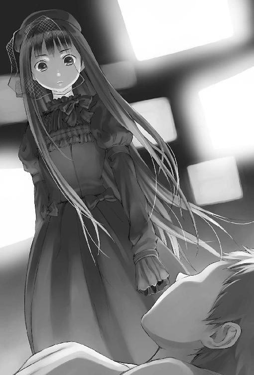
「その鬱血はエンジェル・フィックス中のある成分に対する拒絶反応だ。まれに身体に合わない者がいる。彩夏もきみもそうだった。それだけだ。拒絶反応は幻覚効果が減衰した後にもたらされる激しい虚無感の原因となる。わかるかい、きみの感じているそれはただのバッドトリップだ。真実ではあるかもしれないが事実ではない」
だから。だからどうした？
アリスはつらそうに僕から目をそむける。
「逆に言えば、事実ではないが......真実なのだね。わかっている。こんな説明にはなんの意味もないということはね。きみの手にした至福も、絶望も、すべてが薬物による神経細胞中の化学反応だったとしても」
そうだよ。なんの意味もない。だって僕らの感情は、怒りは、哀しみは、幸せは、虚しさは、みんな化学反応だろ？
だったら、これは──まぎれもない真実なんだ。
「麻薬はあらゆる精神作用を拡大する。どんな些細な後悔も。自分の育てていた花が、犯罪に荷担していたという罪悪感も。それが故意ではないことなんて、薬の前にはなんの酌量にもならない。真実の前で事実はただ沈黙するしかない。だから」
僕を見つめる、一対の深い目。
「ぼくは、きみを引き留める言葉は持ち合わせていない」
僕はその薄桃色の小さな唇をじっと見つめ返す。
「きみがそちらへいってしまうのだとしたら、ぼくにはそれを引き留める力はない。ただ」
アリスの手に握られているのは、三重に折り畳んだ便箋。僕がフィックスを飲むと決意したあの日、アリスが僕に書かせた遺書だ。あのときは、なぜアリスがそんなものを書かせようとするのかわからなかった。ずいぶんいい加減な文章を並べたような気がする。
あれは、もう、今の僕じゃないのだ。
「ただ、きみの言葉は伝えよう。きみがたしかにここにいたことは、伝えよう。きみは勇敢だったと。やるべきことをたしかにやり遂げたと。必ず」
やるべきこと。
やるべきこと？
背後でドアが開く音がする。
「おい、アリス、なんで四代目に知らせたんだ！」
怒気を含んだテツ先輩の声。僕が振り向き、目を合わせると、先輩は玄関をあがってすぐの廊下でぎょっとした顔をして立ちすくむ。
「......ナルミ、もう起きてて大丈夫なのか」
僕は、弱々しくうなずく。
「ヒロは車を回してきてくれたかい？ あまり四代目を待たせて焦らせるわけにもいかないからね、早く発とう」
「アリスも出んのか？」
「この格好を見てわからないのかい？ 四代目だってぼくが直接行かなければ収まらないだろう」
「ああ......なあ、なんで四代目に知らせたんだよ。もう組の連中がやつらのねぐらを囲んでるぞ。あいつらトシだろうとだれだろうと全員ぶち殺すぞ？」
ああ。トシさんたちは、見つかったのか。
そうだった。僕はそのためにエンジェル・フィックスを飲んだのだっけ。忘れていた。今となっては、前世の記憶みたいなものだ。
やるべきことを、やり遂げた。
だから──なんなんだ？
アリスが僕の隣を這っていって、ベッドからおりた。
「ぼくは四代目と業務契約を結んでいるのだよ。フィックスの件に関して情報をすべて提供する義務がある。探偵としてね。それに、相手は少なくとも七、八人いるんだぞ。平坂組の力はどのみち借りなきゃいけなかったんだ」
「でもよ」
「だから、ぼくが行くまで手を出すなと条件を出しておいたんだ。安心したまえ、ちゃんと手は打ってある。トシに手は出させない」
テツ先輩はむくれて黙り込み、それから部屋を出ていった。
玄関のドアが閉まる音の残響がエアコンのうなりに吸い込まれて消えると、僕らはまた、二人きりになる。
アリスは振り向いた。
僕は枕に顔を半分埋めて、黒いヴェール越しの彼女の視線を受けた。
「きみのおかげだ。ここから後は、ぼくの自己満足のためのおまけみたいなものだよ。きみにとっては......どうでもいいこと、だろうね」
どうでもいいこと。
「......ぼくは出かけるから。眠ければ好きなだけ寝ていたまえ。飛び降りたければ右手奥のラックを手前にずらせば窓を開けられるよ。三階だから保証はしかねるが」
「......行くの？」
「前に言っただろう。ぼくは彩夏がなぜ学校の屋上から飛び降りたかを知りたいんだ。トシや墓見坂史郎なら、なにかを知っているだろう。そのために、そのためだけに、ここまでやってきたんだ。知ることができたとして、その後には虚しさしか残らないとしても」
「......僕を、置いて行くの？」
のろのろと身を起こす。蚊の羽音みたいな僕の声に、アリスはわずかに首を傾げる。
「きみも、ついていきたいのかい？ どうして。ぼくの自己満足につきあうことなんてない」
僕は首を振る。ついていきたいわけはなかった。どこにも行きたくなかった。なにもしたくなかった。でも。
「なら──」
「......ぃて行くなよ」
アリスの目が見開かれる。
「きみは、なにを」
「置いて行くなって言ってんだよ！」
止めようもない叫び声が、からからに乾いた僕の喉からほとばしった。
「いつもいつも全部わかったような顔して、回りくどいことしたり顔で喋ってるくせに、こんなことも言わなきゃわかんないのかよ！ ふざけんな！」
なにに怒っているのか自分でもわからなかった。ただ、目の前の黒いぼんやりした影に、僕は焼けた鉄のような想いを叩きつけた。
「いつもみたいに顎で使えよ、もう僕ひとりじゃ立てないんだよ見りゃわかるだろ？ からっぽなんだ、どこにも行けないんだよ！ なんでもいいから命令しろよ、でないと、僕は、僕は、僕は──」
ベッドの枠にしがみついて、僕は身体じゅうの空気を絞るようにして激しく何度も何度もむせた。骨がばらばらになってしまいそうだった。でも、どうせ僕の身体なんてもう必要ないのだ。この腕も、この脚も、なんの役にも立たなかった。だれのためにもならなかった。だからもうどうでもいい。ぶっ壊れてしまえばいい。最初からなかったことにすればいい。だれからも忘れられてしまえば──
冷たい手が、僕のうなじに置かれた。
全身が痙攣して、それから、震えていた肺が、肩が、心臓が、熱を吸い取られるようにしておさまっていく。
「──そうだね。きみの依頼は完遂したけれど......ぼくがもらうべき対価は、まだ、この手にはない」
ねじきれそうな皮膚の痛みをこらえて、僕は顔を持ち上げる。そこに、夜の川のような黒髪に縁取られた、アリスの微笑み。
「ならば最後まで働いてもらおう。きみはぼくの助手なのだからね。きみの腕も、きみの脚も、きみの眼も耳も、きみの喉も、きみの爪も、きみの歯も舌も、きみの血の最後の一滴までも」
小さな女王の人差し指が、そっと僕の額に触れた。
「──今はすべて、ぼくの道具だ」
車の後部座席の窓から見上げた空は、茜色の夕焼けだった。
「十五時間くらい眠ってたんじゃないかな」と、運転席のヒロさんが言う。助手席にテツ先輩。後ろに、アリスを挟んで僕と少佐。それからアリスがしっかりと抱きかかえたクマのぬいぐるみ。モッガディートよりもふた回りほど小さい。名前はリッリルウというそうだ。奇妙な五人と一匹を乗せた青い外国車は、川沿いの道を街に背を向けて走っている。白く透けた月だけが僕らを追いかけてくる。
「ナルミ君の家には連絡しといたよ。全然心配してなかったな。後でお姉さん紹介してくれ」
テツ先輩がヒロさんの頭をひっぱたくのと、少佐が運転席のシートの背中に蹴りを入れるのはほとんど同時だった。でも僕は笑わなかった。そうか、そういえば僕にも家があったんだっけ、とぼんやり思い出す。最後に家に帰ったのがなんだか三年くらい前のような気がする。
走行中、アリスは一言も口を利かなかった。ぬいぐるみを抱きしめた手の甲が真っ白になっていた。冷や汗が出ているのもわかる。
そういえばこいつ、ひきこもりだったっけ。なんで、そうまでして外に出てきたんだろう。四代目やテツ先輩たちに任せておけば、勝手になにもかも終わらせてくれただろうに。
もうすぐ終わるんだな、と月を見ながら思う。
彩夏に逢ったのは──いつだっけ？ 十一月だ。もうすぐ一月が終わる。三ヶ月。こういうのに、ひどく陳腐だけどぴったりの言葉がある。長い夢を見ていたみたい。
目をつむる前はからっぽだった。目が覚めた後は、たぶんもっとからっぽだろう。
もうすぐ、終わる。
車ががくんと揺れて停まった。
人気のない商店街だった。蕎麦屋、写真店、自転車屋、ペットショップ、まだ夕方の五時なのにみんなシャッターが下りている。駅から車でほんの五分ほどの距離なのに、とても同じ区内とは思えなかった。
商店街には不釣り合いな広い駐車場に、蝶の代紋の入った黒Ｔシャツの少年たちが集まっていた。ヒロさんはその駐車場の端に車を突っ込んだ。
「姐さん、お疲れさんス！」
「お疲れさんス！」
ぬいぐるみを抱いたまま車から降りる黒いドレスの少女に、十何人もの悪そうな面をした少年やくざが一斉に頭を下げる。夕映えがその光景をオレンジ色に染めている。今この瞬間、世界が滅亡してもおかしくないくらいシュールな眺めだった。
「兄貴もお疲れさんです」
「聞きました、兄貴が命張ってここ見つけたって」
「さすが兄貴」
岩男や電柱が僕にまとわりついてくる。僕は目をそらして首を振った。僕はなにもしていない。なにもできなかった。
平坂組の男衆を割って、深紅のジャケットを羽織った狼が近づいてくる。
「おまえ、外歩いて大丈夫なのか......」
四代目はアリスを見下ろして心配そうに言う。
「ちっとも大丈夫じゃない。見ればわかるだろう」
ぬいぐるみの頭で顔を半分隠し、腕を小刻みに震わせてアリスは気丈にも憎まれ口を返す。
「なんでわざわざ出てきたんだよ。前の事件でもそうだったけどよ、最後の最後で」
「なぜならぼくが、ニート探偵だからさ。探偵は安楽椅子にふんぞり返ってどれほど論理をもてあそぼうとも、最後には必ず自分の手を血だまりに突っ込まなければいけないんだ。そうしなければ、死んだ世界にしか触れられなくなってしまう」
アリスは唇を紫色に染めて、痛切な声で答えた。でも、意味がわからなかった。四代目は額に手を当てて頭を振った。
「囲んで一匹も外に出してねえけど、一時間くらい前から不気味なくらい静かになったぞ」
駐車場に隣接した、のっぺりとした四階建てのビルを四代目は顎で指す。
「中には入ったのかい？」
「おまえが入んなって言ったんだろが。少なくとも六人いるのは確認してる。おい、もういいだろ突っ込ませろ。俺ら何時間待ってると思ってんだ」
「そうもいかない。トシはぼくらの仲間だからね」
「俺らが一人だけ特例で見逃すとでも思ってんのか？」
「思っていないよ。だから」アリスは、テツ先輩の後ろに隠れた。「トシの分だけ、裁判はテツがかわりに受ける」
テツ先輩は呆気にとられた顔でしばらく固まり、それから嘆息して言った。
「そういうことかよ......なにが『手は打ってある』だ」
示し合わせたように四代目もため息をつく。
裁判。平坂組の裁判は、ただのケンカだ。つまり──
「お、おい、おい、壮さんとテツ伯父貴の勝負か」
「これまでは？」
「四十九勝四十九敗三分けだったな」
「キメの勝負じゃねえか」
「よし壮さんに五千円」
「伯父貴に一万」「てめえこの裏切り者」「だってそうしねえと賭けが成り立たねえだろ」「蹴り無しなら伯父貴のがちょっとだけ強いぞ」
黒Ｔシャツたちがにわかに盛り上がり始める。
「おい、おまえら──」四代目があわてておさめようとしたけど、すでに遅かった。あっという間に胴元役が決まって紙幣が集まり、組員の人垣が環になって駐車場の真ん中に即席のリングをつくり出す。アリスはそっとテツ先輩の背中を離れて脱出し、リングの中には先輩と四代目だけが向かい合ったまま取り残される。
「まあいいんじゃねえの、こういう俺らっぽい馬鹿な締め方も」
拳に包帯を巻きながらテツ先輩が苦笑する。
四代目は苦い顔をして、なにか言葉を口の中で噛み潰して、それからジャケットを脱いで背後に放った。
「壮さん秒殺お願いしぁス！」「伯父貴、俺の一万円頼みましたッ」
組員たちの野太い声援が飛び交う。あまりの馬鹿な展開に唖然とする僕の裾を、アリスが引っぱった。
「行くぞナルミ。ぼうっとしてるな。少佐、シャッターの鍵を開けてくれたまえ」
「え。え？ でも、テツ先輩が」
「あんなのただの時間稼ぎに決まってるだろう。四代目がすぐに突っ込んでしまっては、だれに話を聞く時間もないからね」
すでに少佐がビルのシャッターの前でピッキングの道具を取り出している。さすがに気づいたのか、四代目の声が飛んだ。
「おい、アリスてめえ！ 待たせといて勝手に入る気かよ！」
アリスはくるりと振り向いて四代目にびっと指先を向けた。
「一度始まった神聖なる裁判を放棄するつもりじゃないだろうね」
「く......」
ファイティングポーズのテツ先輩が、苦笑いしながら四代目との距離を詰める。四代目もしかたなく拳を持ち上げた。
「おい、おまえらも行け」テツ先輩から視線を外さないまま、四代目がまわりに命じる。
「......え？ いや、でも、この勝負は見逃せねえス」
「見逃したら一生後悔します」
「俺の一万円」
「うるせえ馬鹿さっさと行け！ あいつらだけ突っ込ませてなにかあったらどうすんだッ」
入り口のシャッターをこじ開けて中に入った瞬間から、奇妙なにおいが鼻についた。青臭く、いがらっぽく、苦い、生の植物のにおい。僕はそれを知っていた。ビルの中に踏み込んだ十数人の中で、僕だけがそのにおいを知っていた。まだ口の中で残っているような気さえした。入ってすぐの埃っぽい狭いロビーは、壁際にみすぼらしいソファがいくつも押しつけられていて、廃病院みたいだった。
「アリス、やっぱり車の中で待ってたら？」
ヒロさんが囁く。アリスは僕の背中にぬいぐるみを押しつけてしがみついたまま、首を横に何度も振った。振り向いて見ると、顔がさっきよりもさらに青白くなっているのがわかる。
「きみは、ぼくにこのまま、世界とまったく触れ合うことなく生きていけというのかい？ 冗談じゃない」
黒Ｔシャツたちが僕らを追い越して、階段へと走っていく。
「ワンフロア四人で探せ」
「だれか見たら殴っていいんだよな？」
「あんま騒ぎ起こすなよ！」
上へ、下へと散っていく足音。
世界とまったく触れ合うことなく。
僕はまた自分の手のひらを確かめる。あのときの、身体と心がぶっつり切り離されてしまったような感触は、まだ残っている。それはもう消えないのだ。僕はこれから先、一生、自分のものではない身体の中に閉じこめられながら生きていくのか、と思った。自分ではなにも触れられないままに。
地階は巨大な立方体の空間で、丸ごと精製プラントになっていた。壁際に設えられた階段を下りていくうちに、手すりの向こうにプラントの様子を一望できた。壁に並んだ背の高い冷蔵庫みたいな機械。隅に無造作に積み上げられた土嚢。机の上にびっしり並べて立てられた試験管は、切れかけて明滅する蛍光灯の光を不気味に照り返している。開けっ放しの蛇口からは水がぼたぼたと落ちてシンクの底を打っている。地階の空気には、僕のよく知っている、あのにおいがたっぷりと溜まっていた。ヒロさんも少佐も、ついてきた黒Ｔシャツも、顔をしかめて服の袖で鼻を押さえながら階段を下りきった。
脚を折ってベッドがわりにした黒ソファが隅の一角に並べられて、そこに何人かの男が折り重なって突っ伏している。
その奥。象が暴れたあとみたいに、棚がいくつも倒れて床に横たわっている。その男は、白衣を毛布がわりにして、斜めに傾いた棚の背中に腰掛け、ぐったりと裸コンクリートの壁に背中を預けていた。足下には割れたガラスが散らばっている。
「......やあ」
男は、のろのろと顔を上げて、僕を──ではなく、僕の背中にしがみついたアリスを見て、気味の悪い笑い方をした。僕の記憶にある顔とも、アリスが探してきたあの写真とも、ずいぶんちがう。髪は襟にかかるくらい伸びていて、頬はこけ、眼鏡の奥のぎょろっとした眼は飛び出してきそうだ。
でも僕にはそれが、墓見坂史郎だとすぐにわかった。
「ずいぶん背の低い天使だなと思ったら、あんたがアリスか」
墓見坂は彼方の天井に向かってけたたましい笑い声をあげる。
「篠崎に聞いてはいたんだけどね......ほんとにガキだったのか。まさかこんなに早く見つけてくれるとはね。嬉しいよ」
「おい、トシはどこだ？」とヒロさんが僕を押しのけて墓見坂に近づく。
「そのへんに転がってるだろ。あいつもけっこういっぱい飲んだから、生きてるかどうか知らないけど。ふん。最後の在庫くらいは自分たちで楽しまないとね」
ぞっとした。
この人は、もう、終わっている。
この部屋はもうなにもかもが死んでいる。
ヒロさんと、それから黒Ｔシャツ二人は倒れた棚と机を乗り越えて部屋の奥に向かう。土嚢のあたりでいくつものうめき声が聞こえた。
「トシ。おい、トシ、しっかりしろ！ 吐けるか？ いいから吐き出せ！」
ヒロさんの悲痛な声。
「おい、水持ってこい！」
黒Ｔシャツのばたばたした足音。にわかの騒がしさを、墓見坂は鼻で笑う。
アリスが僕の腕をぎゅっと握りしめた。
「墓見坂史郎。きみの実験はこれで成功なのかい」
アリスの言葉に、墓見坂の眉がぴくんと持ち上がる。
「もちろん。どこからどう見ても成功じゃないか。みんなほんとうの世界を見てくれただろ？ 何人かは実際にエンジェルが連れていってくれた。エンジェル・フィックスはただそれ自身の力だけで、拡散し循環するシステムを作り上げたんだ、ほかのどんな薬にそれができる？ 俺はやり遂げた。成功だ。成功だよ」
ふたたび、背骨を直接こすられるような甲高い不快な笑い声。僕はもう彼の言葉を、彼の声を聞いていたくなかった。だれでもいい、早く連れていってくれ。
でも、アリスはさらに問いかける。
「......彩夏も成功だったときみは主張するのかい」
「あやか？」
「トシの妹だ」
墓見坂の目が焦点を失う。
「ああ......。あれはしかたない。花の正体に気づいたし、警察に行くなんて言い出したからね。飲ませるしかなかった。今は......植物状態......だっけ？」
「無理矢理、薬を飲ませたということか？」少佐が棚の上に飛び乗り、墓見坂の襟首をつかんで持ち上げる。
「それが、ど、どうした？ 飲まないことはつ、罪だ」
答える墓見坂の呂律は回っていない。
「アリス、こいつに人民解放軍式の拷問術を試してもいいか」
「やめておきたまえ少佐、きみのナイフをそんなやつの血と肉で汚すことはない」
僕は無意識に、アリスの手をきつく握り返していた。
単純な事件だった。謎なんて一つもなかった。
彩夏は薬のフラッシュバックに耐えられなくて飛び降りたのだ。
たったそれだけのことだ。
原料となる花を育て、犯罪に荷担していたという罪悪感。フィックスがそれを押し広げ、彩夏を呑み込んだ。
がらんどうになった僕の頭の中に、墓見坂の鈍い声が響く。
「悪いとは思ってるよ。殺すつもりなんてなかったんだ」
「殺すつもりなんてなかっただと？」少佐の怒気に満ちた声が間に挟まる。それでも墓見坂はつぶやくのをやめない。
「いい娘だったよ篠崎とちがって。俺のこと、ずっとケシの花の専門家だと思ってたらしくて、ガーデニングのこと楽しそうに喋ってた。謝礼も現金で渡すつもりだったけど、花でいいからって言って......」
「花？」
アリスは僕の後ろから半歩だけ身を乗り出す。
「彩夏は、花をほしがったのかい？」
「ああ。同じ株のがいっぱい必要だからって。だから、種から培養してやったよ。千株くらい造ったんじゃないかな」
「その花の名前は？」
「雑草だ。ナガミヒナゲシ。いい花だよ。俺と趣味が合った。でも地獄の方にいっちまったんだよな。しかたない。たまに、天使が見えてもそれを死神だと勘違いするやつがいるんだ。光の扉を通る資格がないやつ」
墓見坂のどろりとした目が、僕をねめつける。
「......おまえもそうだな。......やったんだろ？ はは。俺の言った通りだ。残念だったな。俺はちゃんと連れていってもらうよ」
骨まで響くほどの寒気がした。
墓見坂の言う通りに、残念だと思っている自分がいたからだ。
僕はあの光に届かなかった。天使の手をつかめなかった。それはもう失われてしまって、二度とやってこないのだ。かわりに煮詰めた闇みたいな虚無だけがこの手に粘りついている。
「あんた、......なにがしたかったんだ」
そんなこと訊きたくはなかった。でも、口が勝手に動いた。墓見坂の眉がべつの生き物みたいにびくびく震えた。
「わかるだろ。直接見たおまえなら、わかる、だろ？ スパークの嵐の向こうに、戸口がある。マホガニーの重たい扉。いつも二インチだけ隙間が開いていて、そこからあっちが見える」
墓見坂のざらついた声は、甲高くなる。
「夜だ。永遠の夜。そこは四千五百年前のギリシアなんだ。時間は環になってつながってる。ずっと回ってるんだ。月の光が、潮風でぼろぼろになった煉瓦を照らしている。みんなが真っ白な砂浜に並んで立って歌っている。俺はそのドアに何度も指をかけたんだ。そのたびに引き戻された。届かないんだ。もっともっと足下に死体を積み重ねなきゃ届かないんだ、今度こそ、こ、んど、こそ」
僕は、なにか、なにか言ってやろうとした。でも、不意に胸元に押しつけられた柔らかい感触がそれを遮った。アリスがクマのぬいぐるみを僕に預けたのだ。そして彼女は僕の背中から前に出ると、倒れた棚の間に踏み込み、墓見坂の正面に立ってその顔をのぞき込んだ。
「ぼくが見えるね？ なにに見える？」
「......天使......」
「そうだ。ぼくは神様のメモ帳を見たことがある。そこに書かれた十四万四千人の名簿も見たことがある。きみの名前はなかった」
「......うそだ」
「きみは王国には呼ばれていない。そのまま、名づけられてもいない、なまあたたかい薄暗がりで悠久の時を過ごしたまえ。それがきみの得た永遠だ」
「うそだ！ う、そ」
墓見坂の頭が、がくんと向こう側に落ちた。青白い喉仏が闇の中に浮かび上がって見える。
ざらついた静寂の中、アリスが振り向く。黒衣は闇に溶けて、ヴェールの向こうの白い顔だけが浮き上がって見える。
「......なに言ったんだ？」少佐がほとんど吐息に等しい声で訊ねる。
「なんでもない。癪だったから、適当に虚言を並べてジャンキーをおちょくっただけだよ。あのまま気持ちよくいかせてたまるものか」
アリスは僕のところまで戻ってくると、ぼんやりと立ち尽くす僕の腕からぬいぐるみをむしり取って抱え、また背中にぴったりと張りついて服の裾を握りしめた。
「行こう、ナルミ。もう終わった」
背中越しに、つぶやく声。
「すべてつながった。もう、ここにはなにもない。あとは平坂組に任せよう。ぼくの仕事は終わった。もう探偵の出る幕じゃない」
夕暮れの紫に染まった駐車場の真ん中で、四代目とテツ先輩は向かい合って座り込み、額と拳を突き合わせてなにかやっていた。二人ともかなり殴り合ったのか、顔に赤いあざがいくつもできていて、服も汚れている。両側からボディガードの電柱と岩男が心配そうにそれをのぞき込んでいる。近づいてみると、指相撲をしているのだとわかった。
「まだやっていたのかいきみたちは......」
アリスが呆れた声で言う。
「おまえがやれって言ったんだろがッ！」
「往生際悪いんだよ、俺のが三発くらい多く入れただろ！」
大勢の足音が駐車場に入ってきて、二人の延長戦は中断された。四代目は険しい顔つきになると、膝の砂埃を払って立ち上がる。
「そ、壮さん勝負やめちゃったら賭けが」と岩男。「うるせえ！」即座に四代目に殴り倒される。
ビルに入った平坂組メンバーのほとんどが戻ってきていた。少佐も、ヒロさんもいる。ヒロさんの肩にぐったりと身を預けているトシさんもいる。
「......首尾は？」と四代目。
「八人。二階から上はだれもいませんでした。でも、全員薬でほとんど意識が飛んでます。喋れそうなのはそいつだけです」と、黒Ｔシャツの一人がトシさんをあごでしゃくる。
「救急車呼んだか」
「押忍」
四代目はうなずく。ちゃんと助けるのか、と僕は意外に思う。
「意識もないようなジャンキー袋叩きにしてもしょうがない。退院したらあらためてボコるんスよ」と、組員の一人が僕に耳打ちしてくれた。律儀な少年やくざ。
「で、トシの始末はどうすんだ。もうアホな時間稼ぎはなしにしろよ」
四代目はヒロさんに向かって怒鳴った。ヒロさんは黙って、トシさんの身体をゆっくりとアスファルトの地面に下ろした。
トシさんは泣いていた。
目にはちゃんと意識の光がある。眼鏡のフレームはひん曲がって、頬は真っ赤に腫れて、顎まで涎と涙に濡れている。なにかぶつぶつ言ってる。
あんたに泣く資格があるのか。僕の中のからっぽに、どろりとした冷たい溶岩みたいなものが流れ込んでくる。
「......んで連れ出したんだよ......ほっといてくれよ......」
トシさんのつぶやきが聞こえる。あんたが助けてくれって言ったんだろ。ふざけてんのか？
四代目は、僕の背中に隠れたアリスをじろりとにらむ。
「俺の拳はこんな哀れなやつを殴るためにあるわけじゃないとか、そういうくだらないことは言うなよ」
「言わないよ。陳腐は愚昧ほどではないがきらいだ。しかしね、四代目。落とし前なんてものがそんなに大切かい？ 傷をつけられたら同じ場所につけて返さなければ、きみの生きている世界は成り立たないのかい」
「当たり前だ」斬って捨てるように四代目は即答する。「わかってることを訊くんじゃねえよ。俺の世界に、落とし前より大事なもんなんてない」
「そうだね。愚問だった」
アリスが笑ったのが見えたような気がした。
「でもね、四代目。だとしたら、落とし前をつけるのはきみの役目じゃないはずだ。ぼくの言っていること、わかるね？」
四代目の顔は、一瞬呆けたようになり、次に怒りに染まり、けっきょくはため息に落ち着いた。頭を掻きながら憎々しげに吐き捨てる。
「あー、あー、そういうことかよ。くそ、ほんっと口の減らないやつだなおまえ。わかった。わかったよ。引っ込みゃいいんだろ」
狼の視線は、最後に僕の顔をえぐった。
ジャケットを羽織り直し、四代目は背を向ける。
「園芸部。時間がねえ。救急車が来る前にきっちり落とし前つけろ」
その言葉を合図に、テツ先輩も、黒Ｔシャツのみんなも、息を詰めて僕から距離を取る。僕？ どうして僕なんだ。
「ナルミ」
背中にぴったりくっついていたアリスが囁く。
「トシに訊きたいことがあれば、訊けばいい。言いたいことがあれば、そのままぶつければいい。これは、きみの事件だったんだ。だから、きみが最後の始末をつけたまえ」
それから、彼女の体温も離れていく。
円陣の中に残されたのは、立ち尽くす僕と、うずくまるトシさん。
訊きたいこと？
彩夏が......最後に、なにか言い残していなかったかどうか。
そんなこと、僕はほんとに知りたいのか？ 答えはわかってるじゃないか。彼女は薬で頭をやられていたのだ。僕のことなんて考えていたはずはない。考えていたなら、考えてくれていたのなら──
なにも言わずに、いってしまうはずはない。
「なあ、ナルミ......薬くれよ、どっか、そのへんに......ある、だろ？ 全部吐いちゃったんだよ、俺......くそ......」
ヘドロの底からわく泡みたいに、トシさんの不快なつぶやきが僕の意識の表面で弾ける。虫酸が走った。
「もう、どうせだめなんだよ......いいから死なせてくれよ、俺なんか、俺なんかさあ、もう、もう......」
訊きたいことも、知りたいことも、もう一つもない。それでも。それでも。
「......立てよ」
僕の声はひどく毛羽立っていた。ほんの一言なのに、喉がざらりと痛んだ。トシさんはどろどろに溶けた目で僕を見た。
「立て、って言ってるんだ」
トシさんはアスファルトの上にくしゃりと潰れたまま動こうとしなかった。僕はその襟首の後ろをつかんで強引に引っぱり起こした。トシさんの身体はひどく軽かった。
「ナルミ。バンデージ要るか」
背後からテツ先輩が言う。僕は振り向いて首を振る。
そのまま向き直り、半歩トシさんから離れると、腰をひねって拳を引いた。
ストレートがトシさんの頬に突き刺さった瞬間、指と腕の骨が悲鳴をあげて、痺れるような痛みが脳天にまで走った。トシさんは血混じりの涎を散らして真後ろに吹き飛び、リングを形作る平坂組メンバーの足下に仰向けに倒れた。僕の肩と肘はまだびりびり震えていた。人を殴ると、自分も痛い。僕はそのシンプルな真実を、もう一度自分の身体で、裸の拳で、事実として確かめなければいけなかった。
「寝てんな。立てよ！」
トシさんの腕をつかんで足の甲を踏んづけ、立ち上がらせる。腹に左のブローを叩き込む。くの字に折れたトシさんの身体を受け止めると、突き飛ばし、その顎を右拳でとらえる。激痛が走った。指を汚すのはトシさんの血だけじゃなかった。骨も折れたかもしれなかった。自分の心臓の音のせいで鼓膜もずきずきと痛んだ。それは僕のリアルな世界の音、リアルな痛みだった。
だれかが僕の肩に手を置いた。ぎい、ぎいという不愉快な音は、僕が肩で息をしている音だと気づいた。トシさんはアスファルトに突っ伏して背中を震わせて泣いていた。
「もういいだろ、ナルミ君」
ヒロさんの優しい声は、白々しく僕の背中を流れ落ちた。
テツ先輩と少佐がトシさんに近づき、かがみ込んで、抱き起こす。
そこが長い夢みたいな十六歳の冬の終わりだ。
目が覚めた後は、やっぱりからっぽだった。だれかを殴ってみたって埋められなかった。
彼方から近づいてくる救急車のサイレンを遠く聞きながら、感覚がなくなって指も半分ほどしか開かない血まみれの手を見下ろす。それは僕の手、僕の痛み、僕の身体だった。ようやく取り戻した、僕がこれから先も引きずっていかなきゃいけない、僕自身だった。
７
だから僕の日常は、どうしようもなく続いていく。
僕らは不必要に強くできていて、天使に手を引いてもらわなければこの世界から逃げ出すことだってできない。
実のところ警察は、彩夏の身体から検出された薬物から、トシさん、そして墓見坂史郎に至るラインをすでに把握していたのだそうだ。そりゃそうだ。日本の警察は無能じゃない。墓見坂史郎が政治家の息子だったので証拠固めに慎重になっていたところを、ニートが大勢よってたかってむちゃくちゃにしたわけだ。僕を取り調べた刑事さんはどうやらテツ先輩の知り合いの人だったらしく、苦々しい顔をしながらもこっそりと教えてくれた。
僕は一回事情聴取を受けただけで済んだけど、平坂組は四代目をはじめとして何人か引っぱられたらしい。僕やアリスがすぐに解放されたのは、四代目がなにか煙幕を張ってくれたおかげかもしれなかった。別れ際に「おまえには借りができた」みたいなことを言っていたから。
墓見坂史郎は救急車が到着したときすでに死んでいた。他にも、フィックスを作って捌いていたスタッフのうち五人が、過剰摂取によるショックで、入院中に死亡。
そうして、天使の羽はこの街から消えた。
ありきたりの、結末。
それ以上の詳しいことは知らなかった。あれ以来、『ラーメンはなまる』には一度も顔を出していなかったから。
一月が終わって、二月は音もなく過ぎていった。何度か雪が降って、月の終わりには学年末テストがあって、赤点が三つに増えた。
園芸部はずっと休んでいた。彩夏のことを思い出すのがつらかったから。なぜつらいんだろう、と教室の窓から荒れ放題の花壇を見下ろして思う。彩夏に出逢う前に戻っただけなのに。あの頃の僕は、ひとりがつらいことだなんて思いもしなかったのに。
もちろん、知ってしまったからだ。だれかがそばにいるときの温かさを。だから僕はそれを忘れようとした。それ以上、だれとも喋らないようにした。心配して話しかけてくるクラスメイトたちにも、首を振るだけで、なにも答えなかった。追試が終わってしまうと、僕はまた学校に行くのをやめた。
出逢う前に戻ったなんて嘘だ。
僕の中には彩夏の不在が掻き傷みたいにしっかりと残っていた。
時々どうしようもなく、彩夏のことを思い出す。夜中に自分の部屋のベッドにしゃがみ込んで、磨りガラスの向こうの黒い空をじっと見つめているようなときに。
それからアリスの冷たい手を、ミンさんが作ってくれたシャーベットの味を、四人で囲んだ丼を鳴らすサイコロの音を、笑い声を思い出す。
でもそれは僕のためにあるものじゃない。僕のためのものだと思い込んでそばにいれば、いつかほんとうのことに気づいたときに、奪われ、汚され、失われて、痛ましい不在が残る。
それなら、最初から近づかない方がましだった。
だって、こうしてひとりでいても、だれも声をかけてこない。だれも僕の名前を呼ばない。
けれどある夜、突然僕の携帯電話が鳴る。それは、不登校を続けたまま迎えた春休みの最初の日だった。僕は自分の寝室で、電灯をつけてぼーっとベッドに寝転がっていたので、手が無意識に動いて携帯を取り上げることができた。
『ぼくだ。今すぐに学校に来てくれたまえ。きみの高校だ。校門のところで待っている』
アリスだった。たしかに、アリスの声だった。
僕は信じられず、しばらく言葉を失って、携帯を耳にあてたまま呆然と天井を見つめていた。
『どうしたんだい？ これから寝ようなどと考えているんじゃないだろうね。深夜はぼくの活動時間なのだよ、助手であるきみが寝ているとはどういう了見だい。今は春期休業中だろう、さっさと支度して出たまえよ』
「な......」声がうまく出せずに、僕は二、三度むせてしまう。「な、なんで？ 学校？」
というか今何時だと思ってんだよ？
『午前三時三十五分だよ。三十分で来たまえ。外で待たされるなどまっぴらだからね』
「なんで僕が......」
『いちいちうるさいなあ。きみはぼくの助手だろう、雇用契約はまだ有効なのを忘れているんじゃないだろうね？ きみにどうしても見てもらわなきゃいけないものがあるんだ、いいから口答えせずにさっさと家を出たまえ』
そうして電話はぶつりと切れる。
僕はしばらく、携帯を何度も何度も裏返しては矯めつ眇めつしていた。その通話自体が全部僕の妄想だったような気がした。でも液晶画面にはたしかに着信履歴が表示されている。
僕に見せたいもの？
そのまま無視して寝てしまおうかとも思った。もう逢わないと決めたのだから。でも、目を閉じても、寝返りを打っても、アリスのあの言葉だけが引っかかって消えなかった。
学校。見なきゃいけないもの。
彩夏の──ことだろうか。
僕はベッドから起きあがり、姉を起こさないようにそっと階段を下りて、玄関を出た。もう彼岸を過ぎたからか、ようやくコートなしでも夜に外に出られるほどの気温になっていた。
自転車のペダルを踏み込む。夜風は柔らかだった。
「十二分の遅刻だ」
アリスは怒っていた。あの日と同じ、黒ずくめのドレスにヴェールつきの帽子にクマのぬいぐるみというかっこうで、門柱の足下にしゃがみ込んでいる。
Ｍ高校の校門前。真夜中の学校に来たのはこれがはじめてだった。塀沿いにぽつりぽつりと立った青白い蛍光灯が、弱々しく校舎を照らしている。三階のガラス窓の一角に、月が細切れになって映っていた。人気はまったくない。
「きみはいまひとつ理解していないようだからこの際言っておくが、ぼくはひきこもりなんだ。部屋の外にいると苦痛の体感時間は指数関数的に延びていく、たった十二分ときみは思うかもしれないがすでに部屋を出てここまで来るのに要した二十五分を加味すれば」
「ごめん。夜だしあんまり声をたてない方がいいと思うけど」
アリスは黙って立ち上がる。震える手で、僕のベルトをしっかりとつかむ。
「屋上に案内してくれたまえ。鉢植えがいつも置いてあった方だ」
「屋上......？ でも」
「ぼくはニート探偵だぞ？ セキュリティくらい切ってあるし、鍵もここにある」
なんであるんだよ。
「入手方法は少佐に訊いてくれたまえ、ぼくは詳しく知らない。さあ」
少佐......前々から犯罪者っぽいと思っていたけど、本物だったのか。でも、なんで屋上に？
アリスはそれ以上答えようとしなかった。行けばわかる、とでも言いたげな顔で、僕の背中をぐいぐい押す。僕はため息をついて、鍵束を受け取った。
扉を開け、凹凸だらけのコンクリートの懐かしい感触を踏む。屋上は真っ暗だった。照らすものがないからだ。街灯の光は低すぎるし、星の光はあまりに高すぎる。
フェンスの向こうにはちらちらと夜景が見える。川を越えて駅のあるあたりに目を向けると、夜を冒涜するほどにきらびやかなのに、そちらに背を向ければ、夜空と地上の不明瞭な境目にビルの窓の明かりや車のヘッドライトが散らばっているだけだ。
暗いのはありがたかった。きっと、明るかったら、彩夏を思い出してしまっただろうから。
「ああ、ちょうどいいものがあるね。これには登れるのかい」
僕のベルトの真後ろのところを握りしめたまま、アリスは言う。振り仰ぐと、夜空にぼっかりと空いた巨大な黒い穴──ではなく、給水塔の影がそこにあった。
「......登るの？」
「高いところの方がいい」
暗いから危ないよと言おうとしたけれどアリスの有無を言わさぬ目に気圧されてしまった。でも実際に登る段になると、非力なアリスを引っぱり上げるのにめちゃくちゃ苦労した。
「なんだこの梯子は。ぼくのような体格の者も使うことくらい考慮したまえよ、まったく！」
給水塔のてっぺん、わずかに盛り上がった不安定な面にアリスはへばりつき、荒い息をつきながら文句を言う。
「いや、ぬいぐるみを下に置いてくりゃいい話だろ......」
「きみはぼくにリッリルウなしで外での苦痛の時間を過ごせというのかい、無神経で冷酷な人間とは知っていたがこれほどとは思わなかった！」
「いや、わかった、わかったよごめん」
僕の服にしがみつきながら怒るものだから、全然迫力がなかった。
「で、この後どうすんの、ＵＦＯでも呼ぶの？」
「夜明けを待つんだ」
「......え？」
「このままここでじっと、夜が明けるのを待つのだよ」
僕はしばし絶句した。
なにか文句を言おうとしたけれど、膝を抱えてぬいぐるみに顎をうずめ、じっと屋上のコンクリートの床を見つめるアリスの顔を見ると、なにも言えなくなった。
僕に、見せるものがあると言っていた。アリスは僕のために、僕のためだけに、自分の殻であるあの機械だらけの部屋から出てきて、待っていてくれたのだろうか。
アリスの隣にしゃがんだ。体温がそこにあるのを感じた。
聞こえるのはかすかな風鳴りと、遠くの車の排気音、すぐそばのアリスの息づかい。
どれほど時間がたったのか、わからない。夜の底辺に澄んだ水がしみ込むように、空が青みがかっていく。街の光が色あせていく。屋上の床に溜まっていた闇も徐々に透き通って、すっかり雑草に覆われたコンクリートが見える。
「彩夏は」
アリスが、そっと言った。
「ほんとうに、きみになにも言わずにいってしまったのかい」
僕は唇を噛んでうなずく。
「そうか。では、ぼくがその失われた言葉を暴こう。死者の代弁者として」
「......え？」
「彩夏が、この学校の屋上から飛び降りた理由だよ。もうすぐ夜が明ける」
それは、アリスの言っていた、たった一つの謎。
僕とアリスをつなぎとめていた謎だ。
「......わかったの？」
「彩夏はね。屋上を閉鎖するために、屋上から飛び降りたんだ」
「......な......に？」
「わからないのかい。きみと過ごしたこの聖域に、なんぴとも踏み込ませないようにするために、あちらの校舎の屋上から飛び降りたのだよ。卒業アルバムの撮影場所に予定されていたのだろう。でも、自殺があれば、学校としては安全のためにしばらくは屋上に出るすべての通用口を閉鎖せざるを得ない。──ほら、始まった」
始まった？ なにが？
僕はアリスの視線をたどって、また屋上の床に目をやる。
長く長く引き延ばされた奇妙な時間の中で、最初の陽光が僕らの背後から射す。光と闇が優しく混ぜ合わされた清澄な朝の冷気があたりに満ちている。そうして僕はそれに気づく。
最初はほのかな違和感だった。けれど、コンクリートの上に茂る草が太陽のかすかな気配を浴びて緑を取り戻すにつれて、そこかしこで、染み出すように、鮮やかな朱色が浮かび上がってくるのがわかる。
花だ。
屋上の敷地いっぱいにびっしりと茂る草の間から、数え切れないほどに伸びた茎の先の花弁が、暁を迎え入れるようにして、ゆっくりと開こうとしている。
僕はなにかを叫びだしそうになった。喉に、なにか熱いものがつかえた。暗い緑の中から浮かび上がる朱色の星々は、はっきりと一つの図形を描こうとしていた。
「円形に並べて植えられていたのだね......いや、これは二重円......三重か......？」
アリスが吐息とほとんど変わらない小さな声で囁く。僕は膝を抱えた指にぎゅっと力を込めて、首を振った。そうじゃない。円じゃない。Ｃの中にＧ、その中にＭだ。
僕らの旗だ。
僕と彩夏をつなぎとめていたしるし。
朝の光の中で、花々は歓喜を顔中に受け止めるようにいっぱいに開いていく。どれほどの長い時間、僕とアリスはそれを見つめていただろう。
「ナガミヒナゲシ」
アリスが、僕らの旗にじっと目を注いだままつぶやく。
「夜明けに咲く。そして一日で散る」
僕もまた、目をそらさないままうなずく。胸が締めつけられるように痛んだ。熱いものがこみ上げてきた。もう、僕しかいない。この旗の下には、僕しかいない。その隣には、もうだれもいない。どうして。どうしてこんなもの残したんだ。どうして思い出させるんだ。
「彩夏は薬で頭を塗りつぶされていたかもしれない。でも、最後にこれを思い出したんだ。この場所を守ることを」
アリスの、細く、けれどたしかな声。
「わかってるよ」僕の喉から漏れる声は、湿っていた。
「彩夏はきみのことを考えていたんだよ」
「わかってるよ！」
だから、なんなんだ。こんなものほしくなかった。僕はただ、彩夏に元気でいてほしかった。それだけだ。それだけなのに。
「もちろんそれは、ぼくの推測だ。ほんとうのところはわからない。墓の中から掘り返した死者の言葉は──」
「黙れよ！」
「──しょせん、生者の慰めのためだけにある。彩夏がなにを考えていたのかなんて、わからない。......でも」
アリスは僕の膝の上の手に、手をそっと重ねる。
「この美しさは、ほんとうだ。これだけは事実だ。だからこれは、きみが受け取らなきゃいけない。そうだろう？」
僕の目に映っていた、花々で形作られた旗が、不意ににじむ。朝の屋上が海の中に溶けていく。最初の一滴が頬を伝って落ちると、涙は後から後からあふれてきて、僕の世界を塗りつぶした。それは、彩夏がいってしまってから、僕がはじめて流した涙だった。
どうして人は、その想いだけを残していくんだろう。記憶も一緒に持っていってしまえばいいのに。もう消せない。僕はこの先ずっと、この光景の中に彩夏の言葉を探しながら生きていくのだ。
「ナルミ。これを見せたぼくを......恨んでいるかい」
アリスの言葉に、僕は涙を撒き散らしながら首を振る。もう恨むことだってできない。
「では、ぼくを恨むといい。前に話したね。彩夏があんなふうになったのも、きみが悲しむのも、みんなぼくのせいだから」
「やめろよ」
「ぼくはそういう風にしかこの世界と関われないんだ。だからぼくを憎むといい。ぼくを責めるといい」
「やめろよ！」
吐き捨て、アリスに向き直る。彼女の大粒の瞳も濡れているように見えた。でもそれは僕の涙かもしれなかった。
「そんなことしてなんになるんだよ、馬鹿じゃないのか。哀しかったら普通に泣いて、怒ったら普通に怒鳴って、嬉しかったら普通に笑って、ほしいものがあったら普通に言えばいいじゃないか、なんでそんな簡単なことができないんだよ！」
「ぼくがぼくだからだよ、そんなこともわからないのかい」
「わからないよ！」
僕の服を握りしめていたアリスの手を振り払った。
「ナルミ！ 待って──」
給水塔から飛び降りる。膝と腰に響く痛み。アリスがなにか言った。僕はそれを無視してドアに飛び込み、階段を駆け下りた。自分がなにに怒っているのか、自分でもわからなかった。少なくともアリスに対してではないし、彩夏に対してでもないし、自分に対してでもなかった。
涙を喉に詰まらせながら、早朝の街を走った。肺が焼けるように痛んだ。歩道橋を渡るとき、ちょうど朝陽が僕の顔を真横から照らした。
僕はしばらく立ち止まり、手すりに肘をついてうつむき、もう少しだけ泣いた。落ちた涙は、長距離トラックが巻き上げる砂埃の中に吸い込まれた。
それでも僕は意気地なしで、頭が悪くて、無神経で薄情なただのガキだった。不条理な怒りはその日のうちに消えてしまったし、涙ももう出てこなかった。
人はなんにでも慣れてしまう。
しかも、慣れてしまうことを哀しいと思うことができない。
それを哀しいと思えるのは、たぶん、この空のどこかにいるだれかさんだけだ。
僕らはそいつが適当に書き散らしたメモ帳に振り回されながら、毎日ちょっとずつ怒って、ちょっとずつ笑って、ちょっとずつ悔しがって、なんとか生きていくしかない。
だから僕は、二日後の夕方、萎えきった身体にダッフルコートを巻きつけて自転車をふらふらと漕ぎ、病院に行った。
彩夏は眠り続けていた。
いやになるくらい清潔で明るい病室の真ん中にぽつんと置かれたベッドで、彼女は目を閉じてじっと横たわっていた。顔には一片の赤みもない。呼吸はしているのよ、と看護婦さんは言った。でも、胸も少しも動いていない。静かすぎて、点滴液が管を通る音が聞こえそうだった。
彩夏の身体はたしかにここにある、と僕は思った。
でも、心がどこにあるのかはわからない。
あのとき薬でこじ開けた扉の向こうの光の中に見えたのは、たぶん、彩夏のいる場所じゃなくて、僕自身なのだ。墓見坂史郎がいってしまった場所も、自分の中の暗闇だ。僕らはずっとこの身体の中に閉じ込められていて、もうどこにも行けないのかもしれない。
ああそうだ、藤島くんってあなたのことでしょう？ 看護婦さんの言葉に、僕は顔を上げる。たぶん彩夏ちゃんのクラスの子たちだと思うけど、あなたがもしお見舞いに来たら渡してほしいものがあるって。
看護婦さんは、壁際の棚からそれを取り出して僕に手渡した。十枚入りの折り紙のパック。表には油性ペンで、『藤島のノルマ』と書かれている。
僕がぽかんとして看護婦さんの顔を見ると、看護婦さんは笑ってベッドの方を指さした。ようやく気づく。ベッドの枕元には、千羽鶴が吊されている。短冊には一年四組より、とある。
なにかあったら呼んでね。そう言って看護婦さんは病室を出ていく。
僕はひとりだけになる。
じっと折り紙のビニルパックを見下ろす。
どうしてみんな僕のことを忘れてしまわないんだろう、と思う。何度話しかけられても一言も返さなかったのに。もうずっと顔も出していないのに。
そのままでいたら、また涙が出てきそうだったので、僕は丸椅子に腰掛けて、パックから折り紙を取り出した。
十羽折るのにも、ひどく時間がかかった。できあがった鶴はどれもしわくちゃで不格好だった。千羽鶴に加えようと枕元に回ったところで、ふとそれに気づく。
ベッドを隔てた向こう側にある背の低い棚の上に、たぶんだれかの見舞い品なのだろう、奇妙な取り合わせのものが乗っかっている。
手のひら大の透明ケースに入っているのは、花札一式。
その隣に、プラモデルの戦車。
ひとつだけまともなドライフラワーのバスケット。
それから、深紅の３５０ミリリットル缶。
僕はベッドの端、彩夏の顔のそばに腰を下ろして、しばらくそれをじっと見つめていた。
どこにも行けないなんて、嘘だ。だって僕はまだ自分の足で歩くことができる。彩夏はもうそれさえできないけれど。僕には、行かなきゃいけない場所がある。
十羽増やした千羽鶴をベッドの枠に吊し直し、病室を出ようとして、僕はふと立ち止まる。
なにか聞こえた気がして、振り向く。だれかが僕を呼んだ気がする。もちろんそれは気のせいで、白々しいクリーム色で統一された部屋の真ん中で彩夏はじっと凍りついている。でも僕はそれに気づく。ベッドに駆け寄り、彼女の顔をのぞき込む。
瞼が、わずかに開いている。
瞳の色が見える。僕を見ているわけじゃない。彩夏の目は僕の顔も、病院の天井も、その上に広がっている馬鹿馬鹿しいくらい晴れた春の青空も通り越して、たぶんあの開きかけたドアを見ている。
僕の手は勝手に動いた。ナースコールのボタンを、何度も何度も何度も押した。たくさんの足音が近づいてきて、僕を取り囲む。看護婦が僕を押しのけて彩夏の顔に顔を近づける。先生を呼んできてと言われてもう一人の看護婦があわただしく部屋を出ていく。やがて、白衣の男女がうじゃうじゃとベッドを取り巻いて、脳波検査がどうの瞳孔反応がどうのとやかましく話を始め、僕は病室から追い出されてしまう。
廊下のソファに座って呆然としている僕に、出てきた総白髪の医者が説明してくれる。まだわからない。詳しく検査してみないと、なにもわからないけれど、そういうことがまれにある。そういう可能性がわずかながらある。
だから今日は帰りなさい。
耳をふさいで、そのままじっと待つことも選べた。
でも僕には、行かなきゃいけない場所があった。だからうなずいて、立ち上がる。
橋を渡り首都高をくぐり駅を大きく迂回して、一ヶ月半ぶりに『ラーメンはなまる』に顔を出した。
「新しく『ごまバターラーメン』考えたんだけど、試食してけよ」
仕込みをしていたミンさんは、僕を見かけるなり、なんでもなさそうに言う。まるで昨日もおとといも来ていたような口調で。それを聞くとちょっぴり胸が痛んで──でも、安心する。
「......ごまもバターもいいと思うんですけど、両方は......どうかな」
というかたぶん不味いですよそれ。
「いいから食えよすぐできるから」
「あの、アリスんとこに行かなきゃいけないんで」
「んー？ ああ、ああ」
ミンさんはカウンターの向こうから身を乗り出して、ぽんぽんと僕の肩を叩く。
「めちゃくちゃ怒ってるから。覚悟しとけ」
うう。やっぱり怒ってるのか。
「でも今回はアイスなし。助けてやんない。がんばれな」
ミンさんは意地悪く笑って、僕の背中をどんと押した。しかたない。僕のせいなんだから。
ＮＥＥＴ探偵事務所の空気はぴりぴりに凍りついていた。クーラーから吹き下ろす冷風にとがった氷が混じっているような気分だった。パジャマ姿のアリスは僕に背を向けたまま。シーツの上にいくつもの支流を作って広がる黒髪も、その日はガラス製の刃物みたいに見える。
「いいんだ、ぼくに謝る必要はない。まったく蚤の頭ほどもない。あの日ぼくは屋上の給水塔に取り残されて、それこそ廃棄された静止衛星みたいな気分を二時間も味わったわけだけれど、それについてきみが謝る必要はもちろんこの世界中のどこを探しても存在しない。独力で梯子をおりることができなかったぼくの、百パーセントこのぼくの責任なのだからね。どうしても謝りたいというのであれば、朝からぼくに電話で呼び出され、当直の教諭の目をかいくぐって屋上にまで迎えに来てくれた少佐に頭を下げるといい」
「......ごめん、僕が悪かった。謝る」
アリスは振り向きもしなかった。キーボードを叩く音はひどく乱暴で、ベッドの足下に二段重ねで並んだドクターペッパーの空き缶は分厚い壁をつくっている。
怒ってるよな、やっぱり。なんて馬鹿だったんだろう、僕。
ぐちゃぐちゃだった自分の感情を、ただ隣にいて喋っていたというだけで、アリスに叩きつけてしまった。まるっきりガキだ。
「謝る必要はないと言っているじゃないか」
背中越しに、とげとげしいアリスの声。
「でも、外にアリスをほっておいて帰っちゃったのは、たしかに僕が悪いんだし。ごめん。もうあんなことしないよ。今度外に出るときは、ちゃんと、ずっと──」
黒髪がびくんと飛び跳ねて、アリスが振り向く。頬が朱に染まっている。
「あ、あ、あれはっ、きみがたまたま近くにいただけだ！ まるできみが一緒でなければぼくが満足に外界を歩けないみたいな言い方はやめたまえ！」
「あ、ご、ごめん」
僕は縮こまる。そんなつもりじゃなかったんだけど。
「なにしに来たんだきみは、ぼくをおちょくる以外の用件があるならさっさと言いたまえよ！」
アリスは顔を赤くしたまま、枕を振り回して毛布をばふばふ叩く。
用件。
さっきのあれが、用件だったんだけどな......。そんなこと正直に言ったら、さらに怒らせてしまうだけだろう。どう切り出せばいいだろう？
アリスはぷいと僕に背を向けて、またキーボードに戻ってしまう。
しばらく言葉を探す。
いけるだろうか、こんなひねくれた理屈で。
わからなかった。試してみるしかない。
「......僕の、雇用契約って、まだ......続いてるの？」
キーを叩く音がやんだ。黒髪の流れがゆっくりと歪んで、アリスがこちらに顔を向ける。ひそめた眉、少し曲げられた唇。
「終わっているに決まっているだろう。ぼくが真相を知るまでの期限付きだったのだから」
「でも」
僕は唇を舌で湿らせて、緊張をなんとか抑える。
「でも、アリスは言ったよね。ほんとうのところはわからない、って。だとしたら」
稚拙な揚げ足取りだった。アリスなら、いつものアリスなら、即座に十五倍くらいの詭弁強弁雄弁を取り混ぜて言い返してくれただろう。でもそのときのアリスは、僕の言葉にしばらく固まった。
「だとしたら、僕はまだアリスの助手、だよね？」
アリスの目をじっと見上げて、僕は言葉をつないだ。
「だから、謝りに来たんだ。これからも──」
いつか、彩夏が目を覚ますかもしれない。そうして、ほんとうのことを語るかもしれない。その日まで。
僕の言葉は、アリスがいきなり投げつけてきたドクターペッパーの空き缶のせいで遮られた。くわん、と間の抜けた金属音が響く。
「ばか。出てけ」
頬をかすかに染めてアリスが言った。それは僕が聞いた中でいちばん短い彼女の言葉だった。
僕はうつむき、息を止め、吐き出し、それから立ち上がった。
ドアから出ていくときに、ふと思い出す。そうだ。ほんとうは謝りに来たのでもなく、助手がどうのこうのと言いに来たのでもなかった。馬鹿馬鹿しいような気がして無意識に却下していたけど、やっぱりこれは、これだけは、言わなくちゃいけない。
「......ありがと。色々と」
クマさんパジャマの背中に、そう声をかける。
外に出てドアを閉めると、看板の文句が目に入った。
It's the only NEET thing to do.
たぶんもっとうまいやりかたがあったんだろう。でもしょうがない。僕は意気地なしで、頭が悪くて、無神経で薄情なただのガキで、その僕にとって、あれが精一杯だった。それでだめだったのなら、悔やんでも始まらない。
もうここに来る理由もなくなってしまった。
それが、僕の選んだ先にあった、結末。人生には取り返しのつかないことしかないのだから。
非常階段を下りて表に出ようとしたとき、浅黒い顔といきなり鉢合わせした。テツ先輩だった。僕はうろたえる。一ヶ月半も顔を見せなかったのだ。最初にどんなことを喋っていいのかわからない。なにも言わずに脇を走り抜けて逃げようかとさえ思った。
でも、テツ先輩はなんでもないような顔で言う。
「お？ ナルミじゃん。おまえタイミングいいなあ、いつも」
その後ろからどやどやと、ヒロさんが、モデルガンを肩にかけた少佐が、それから紫の袖無しシャツの四代目までもが、勝手口前に入ってくる。
「ナルミ君、久しぶりだね。今日トシの見舞い行ったんだよ。警察病院だよ警察病院。飯田橋にあんの、行ったことある？ ないよね？ おれもはじめて」とヒロさんはいつものさわやかな笑顔。「なんでか四代目も来ててさ。いやあ、五年くらい出てこられないのかと思ってたら、もう出所したんだって。んで出所祝いやろうってことに」
「出所じゃねえ人聞きの悪いこと言うな。勾留が解けただけだ」
「しかし組も逮捕者は出なかったんでしょう。めでたいですよ。おごりということなら自分は遠慮なくチャーシューメン大盛りで」
「おいちょっと待てよ、なんで俺のおごりなんだ普通逆だろ？」
「いやほら、ゴルフでホールインワン取るとみんなに自腹でおごるっつうじゃんそれと同じ」
「同じじゃねえだろ！」
「あーもーうるせえなあ。じゃあ五人いるし大貧民の十回勝負で決めよう。最後に大貧民だったやつのおごり」
テツ先輩はトランプをポケットから取り出す。
五人？
「なにやってんだよナルミ、早く座れ」非常階段に腰を下ろしたテツ先輩は、自分の隣をぽんぽん叩く。ドラム缶に腰掛けたヒロさんも、重ねたタイヤの席の少佐も、ビールケースに座った四代目も、僕を見ている。
「......僕も......いいんですか」
「当たり前だろ」ヒロさんが僕の背中を叩いた。
僕はその場に突っ立ったまま、うつむいた。目をつむってこらえる。どうしたんだろう、どうしてこんなことで涙が出てきそうになるんだろう？ あの日以来、僕の心のどこかが壊れてしまったみたいだ。それとも、これでいいんだろうか。壊れたんじゃなくて──
そのとき、ポケットで携帯が震える。
僕は、かじかんだように感覚の鈍い手で、それを取り出した。
『最初に二つ業務命令がある』
アリスが言った。たしかに、アリスの声だった。
『一つ目。この番号からの着信メロディは「コロラド・ブルドッグ」にすること』
携帯を持つ手が震えた。僕は晴れた空を無理矢理に見上げる。涙が落ちないように。
『二つ目。ドクターペッパーがなくなった。通りを出て右にまっすぐ行ったところのローソンで買ってきてくれたまえ。一ケースだ』
「うん。あ、あの......」
涙声で答える。
『赦したわけじゃないぞ。そもそもっ、ぼくは怒ってないしきみが謝る理由もないんだから！』
「うん。わかってる」
『領収書はＮＥＥＴ探偵事務所でね』
そうして通話はぶっきらぼうに切れる。僕は腫れぼったい目尻をぬぐう。振り向くと、呆れていたり、笑っていたりする四人の顔がそこにある。
「......じゃあ俺アミノサプリ」
「自分はワンダのブラックで」
「おれ百パーセント果汁ならなんでもいいよ」
「ウーロン茶。サントリー以外の買ってきたら殺す」
あっという間にパシリにされてしまった。それでもいい。僕は意気地なしで、頭が悪くて、無神経で薄情なただのガキかもしれないけど、その僕にもできることくらいはある。
テツ先輩に尻を蹴飛ばされた僕は、ポケットいっぱいにコインを詰めて、表通りに向かって走り出した。
〈了〉
あとがき
以前、知人から大変耳の痛い意見をもらいました。おまえの本は内容もそうだがあとがきがどうしようもないというのです。毎回毎回小説とは関係のない貧しい食生活の話ばかり書き連ねやがって、そんなものを読みたがるやつがいるとでも思っているのか。あとがきで貧しさをアピールしておけば、それを読んだどこかの裕福なマダムが哀れをもよおして食事に連れていってくれたり服を買ってくれたり毎月資金援助してくれるようになるかもしれないみたいなあり得ない夢を見るのはやめろ。彼がどうして僕のささやかな夢の内容をそこまで克明に知っていたのかはわかりませんが、言うことはいちいちもっともなので反論できませんでした。それに僕も、カップラーメンはお湯を入れてから二十分待ってのびきったところを食べると簡単に満腹になる上に不味くて食欲がなくなるので一日一食で済み食費が浮く、みたいな無駄知識を得意げに披露するのは人間性を疑われるのでそろそろやめようかと思っていたところです。
じゃあなにを書けばいいのかと訊いてみると、書店で立ち読みするときにあとがきから読む人がけっこういるので作品の内容がぱっとわかるように紹介しろと言われ、僕はあごが抜けるほど納得しました。なるほど、道理であとがきにおいてその作品本編に触れている本が多いわけです。
さて、この本は、
「中卒で鳴らした俺たち落ちこぼれは、勉強する気もないし就労意欲もないので政府にニートのレッテルを貼られたが、親元を脱出しラーメン屋に居着いた。しかし、ラーメン屋でくすぶってるような俺たちじゃあない。ひまさえありゃ金次第でなんでもやってのける世間知らず、可能を不可能にし、厚生労働省の対策予算を粉砕する、俺たち無職野郎Ｎチーム！
『ぼくは、リーダーの紫苑寺有子。通称アリス。クラッキングとドクターペッパー一気飲みの名人。ぼくのような天才策略家でなければ、やる気ゼロのニートどものリーダーは務まらん』
『おれは桑原宏明。通称ヒロ。自慢のルックスに、女はみんなイチコロさ。ヒモ生活が長いから、ブラジャーからパンツまで（下着なら）なんでもそろえてみせるぜ』
『よぉ、お待ちどお！ 自分こそ向井均。通称少佐。盗撮盗聴の腕は天下一品！ ジョジョオタ？ ミリオタ？ だからなに』
『一宮哲雄、通称テツ。パチスロの天才だ。職務質問中の警察官でもぶんなぐってみせらあ。でもチンチロリンだけは勘弁な！』
俺たちは、働かなきゃ食えない世の中に敢えて挑戦する、生きてる価値のない無職野郎Ｎチーム！ 中退した時は、いつでも言ってくれ！」
というお話です。ちなみに右記の文章中には一切出てきていませんが高校生の男の子が主人公です。
作中で専門用語が頻出するので、いくつかをここで解説したいと思います。
【ニート】：Not in Education, Employment or Trainingのイニシャルをとったもので、直訳すると「雇用されておらず、教育課程中でもなく、職業訓練中でもない」となります。誤解されやすいのが一番目の「雇用されていない」であり、収入の有無は関係ありません。たとえば毎回あとがきで自分の貧しい食生活を綴ってパトロンになってくれるマダムの登場を夢見ているような物書きは、たとえいくらか収入があろうともニートに該当します。
【ドクターペッパー】：一八八五年に合衆国で発売された飲料で、現在でも世界中に普及しているものとしては世界最古の炭酸飲料です。日本では、各地にあるコカ・コーラのボトラーズのうち五社しか取り扱っていないため、自動販売機による販売は関東圏、新潟、静岡、沖縄でしか行われていません。
【チンチロリン】：古くから日本で広く遊ばれている、サイコロ三つを使って行う遊戯です。実際に現金を賭けてこれを行った場合、短時間でかなりの金額が簡単に動くため、刑法第百八十五条に定められた賭博の罪に問われることがあります。僕も危ないところでした。
【働かなきゃ食えない世の中】：日本国憲法第二十七条において、すべて国民は勤労の権利を有し義務を負うと定められています。権利の方は要らないので義務の方は免除されませんかと法学部卒の知人に訊いてみたところ、二十分くらい爆笑した後で、生きる義務は免除してあげるから権利も返上したらと言われました。
あとがきを四ページも書いていいと言われたので、かなりわかりやすく、かつ有益な学術的知識も交えて作品を紹介できたような気がします。人間、ページ数に余裕があるとろくなことを書かないという良い証拠にもなったのではないでしょうか。しかしあと一ページしかないので、少しは真面目な話もしようかと思います。
この小説の発端となった『ニート探偵』というアイディアは、ある掲示板で、真夜中にほとんどチャット同然の勢いで書き込みまくっていたときに思いついたものです。当初の案では、二十八歳無職男で探偵のくせにネット依存症のひきこもり。事件が持ち込まれると、Googleで検索するか各所の掲示板に質問をマルチポストして解決策を見つけるという、どうしようもないキャラクターでした。
それが出版にまで漕ぎ着けたのは、いつものことながら大勢の方々のご助力のおかげです。なかでも、探偵を女の子に変えたらどうかと助言してくれたＹさん、気の遠くなるような改稿の繰り返しに最後までつきあってくださった担当編集湯浅さま、素敵なイラストでキャラクターたちに命を吹き込んでくださった岸田メルさまの三氏に、この場を借りて深く御礼申し上げます。ありがとうございました。
二〇〇六年一一月 杉井光
杉井 光
１９７８年、東京生まれ。しかし生まれ故郷がどこなのか言うと、東京の人すら知らなかったり、知っていても神奈川県だと思っていたりするくらいの田舎である。謝れ。神奈川県に謝れ。ごめんなさい。
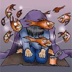
岸田メル
１９８３年生まれ、名古屋在住。好きな食べ物はラーメン。好きな飲み物は水。趣味は教育テレビを見ること。絵を描いてるときもずっと見てます。ホームページはhttp://maigo.jp/
電撃文庫
神様のメモ帳
杉井光
二〇十二年七月十三日 配信
発行者 塚田正晃
発行所 株式会社アスキー・メディアワークス
〒一〇二−八五八四 東京都千代田区富士見一−八−十九
(C)2007 HIKARU SUGII／ASCII MEDIA WORKS
本書（電子版）に掲載されているコンテンツ（ソフトウェア／プログラム／データ／情報を含む）の著作権およびその他の権利は、すべて株式会社アスキー・メディアワークスおよび正当な権利を有する第三者に帰属しています。
法律の定めがある場合または権利者の明示的な承諾がある場合を除き、これらのコンテンツを複製・転載、改変・編集、翻案・翻訳、放送・出版、公衆送信（送信可能化を含む）・再配信、販売・頒布、貸与等に使用することはできません。